23. Esercizio pratico – versione 12
In questo capitolo scriveremo un’applicazione web che rispetti l’architettura MVC (Modello-Vista-Controllore). L’applicazione potrà fornire le proprie risposte in tre formati: jSON, XML, HTML. C'è un notevole salto di complessità tra ciò che faremo ora e ciò che è stato fatto in precedenza. Riutilizzeremo la maggior parte dei concetti visti finora e descriveremo in dettaglio tutte le fasi che portano all'applicazione finale.
23.1. Architettura MVC
Implementeremo il modello di architettura denominato MVC (Modello – Vista – Controller) nel modo seguente:

L’elaborazione di una richiesta da parte di un cliente avverrà nel modo seguente:
- 1 - richiesta
Le richieste URL avranno il formato http://machine:port/contexte/….?action=uneAction¶m1=v1¶m2=v2&… Il [Contrôleur principal] utilizzerà un file di configurazione per "instradare" la richiesta verso il controller corretto e l'azione corretta all'interno di tale controller. A tal fine, utilizzerà il campo [action] del URL. Il resto del URL [param1=v1¶m2=v2&…] è costituito da parametri facoltativi che verranno trasmessi all’azione. Il valore C di MVC è in questo caso la stringa [Contrôleur principal, Contrôleur / Action]. Se nessun controller è in grado di elaborare l'azione richiesta, il server web risponderà che l'URL richiesta non è stata trovata.
- 2 - elaborazione
- l’azione selezionata [2a] può utilizzare i parametri parami che le sono stati trasmessi da [Contrôleur principal]. Questi possono provenire da diverse fonti:
- dal percorso [/param1/param2/…] dell’URL,
- dai parametri [param1=v1¶m2=v2] di URL,
- dai parametri inviati dal browser insieme alla sua richiesta;
- nell'elaborazione della richiesta dell'utente, l'azione potrebbe richiedere il livello [métier] [2b]. Una volta elaborata la richiesta del cliente, questa può generare diverse risposte. Un esempio classico è:
- una risposta di errore se la richiesta non è stata elaborata correttamente;
- una risposta di conferma in caso contrario;
- il [Contrôleur / Action] invierà la propria risposta [2c] al controller principale insieme a un codice di stato. Questi codici di stato rappresenteranno in modo univoco lo stato in cui si trova l’applicazione. Si tratterà di codici di successo o di codici di errore;
- l’azione selezionata [2a] può utilizzare i parametri parami che le sono stati trasmessi da [Contrôleur principal]. Questi possono provenire da diverse fonti:
- 3 - risposta
- a seconda che il client abbia richiesto una risposta jSON, XML o HTML, il [Contrôleur principal] istanzierà [3a], il tipo di risposta appropriato, e chiederà a quest’ultimo di inviare la risposta al cliente. Il [Contrôleur principal] gli trasmetterà sia la risposta che il codice di stato forniti dal [Contrôleur / Action] che è stato eseguito;
- se la risposta desiderata è di tipo jSON o XML, la risposta selezionata formatterà la risposta fornita da [Contrôleur / Action] e la invierà tramite [3c]. Il client in grado di elaborare questa risposta può essere uno script da console PHP o uno script JavaScript ospitato in una pagina HTML;
- se la risposta desiderata è di tipo HTML, la risposta selezionata sceglierà [3b] una delle viste HTML [Vuei] utilizzando il codice di stato che gli è stato fornito. Si tratta della vista V di MVC. A ogni codice di stato corrisponde un'unica vista. Questa vista V visualizzerà la risposta del [Contrôleur / Action] che è stato eseguito. Essa impacchetta i dati di questa risposta utilizzando HTML, CSS e JavaScript. Questi dati vengono definiti il modello della vista. È la M di MVC. Il client è quindi, nella maggior parte dei casi, un browser;
Ora precisiamo il legame tra l’architettura web MVC e l’architettura a livelli. A seconda della definizione che si dà al modello, questi due concetti sono collegati o meno. Prendiamo un’applicazione web MVC a un solo livello:

Nell’esempio sopra riportato, i [Contrôleur / Action] integrano ciascuno una parte dei livelli [métier] e [dao]. Nel livello [web] è presente un'architettura MVC, ma l'applicazione nel suo complesso non presenta un'architettura a livelli. In questo caso c'è un solo livello che svolge tutte le funzioni.
Consideriamo ora un’architettura web multistrato:

Il livello [web] può essere implementato senza seguire il modello MVC. Si ha quindi un'architettura multilivello, ma il livello web non implementa il modello MVC.
Ad esempio, nell’ambiente .NET il livello [web] quisopra può essere implementato con ASP.NET e MVC, ottenendo così un’architettura a livelli con un livello [web] di tipo MVC. Fatto ciò, è possibile sostituire questo livello ASP.NET MVC con un livello ASP.NET classico (WebForms) mantenendo il resto (business, DAO, Driver) invariato. Si ottiene così un’architettura a livelli con un livello [web] che non è più di tipo MVC.
In MVC, abbiamo affermato che il modello M era quello della vista V, c.a.d, ovvero l’insieme dei dati visualizzati dalla vista V. Viene fornita un’altra definizione del modello M di MVC:
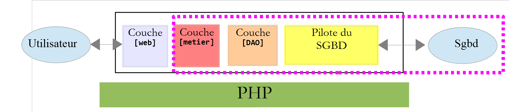
Molti autori ritengono che ciò che si trova a destra del livello [web] costituisca il modello M del MVC. Per evitare ambiguità, si può parlare:
- del modello di dominio quando si indica tutto ciò che si trova a destra del livello [web];
- del modello della vista quando si indicano i dati visualizzati da una vista V;
23.2. Struttura ad albero del progetto NetBeans
Per il progetto NetBeans adotteremo un'architettura che riflette il modello MVC:

- [3]: [main.php] è il controller principale del nostro modello MVC. È il C di MVC;
- [4]: la cartella [Controllers] conterrà i controller secondari. Ciascuno di essi gestisce un’azione specifica. Tale azione è indicata nel file URL, ad esempio […/main.php?action=authentifier-utilisateur]. Con questa azione, il file [Contrôleur principal] [main.php] selezionerà un [Contrôleur secondaire], in questo caso [AuthentifierUtilisateurController], per elaborare l’azione richiesta. Questi controllori fanno parte anche del C di MVC;
- [5]: la cartella [Model] conterrà i livelli [métier] e [dao] dell’applicazione. Secondo la terminologia adottata in precedenza, questi elementi rappresentano il modello del dominio e, secondo la terminologia adottata per la M, possono rappresentare la M di MVC;
- [6]: la cartella [Responses] contiene le classi incaricate di inviare la risposta al cliente. Esiste una classe per ogni tipo di risposta desiderata:
- [JsonResponse]: per una risposta jSON;
- [XmlResponse]: per una risposta XML;
- [HtmlResponse]: per una risposta HTML;
- [7]: la cartella [Views] contiene le viste HTML quando si desidera una risposta HTML. Si tratta della V di MVC. Queste sono attivate dalla classe [HtmlResponse] che trasmette loro i dati da visualizzare. Questi dati costituiscono il modello della vista. Secondo la terminologia adottata per la M, questi dati possono essere la M di MVC;
- [8]: la cartella [Utilities] contiene alcune utilità:
- [Logger]: la classe che consente di registrare i log in un file di testo;
- [Sendmail]: la classe che consente di inviare e-mail;
- [9]: la cartella [Logs] contiene il file di log [logs.txt];
- [10]: la cartella [Entities] contiene le classi utilizzate dai vari controller;
Utilizzando questa struttura ad albero, è possibile descrivere il percorso di elaborazione di un'azione richiesta da un client:
- [main.php] [3] riceve la richiesta;
- dopo aver effettuato alcune verifiche preliminari (l’azione rientra tra quelle accettate?), inoltra la richiesta al controller secondario [4] incaricato di elaborare tale azione;
- il controllore secondario esegue le operazioni necessarie. Nel corso del suo lavoro, potrebbe aver bisogno dei livelli [métier], [dao] e [5], nonché delle entità contenute nella cartella [10]. Invia la sua risposta al controllore principale [main.php] che lo ha attivato;
- a seconda del tipo di risposta [jSON, XML, HTML] richiesta dal cliente, il controllore principale [main.php] attiva una delle risposte contenute nella cartella [Responses] [6];
- le risposte [JsonResponse, XmlResponse] inviano rispettivamente la risposta jSON o XML al cliente;
- la risposta [HtmlResponse] utilizza una delle viste della cartella [Views] [7] per inviare una risposta HTML al cliente;
- i diversi controller hanno accesso alla classe [Logger] della cartella [8] per scrivere i log nel file di log della cartella [9]. Vengono registrati:
- l’azione richiesta;
- la risposta del relativo controller. Questa viene registrata nel formato jSON indipendentemente dal tipo [jSON, XML, HTML] richiesto;
- in caso di errore irreversibile (HTTP_INTERNAL_SERVER_ERROR), il controller principale [main.php] invia un’e-mail all’amministratore utilizzando la classe [SendMail] contenuta nella cartella [8];
23.3. Le azioni dell’applicazione
Il client trasmette al server web l’azione da eseguire sotto forma di un parametro [action] all’interno di URL [/main.php?action=xxx]. Le azioni consentite sono elencate nel file [config.json] che configura il controller principale [main.php]:
"actions":
{
"init-session": "\\InitSessionController",
"authentifier-utilisateur": "\\AuthentifierUtilisateurController",
"calculer-impot": "\\CalculerImpotController",
"lister-simulations": "\\ListerSimulationsController",
"supprimer-simulation": "\\SupprimerSimulationController",
"fin-session": "\\FinSessionController",
"afficher-calcul-impot": "\\AfficherCalculImpotController"
},
- riga 1: la chiave [actions] del dizionario jSON;
- righe 3-9: un dizionario [action:contrôleur]. A ciascuna azione è associato il controller secondario incaricato di elaborarla;
- riga 3: [init-session]: avvia una sessione di simulazioni di calcolo delle imposte. Questa azione indica il tipo di risposte desiderate [jSON, XML, HTML];
- riga 4: una volta stabilito il tipo di sessione, il cliente dovrà autenticarsi con l’azione [authentifier-utilisateur]. Finché non è identificato, tutte le altre azioni sono vietate ad eccezione di [init-session];
- riga 5: una volta identificato, il cliente potrà effettuare una serie di calcoli fiscali con l’azione [calculer-impot];
- riga 6: in qualsiasi momento, il cliente può richiedere di visualizzare l’elenco delle simulazioni che ha effettuato con l’azione [lister-simulations];
- riga 7: potrà eliminarne alcune tramite l'azione [supprimer-simulation];
- riga 8: il cliente termina la sua sessione di simulazioni con l’azione [fin-session]. Da questo momento in poi, dovrà effettuare nuovamente l’autenticazione se desidera utilizzare l’applicazione;
- riga 9: nell’applicazione HTML, l’azione [afficher-calcul-impot] richiede la visualizzazione del modulo che consente il calcolo dell’imposta;
23.4. Configurazione dell’applicazione web
L’applicazione è configurata dal seguente file jSON [config.json]:
{
"databaseFilename": "database.json",
"rootDirectory": "C:/myprograms/laragon-lite/www/php7/scripts-web/impots/version-12",
"relativeDependencies": [
"/Entities/BaseEntity.php",
"/Entities/Simulation.php",
"/Entities/Database.php",
"/Entities/TaxAdminData.php",
"/Entities/ExceptionImpots.php",
"/Utilities/Logger.php",
"/Utilities/SendAdminMail.php",
"/Model/InterfaceServerDao.php",
"/Model/ServerDao.php",
"/Model/ServerDaoWithSession.php",
"/Model/InterfaceServerMetier.php",
"/Model/ServerMetier.php",
"/Responses/InterfaceResponse.php",
"/Responses/ParentResponse.php",
"/Responses/JsonResponse.php",
"/Responses/XmlResponse.php",
"/Responses/HtmlResponse.php",
"/Controllers/InterfaceController.php",
"/Controllers/InitSessionController.php",
"/Controllers/ListerSimulationsController.php",
"/Controllers/AuthentifierUtilisateurController.php",
"/Controllers/CalculerImpotController.php",
"/Controllers/SupprimerSimulationController.php",
"/Controllers/FinSessionController.php",
"/Controllers/AfficherCalculImpotController.php"
],
"absoluteDependencies": [
"C:/myprograms/laragon-lite/www/vendor/autoload.php",
"C:/myprograms/laragon-lite/www/vendor/predis/predis/autoload.php"
],
"users": [
{
"login": "admin",
"passwd": "admin"
}
],
"adminMail": {
"smtp-server": "localhost",
"smtp-port": "25",
"from": "guest@localhost",
"to": "guest@localhost",
"subject": "plantage du serveur de calcul d'impôts",
"tls": "FALSE",
"attachments": []
},
"logsFilename": "Logs/logs.txt",
"actions":
{
"init-session": "\\InitSessionController",
"authentifier-utilisateur": "\\AuthentifierUtilisateurController",
"calculer-impot": "\\CalculerImpotController",
"lister-simulations": "\\ListerSimulationsController",
"supprimer-simulation": "\\SupprimerSimulationController",
"fin-session": "\\FinSessionController",
"afficher-calcul-impot": "\\AfficherCalculImpotController"
},
"types": {
"json": "\\JsonResponse",
"html": "\\HtmlResponse",
"xml": "\\XmlResponse"
},
"vues": {
"vue-authentification.php": [700, 221, 400],
"vue-calcul-impot.php": [200, 300, 341, 350, 800],
"vue-liste-simulations.php": [500, 600]
},
"vue-erreurs": "vue-erreurs.php"
}
Commenti
- riga 2: nome del file jSON contenente la configurazione dell'accesso al database;
- righe 3-39: configurazione delle dipendenze del progetto. Qui sono elencati tutti gli script PHP presenti nella struttura del progetto;
- righe 40-44: l'utente autorizzato a utilizzare l'applicazione;
- righe 46-54: indirizzi e-mail dell’amministratore dell’applicazione;
- riga 55: il percorso del file dei log;
- righe 56-65: associazioni [action => contrôleur secondaire chargé de la traiter];
- righe 66-70: associazioni [type de réponse => classe Response chargée d’envoyer la réponse au client];
- righe 71-75: associazioni [vue HTML => tableau des codes d’état menant à cette vue];
- riga 76: la vista [vue-erreurs] viene visualizzata in una sessione HTML ogni volta che si verifica un errore anomalo:
- un’applicazione jSON o XML viene solitamente interrogata tramite un client programmato. Quest’ultimo trasmette al server dei parametri che potrebbero essere assenti o errati. Tutti i controller gestiscono questi casi e restituiscono al client dei codici di errore. Tutti i possibili casi di errore devono essere gestiti;
- con un’applicazione HTML, la situazione è leggermente diversa. Se utilizzata normalmente, l’applicazione web utilizza solo una parte dei possibili casi d’uso dei client jSON e XML. Facciamo un esempio: l’azione [calculer-impot] richiede tre parametri inviati tramite POST (da un POST): [marié, enfants, salaire].
- Se si dispone di un client jSON che consente di digitare manualmente i URL, si può richiedere l’azione [calculer-impot] con un GET anziché un POST, oppure con un POST senza alcun parametro POSTato mentre ne occorrono tre, ecc… Il server jSON deve gestire tutti questi casi;
- Con un’applicazione web, l’azione [calculer-impot] verrà richiesta tramite un modulo web in cui nessuno dei due casi precedenti sarà possibile: l'azione [calculer-impot] verrà richiesta insieme a un POST e ai tre parametri [marié, enfants, salaire]. Alcuni di questi parametri potrebbero avere un valore errato, ma saranno comunque presenti. Tuttavia, l’utente può riprodurre alcuni errori digitando autonomamente i codici URL nel browser. Per motivi di sicurezza, è necessario gestire questo caso;
- la vista [vue-erreurs] verrà visualizzata ogni volta che un controller secondario restituirà un codice di stato incompatibile con l’applicazione web, ovvero un codice di stato non presente alle righe 72-74 del file di configurazione. Abbiamo optato per questa soluzione per motivi didattici. Un’altra opzione possibile sarebbe quella di non intervenire e limitarsi a visualizzare nuovamente la vista attualmente visualizzata nel browser del cliente, in modo che l’utente abbia l’impressione che il server non risponda alle sue richieste URL create manualmente;
23.5. Installazione di strumenti e librerie
23.5.1. Postman
[Postman] è lo strumento che ci consentirà di interrogare le diverse URL della nostra applicazione web. Ci permette di:
- di utilizzare qualsiasi URL: queste sono create manualmente;
- di inviare richieste al server web tramite un GET, POST, PUT, OPTIONS…;
- specificare i parametri di GET o di POST;
- di impostare le intestazioni HTTP della richiesta;
- ricevere una risposta nei formati jSON, XML, HTML,
- di avere accesso alle intestazioni HTTP della risposta. In questo modo si ha quindi accesso alla risposta completa HTTP del server;
Poiché creiamo manualmente le richieste URL, potremo testare tutti i possibili casi di errore e vedere come reagisce il server.
[Postman] è disponibile all’indirizzo URL [https://www.getpostman.com/downloads/]. La versione disponibile a giugno 2019 è la 7.2. Questa versione presenta un’anomalia: quando si effettuano richieste successive al server web in questione, il client [Postman 7.2] non rinvia automaticamente i cookie che il server gli invia, in particolare il cookie di sessione. Per mantenere la sessione, è quindi necessario ricopiare manualmente il cookie di sessione nelle intestazioni HTTP delle richieste successive. Non è particolarmente complicato, ma non è pratico. Si tratta di un bug che non era presente nelle versioni precedenti. Consapevole del bug, il team di [Postman] lo ha corretto in una versione alpha (potenzialmente instabile) denominata [Postman Canary], disponibile su URL [https://www.getpostman.com/downloads/canary]. È questa la versione utilizzata in questa guida. Descriveremo ora la sua installazione. Se è disponibile una versione stabile [Postman 7.3] o successiva, potete scaricarla: il bug sarà probabilmente stato risolto.
Procedete all’installazione della vostra versione di [Postman]. Durante l’installazione vi verrà chiesto di creare un account: in questo caso non servirà. L’account [Postman] serve a sincronizzare diversi dispositivi in modo che la configurazione di uno venga replicata su un altro. Nulla di tutto ciò è utile in questo caso.
Una volta installato, [Postman] presenta la seguente interfaccia:

- in [2-3] si ha accesso alle impostazioni del prodotto;

- in [6], la versione utilizzata in questo documento;
- se avete creato un account, viene eseguita una sincronizzazione tra il vostro computer e un server remoto [Postman]. Ciò è simboleggiato dalla rotellina [7] che gira ogni volta che apportate modifiche al progetto [Postman]. Per interrompere questa sincronizzazione superflua, disconnettiti da [8-9];
23.5.2. La libreria Symfony / Serializer
Per serializzare gli oggetti in jSON e XML, utilizzeremo la libreria [Symfony / Serializer]. Essa presenta in questo caso due vantaggi:
- è uniforme nel suo utilizzo per la serializzazione in jSON o XML: ciò evita di dover imparare due diverse API (Application Programming Interface);
- di default, è in grado di serializzare oggetti in jSON o XML, anche se i loro attributi sono privati. Ricordiamo che in jSON, per serializzare un oggetto, era necessario che la classe di quest’ultimo implementasse l’interfaccia [\JsonSerializable]. Il risultato ottenuto era quindi la stringa jSON di un array associativo con gli attributi della classe come chiavi. Quando si deserializzava questa stringa jSON, si otteneva l’array associativo primitivo, che doveva poi essere trasformato in un oggetto della classe che era stata serializzata. Con [Symfony / Serializer], la deserializzazione produce immediatamente un oggetto della classe serializzata. È più semplice;
La documentazione della libreria [Symfony / Serializer] è disponibile all'indirizzo URL: [https://symfony.com/doc/current/components/serializer.html] (giugno 2019).
Per installare questa libreria, apri un terminale Laragon (vedi paragrafo "link") e digita il seguente comando:

- in [1], il comando di installazione della libreria [symfony/serializer];
- in [2], un’altra libreria necessaria per il nostro progetto: consente la serializzazione degli oggetti;

23.6. Le entità dell’applicazione

Le entità [BaseEntity, Database, ExceptionImpots, TaxAdminData] sono state utilizzate a partire dalla versione 08 del servizio web (cfr. paragrafo "link").
La classe [Simulation] servirà a incapsulare gli elementi di una simulazione di calcolo delle imposte:
<?php
namespace Application;
class Simulation extends BaseEntity {
// attributi di una simulazione di calcolo delle imposte
protected $marié;
protected $enfants;
protected $salaire;
protected $impôt;
protected $surcôte;
protected $décôte;
protected $réduction;
protected $taux;
// getter
public function getMarié() {
return $this->marié;
}
public function getEnfants() {
return $this->enfants;
}
public function getSalaire() {
return $this->salaire;
}
public function getImpôt() {
return $this->impôt;
}
public function getSurcôte() {
return $this->surcôte;
}
public function getDécôte() {
return $this->décôte;
}
public function getRéduction() {
return $this->réduction;
}
public function getTaux() {
return $this->taux;
}
}
Commenti
- riga 5: la classe [Simulation] estende la classe [BaseEntity] e ne eredita quindi i metodi:
- [setFromArrayOfAttributes($arrayOfAttributes)]: che consente di inizializzare gli attributi della classe;
- [__toString]: che restituisce la stringa jSON dell'oggetto;
- righe 7-14: gli attributi della simulazione;
- righe 16-47: i getter della classe;
23.7. Le utilità dell’applicazione

La classe [Logger] consente di registrare gli eventi in un file di testo. Questa classe è stata descritta nel paragrafo link.
La classe [SendAdminMail] consente di inviare un’e-mail all’amministratore dell’applicazione. Questa classe è stata descritta nel paragrafo link.
23.8. I livelli [métier] e [dao]


Le classi e le interfacce dei livelli [métier] e [dao] sono raggruppate nella cartella [Model]. Sono state tutte definite e utilizzate nelle versioni precedenti:
ExceptionImpots | La classe delle eccezioni generate dal livello [dao]. Definita nel paragrafo «link». |
InterfaceServerDao | Interfaccia implementata dal livello [dao] del server. Definita nel paragrafo "link". |
ServerDao | Implementazione dell’interfaccia [InterfaceServerDao]. Implementa il livello [dao] del server. Definita nel paragrafo «link». |
ServerDaoWithSession | Implementazione dell’interfaccia [InterfaceServerDao]. Implementa il livello [dao] del server. Definita nel paragrafo «link». |
InterfaceServerMetier | Interfaccia implementata dal livello [métier] del server. Definita nel paragrafo "link". |
ServerMetier | Implementazione dell'interfaccia [InterfaceMetier]. Implementa il livello [metier] del server. Definita nel paragrafo "link". |
L'applicazione in fase di sviluppo utilizza molti elementi già presentati e utilizzati:
- i livelli [métier] e [dao];
- le utilità [Logger] e [SendAdminMail];
- le entità [ExceptionImpots, TaxAdminData, Database];
Ci concentreremo sul livello [web] dell’applicazione:

23.9. Il controller principale [main.php]
23.9.1. Introduzione

- [1-2]: il controller principale [main.php] [1] è configurato dal file [config.json] [2];
Ricordiamo la posizione del controller principale nella nostra architettura MVC:

In [1], il controller principale [main.php] è il primo elemento dell’architettura MVC a elaborare la richiesta del cliente. Svolge diverse funzioni:
- innanzitutto esegue le verifiche di base:
- il file di configurazione esiste ed è valido;
- carica tutte le dipendenze del progetto. Ciò equivale a caricare tutti gli elementi dell’architettura MVC;
- l’azione richiesta è stata specificata? Se sì, è valida?
- se l’azione richiesta è valida, seleziona [2a] il controller secondario che la elaborerà e gli trasmette le informazioni di cui ha bisogno: la richiesta HTTP, la sessione, la configurazione dell’applicazione;
- recuperare [2c] la risposta del controller secondario. A seconda del tipo (jSON, XML, HTML) dell’applicazione richiesta dal cliente, selezionare [3a] la risposta (JsonResponse, XmlResponse, HtmlResponse) incaricata di inviare la risposta al cliente e di trasmetterle tutte le informazioni di cui ha bisogno (la richiesta HTTP, la sessione, la configurazione dell’applicazione, la risposta del controller secondario);
- una volta inviata tale risposta ([3c]), procedere al rilascio delle risorse che potrebbero essere state mobilitate per l’elaborazione della richiesta;
23.9.2. [main.php] - 1
Il codice del controller principale [main.php] è il seguente:
<?php
// rigoroso rispetto dei tipi dichiarati dei parametri delle funzioni
declare (strict_types=1);
// spazio dei nomi
namespace Application;
// dipendenze Symfony
use Symfony\Component\HttpFoundation\Request;
use Symfony\Component\HttpFoundation\Response;
use Symfony\Component\HttpFoundation\Session\Session;
// gestione degli errori tramite PHP
//ini_set("display_errors", "0");
error_reporting(E_ALL && !E_WARNING && !E_NOTICE);
// si recupera la configurazione
$configFilename = "config.json";
$fileContents = \file_get_contents($configFilename);
$erreur = FALSE;
// errore?
if (!$fileContents) {
// si registra l'errore
$état = 131;
$erreur = TRUE;
$message = "Le fichier de configuration [$configFilename] n'existe pas";
}
if (!$erreur) {
// si recupera il codice JSON dal file di configurazione in un array associativo
$config = \json_decode($fileContents, true);
// errore?
if (!$config) {
// si registra l'errore
$erreur = TRUE;
$état = 132;
$message = "Le fichier de configuration [$configFilename] n'a pu être exploité correctement";
}
}
// errore?
if ($erreur) {
// preparazione della risposta JSON dal server
// non è possibile utilizzare il file di configurazione
// dipendenze Symfony
require_once "C:/myprograms/laragon-lite/www/vendor/autoload.php";
// preparazione della risposta
$response = new Response();
$response->headers->set("content-type", "application/json");
$response->setCharset("utf-8");
// codice di stato
$response->setStatusCode(Response::HTTP_INTERNAL_SERVER_ERROR);
// contenuto
$response->setContent(json_encode(["action" => "", "état" => $état, "réponse" => $message], JSON_UNESCAPED_UNICODE));
// invio
$response->send();
// fine
exit;
}
…
Commenti
- righe 10-12: il controller principale utilizza i seguenti oggetti di Symfony:
- [Request]: la richiesta HTTP attualmente in elaborazione;
- [Session]: la sessione dell’applicazione web;
- [Response]: la risposta HTTP al client;
- riga 15: durante tutto lo sviluppo questa riga verrà mantenuta come commento: gli errori PHP vengono quindi integrati nel flusso di testo inviato al client. Se il client è un browser, ciò consente di visualizzare gli errori riscontrati dal server. Si tratta di un ausilio per il debug;
- riga 16: vengono segnalati tutti gli errori (E_ALL) tranne gli avvisi (! E_WARNING) e le informazioni non critiche (! E_NOTICE). Ad esempio, se un file non può essere aperto, PHP genera un errore di tipo [E_NOTICE]. Se la riga 15 consente la visualizzazione degli errori, l’errore di apertura del file appare nel browser del cliente. Va bene se avete dimenticato di testare il risultato dell’apertura del file, meno bene se avevate previsto il test: una riga di [notice] va quindi a inquinare la risposta del server al client. In fase di sviluppo, anche la riga 16 dovrebbe essere commentata: non volete perdere nessun errore;
- riga 19: il file di configurazione viene letto;
- righe 22-27: se la lettura non è andata a buon fine, si registra l’errore (riga 25), si imposta l’applicazione nello stato [131] e si prepara un messaggio di errore;
- riga 30: si decodifica la stringa jSON dal file di configurazione;
- righe 32-37: se la decodifica non va a buon fine, si registra l’errore (riga 34), si imposta l’applicazione nello stato [132] e si prepara un messaggio di errore;
- righe 40-57: in caso di errore nella lettura del file di configurazione, non è più possibile proseguire. Si prepara quindi una risposta jSON per il client:
- riga 44: poiché il file di configurazione non è stato letto, è necessario importare manualmente il file [autoload] necessario per [Symfony];
- righe 46-47: si prepara una risposta jSON;
- riga 50: il codice HTTP della risposta sarà 500 INTERNAL_SERVER_ERROR;
- riga 52: si imposta il contenuto jSON della risposta. Tutte le risposte fornite dall’applicazione web in esame avranno tre chiavi:
- [action]: l’azione richiesta dal client;
- [état]: lo stato dell’applicazione dopo l’esecuzione di tale azione;
- [réponse]: la risposta del server web;
- riga 54: la risposta jSON viene inviata al client;
23.9.3. Test [Postman] - 1
Verificheremo il comportamento del server quando il file di configurazione è assente o non corretto:

Raggrupperemo in raccolte le diverse richieste che il nostro client [Postman] invierà al server delle imposte.
- In [1], create una nuova raccolta;
- in [2], assegnategli un nome;
- in [3], la descrizione è facoltativa;

- nelle raccolte [4], ora compare una raccolta denominata [impots-server-tests-version12] [5];
- in [6], è possibile aggiungere una nuova richiesta alla raccolta;

- in [7], si assegna un nome alla richiesta;
- in [8], la descrizione è facoltativa;

- in [9-11], la query aggiunta alla raccolta;
- in [12], si sceglie il tipo di richiesta, in questo caso una richiesta [GET]. In [19], i diversi tipi di richiesta disponibili;
- in [13], qui si digita l’URL del server;
- in [14], qui si inseriscono i parametri aggiunti all’URL e che saranno quindi parametri dell’GET. Il vantaggio di inserirli qui piuttosto che direttamente nel URL è che verranno sottoposti a codifica URL da parte del [Postman]. Se li inserite voi stessi nel URL, spetterà a voi effettuare la codifica URL;
- in [15], [Authorization] serve a definire l’utente che effettuerà l’accesso. Non dovremo utilizzare questa opzione;
- in [16], le intestazioni HTTP che accompagneranno la richiesta. Alcune intestazioni vengono incluse automaticamente nella richiesta. Qui potete aggiungerne di nuove;
- In [17], [Body] indica i parametri di un’operazione [POST]. Dovremo utilizzare questa opzione;
Effettueremo il seguente test:
- in [main.php], si indica che il file di configurazione è [config2.json], che però non esiste:

- la riga 16 del codice deve essere rimossa dal commento;
- riga 18: l’errore relativo al nome del file di configurazione;
Accediamo a [Postman] [13, 20], l’URL del server web di calcolo delle imposte ed eseguiamo [21]:

La risposta restituita dal server (ovviamente Laragon deve essere attivo) è la seguente:

- in [22], il server ha restituito un codice HTTP [500 Internal Server Error];
- in [23], [Body] indica il corpo della risposta, ovvero il documento inviato dal server dopo le intestazioni HTTP [28];
- in [26], si vede che [Postman] ha ricevuto una risposta jSON;
- in [27], la risposta jSON formattata;
- in [28], la risposta jSON in formato grezzo senza formattazione;
- in [29], la modalità [Preview] viene utilizzata quando la risposta è in formato HTML. La modalità [Preview] visualizza quindi la pagina ricevuta;
- in [30], la risposta jSON del server. È proprio quella che ci aspettavamo;
In [25], le intestazioni HTTP inviate nella risposta del server sono le seguenti:

- in [32], il tipo jSON della risposta;
Questo primo test ci ha permesso di constatare che:
- è possibile inviare qualsiasi tipo di richiesta al server testato;
- è possibile impostare i parametri di GET o di POST;
- si dispone della risposta completa: le intestazioni HTTP e il documento che segue tali intestazioni [Body];
Ora effettuiamo un secondo test:

- in [1-3], il file [config3.json] è un file jSON sintatticamente errato;
- in [4], [main.php] è configurato per utilizzare [config3.json];
Aggiungiamo una nuova richiesta in [Postman]:

- In [1-3], si fa clic con il tasto destro su [2] e si seleziona l’opzione [duplicate] per duplicare la query [2];
- in [4], la nuova query ha un nome predefinito che si modifica in [5];

- in [6], la richiesta rinominata;
- in [9-10], si invia la stessa richiesta GET di prima;

- in [11], la risposta jSON del server;
Abbiamo illustrato qui come sarebbero state testate le diverse azioni del servizio web per il calcolo delle imposte.
23.9.4. [main.php] – 2
Riprendiamo l’analisi del codice del controller principale [main.php]:
<?php
// rigoroso rispetto dei tipi dichiarati dei parametri delle funzioni
declare (strict_types=1);
// spazio dei nomi
namespace Application;
// dipendenze Symfony
use Symfony\Component\HttpFoundation\Request;
use Symfony\Component\HttpFoundation\Response;
use Symfony\Component\HttpFoundation\Session\Session;
// gestione degli errori tramite PHP
//ini_set("display_errors", "0");
error_reporting(E_ALL && !E_WARNING && !E_NOTICE);
// si recupera la configurazione
$configFilename = "config.json";
…
// si includono le dipendenze necessarie allo script
$rootDirectory = $config["rootDirectory"];
foreach ($config["relativeDependencies"] as $dependency) {
require_once "$rootDirectory$dependency";
}
// dipendenze assolute (librerie di terze parti)
foreach ($config["absoluteDependencies"] as $dependency) {
require_once "$dependency";
}
// creazione del file di log
try {
$logger = new Logger($config['logsFilename']);
} catch (ExceptionImpots $ex) {
// Impossibile creare il file di log - errore interno del server
$état = 133;
(new JsonResponse())->send(
NULL, NULL, $config,
Response::HTTP_INTERNAL_SERVER_ERROR,
["action" => "non déterminée", "état" => $état, "réponse" => "Le fichier de logs [{$config['logsFilename']}] n'a pu être créé"],
[]);
// completato
exit;
}
Commenti
- riga 18: abbiamo un file di configurazione [config.json] ora esistente e sintatticamente corretto. Bisognerebbe inoltre verificare che le chiavi previste in questo file siano effettivamente presenti. Considereremo che ciò rientri nel normale lavoro di debug dello sviluppatore. Avremmo potuto applicare lo stesso ragionamento ai due errori precedenti;
- righe 20-28: si includono tutte le dipendenze necessarie al progetto web. Abbiamo già incontrato questo codice diverse volte;
- righe 31-43: si tenta di creare l’oggetto [Logger] che ci consentirà di registrare gli eventi nel file [$config['logsFilename']]. Questa creazione potrebbe non andare a buon fine;
- righe 33-43: gestione dell’errore di creazione dell’oggetto [Logger];
- riga 35: si imposta un numero di stato;
- righe 36-40: invio di una risposta jSON;
- riga 42: si interrompe lo script;
Tutte le risposte inviate al client implementano la seguente interfaccia [InterfaceResponse]:

Il codice dell’interfaccia [InterfaceResponse] è il seguente:
<?php
namespace Application;
// dipendenze Symfony
use Symfony\Component\HttpFoundation\Request;
use Symfony\Component\HttpFoundation\Session\Session;
interface InterfaceResponse {
// Richiesta $request: richiesta in elaborazione
// Sessione $session: la sessione dell'applicazione web
// array $config: la configurazione dell'applicazione
// int statusCode: codice di stato della risposta HTTP
// array $content: la risposta del server
// array $headers: le intestazioni HTTP da aggiungere alla risposta
// Logger $logger: il logger per la scrittura dei log
public function send(
Request $request = NULL,
Session $session = NULL,
array $config,
int $statusCode,
array $content,
array $headers,
Logger $logger = NULL): void;
}
- righe 19-27: l’interfaccia [InterfaceResponse] dispone di un unico metodo [send] per inviare la risposta al client;
- righe 11-17: il significato dei diversi parametri del metodo [send];
- righe 23-25: i parametri [$statusCode, $content, $headers] sono presenti nel risultato standard dei controller secondari dell’applicazione. Tuttavia, la risposta potrebbe necessitare di ulteriori informazioni. Pertanto, le vengono forniti i primi tre parametri (righe 20-22) che le consentono di accedere a tutte le informazioni relative alla richiesta, alla sessione e alla configurazione;
- riga 26: la risposta richiede il parametro [Logger] poiché registrerà la risposta inviata al cliente;
La classe [JsonResponse] implementa l’interfaccia [InterfaceResponse] nel modo seguente:
<?php
namespace Application;
// dipendenze Symfony
use Symfony\Component\Serializer\Encoder\JsonEncode;
use Symfony\Component\Serializer\Encoder\JsonEncoder;
use Symfony\Component\Serializer\Normalizer\ObjectNormalizer;
use Symfony\Component\Serializer\Serializer;
use \Symfony\Component\HttpFoundation\Request;
use \Symfony\Component\HttpFoundation\Session\Session;
class JsonResponse extends ParentResponse implements InterfaceResponse {
// Richiesta $request: richiesta in fase di elaborazione
// Sessione $session: la sessione dell'applicazione web
// array $config: la configurazione dell'applicazione
// int statusCode: codice di stato della risposta HTTP
// array $content: la risposta del server
// array $headers: le intestazioni HTTP da aggiungere alla risposta
// Logger $logger: il logger per la scrittura dei log
public function send(
Request $request = NULL,
Session $session = NULL,
array $config,
int $statusCode,
array $content,
array $headers,
Logger $logger = NULL): void {
// preparazione del serializzatore Symfony
$serializer = new Serializer(
[
// necessario per la serializzazione degli oggetti
new ObjectNormalizer()],
// codificatore jSON
// per le opzioni, inserire OU tra le diverse opzioni
[new JsonEncoder(new JsonEncode([JsonEncode::OPTIONS => JSON_UNESCAPED_UNICODE]))]
);
// serializzazione jSON
$json = $serializer->serialize($content, 'json');
// intestazioni
$headers = array_merge($headers, ["content-type" => "application/json"]);
// invio della risposta
parent::sendResponse($statusCode, $json, $headers);
// log
if ($logger !== NULL) {
$logger->write("réponse=$json\n");
}
}
}
Commenti
- riga 13: la classe implementa l’interfaccia [InterfaceResponse];
- riga 13: la classe estende la classe [ParentResponse]. Tutti i tipi di [Response] estendono questa classe. È questa classe padre che invia la risposta al client (riga 46). Poiché questo codice era comune a tutti i tipi di [Response], è stato fattorizzato in una classe padre;
- righe 33-40: istanziamento del serializzatore [Symfony] che tradurrà la risposta del server [$content] in una stringa jSON (riga 42);
- righe 34-36: il primo parametro del costruttore di [Serializer] è un array. In esso viene inserita un'istanza della classe [ObjectNormalizer] necessaria per la serializzazione degli oggetti. Questo caso si presenta in questa applicazione con un elenco di simulazioni in cui ogni simulazione è un'istanza della classe [Simulation];
- riga 39: anche il secondo parametro del costruttore di [Serializer] è un array: vi si inseriscono tutti gli encoder utilizzati in una serializzazione (XML, jSON, CSV…);
- riga 39: qui ci sarà un solo codificatore, di tipo [JsonEncoder]. Il costruttore senza parametri sarebbe stato sufficiente. In questo caso, abbiamo passato un parametro [JsonEncode] al costruttore, esclusivamente per specificare le opzioni di codifica jSON;
- riga 39: il parametro del costruttore [JsonEncode] è un array di opzioni. Qui si utilizza l’opzione [JSON_UNESCAPED_UNICODE] per richiedere che i caratteri UTF-8 della stringa jSON vengano rappresentati in modo nativo e non «escapati»;
- riga 42: il corpo della risposta HTTP viene serializzato in jSON grazie al serializzatore precedente;
- riga 44: si aggiunge l'intestazione HTTP che indica al client che gli verrà inviato il file jSON;
- riga 46: si richiede alla classe padre di inviare la risposta al cliente;
- righe 48-50: si registra la risposta jSON;
Il codice della classe padre [ParentResponse] è il seguente:
<?php
namespace Application;
// dipendenze Symfony
use Symfony\Component\HttpFoundation\Response;
class ParentResponse {
// int $statusCode: il codice HTTP dello stato della risposta
// stringa $content: il corpo della risposta da inviare
// a seconda dei casi, si tratta di una stringa jSON, XML, HTML
// array $headers: le intestazioni HTTP da aggiungere alla risposta
public function sendResponse(
int $statusCode,
string $content,
array $headers): void {
// preparazione della risposta testuale del server
$response = new Response();
$response->setCharset("utf-8");
// codice di stato
$response->setStatusCode($statusCode);
// intestazioni
foreach ($headers as $text => $value) {
$response->headers->set($text, $value);
}
// invio della risposta
$response->setContent($content);
$response->send();
}
}
Commenti
- righe 10-13: significato dei tre parametri del metodo [send];
- riga 17: si noti che il corpo della risposta è di tipo [string] e quindi pronto per essere inviato (riga 30);
- riga 22: la risposta conterrà caratteri UTF-8;
- riga 24: codice di stato HTTP della risposta;
- righe 26-28: aggiunta delle intestazioni HTTP fornite dal codice chiamante;
- righe 30-31: invio della risposta al cliente;
Abbiamo descritto in dettaglio l’intero ciclo di una risposta jSON. Non torneremo sull’argomento nel prosieguo. È sufficiente ricordare la firma dell’interfaccia [InterfaceResponse]:
interface InterfaceResponse {
// Richiesta $request: richiesta in elaborazione
// Sessione $session: la sessione dell'applicazione web
// array $config: la configurazione dell'applicazione
// int statusCode: codice di stato della risposta HTTP
// array $content: la risposta del server
// array $headers: le intestazioni HTTP da aggiungere alla risposta
// Logger $logger: il logger per la scrittura dei log
public function send(
Request $request = NULL,
Session $session = NULL,
array $config,
int $statusCode,
array $content,
array $headers,
Logger $logger = NULL): void;
}
Il controller principale [main.php] dovrà rispettare questa firma ogni volta che richiederà l’invio della risposta al cliente.
23.9.5. Test [Postman] – 2
Modifichiamo il file [config.json] come segue:

- in [1], indichiamo che il file di log è [Logs], che è una cartella denominata [2]. La creazione del file [Logs] dovrebbe quindi fallire;
Creiamo una nuova richiesta [Postman] [3], denominata [erreur-133]:

- [2-4]: definiamo la stessa richiesta dei due test precedenti;
- [5-7]: otteniamo effettivamente la risposta jSON prevista;
23.9.6. [main.php] – 3
Continuiamo l’analisi del controller principale [main.php]:
<?php
// rigoroso rispetto dei tipi dichiarati dei parametri delle funzioni
declare (strict_types=1);
// spazio dei nomi
namespace Application;
// dipendenze Symfony
use Symfony\Component\HttpFoundation\Request;
use Symfony\Component\HttpFoundation\Response;
use Symfony\Component\HttpFoundation\Session\Session;
// gestione degli errori tramite PHP
…
// Creazione del file di log
…
// primo log
$logger->write("\n---nouvelle requête\n");
// richiesta corrente
$request = Request::createFromGlobals();
// sessione
$session = new Session();
$session->start();
// elenco degli errori
$erreurs = [];
$erreur = FALSE;
// gestione dell'azione richiesta
if (!$request->query->has("action")) {
$erreurs[] = "paramètre [action] manquant";
$erreur = TRUE;
$état = 101;
$action = "";
} else {
// si memorizza l'azione
$action = strtolower($request->query->get("action"));
}
// si registra l'azione
$logger->write("action [$action] demandée\n");
// L'azione esiste?
if (!$erreur && !array_key_exists($action, $config["actions"])) {
$erreurs[] = "action [$action] invalide";
$erreur = TRUE;
$état = 102;
}
// il tipo di sessione deve essere noto prima di eseguire determinate azioni
if (!$erreur && !$session->has("type") && $action !== "init-session") {
$erreurs[] = "pas de session en cours. Commencer par action [init-session]";
$erreur = TRUE;
$état = 103;
}
// per alcune azioni è necessario essere autenticati
if (!$erreur && !$session->has("user") && $action !== "authentifier-utilisateur" && $action !== "init-session") {
$erreurs[] = "action demandée par utilisateur non authentifié";
$erreur = TRUE;
$état = 104;
}
// Errori?
if ($erreurs) {
// si prepara la risposta senza inviarla
$statusCode = Response::HTTP_BAD_REQUEST;
$content = ["réponse" => $erreurs];
$headers = [];
} else {
// ---------------------------
// si esegue l'azione tramite il relativo controller
$controller = __NAMESPACE__ . $config["actions"][$action];
$logger->write("contrôleur : $controller\n");
list($statusCode, $état, $content, $headers) = (new $controller())->execute($config, $request, $session);
}
// --------------------- si invia la risposta
// caso di errore fatale HTTP_INTERNAL_SERVER_ERROR
// si invia un'e-mail all'amministratore, se possibile
if ($statusCode === Response::HTTP_INTERNAL_SERVER_ERROR && $config['adminMail'] != NULL) {
$infosMail = $config['adminMail'];
$infosMail['message'] = json_encode($content, JSON_UNESCAPED_UNICODE);
$sendAdminMail = new SendAdminMail($infosMail, $logger);
$sendAdminMail->send();
}
// la risposta dipende dal tipo di sessione
if ($session->has("type")) {
// il tipo di sessione è contenuto nella sessione
$type = $session->get("type");
} else {
// se nella sessione non è presente alcun tipo, per impostazione predefinita la risposta sarà in formato jSON
$type = "json";
}
// si aggiungono le chiavi [action, état] alla risposta del controller
$content = ["action" => $action, "état" => $état] + $content;
// si istanzia l'oggetto [Response] incaricato di inviare la risposta al client
$response = __NAMESPACE__ . $config["types"][$type]["response"];
(new $response())->send($request, $session, $config, $statusCode, $content, $headers, $logger);
// la risposta è stata inviata - si liberano le risorse
$logger->close();
exit;
Commenti
- una volta effettuate le prime verifiche e accertato di poter operare, il controller principale si concentra sull’azione che gli è stata richiesta: essa deve soddisfare determinate condizioni;
- riga 21: si registra il fatto che è presente una nuova richiesta. Non era possibile farlo prima perché non si era certi di disporre di un file di log valido;
- riga 23: si incapsulano tutte le informazioni della richiesta del cliente nell’oggetto Symfony [Request];
- riga 26: si avvia una nuova sessione o si recupera quella esistente, se presente;
- riga 27: la sessione viene attivata;
- riga 29: un array di messaggi di errore;
- riga 30: un valore booleano che, nel corso dei test, indica se si è verificato o meno un errore;
- riga 32: il parametro [action] deve far parte di URL nella forma [main.php?action=uneAction]. Il parametro [action] fa quindi parte dei parametri [$request→query];
- righe 33-36: caso in cui il parametro [action] non sia presente nel URL. L’errore viene segnalato e gli viene assegnato uno stato [101];
- riga 39: se il parametro [action] è presente nel URL, viene memorizzato;
- riga 42: il tipo di azione viene registrato;
- righe 45-49: se il parametro [action] è presente, deve essere valido. Tutte le azioni consentite sono definite nella tabella associativa [$config["actions"]];
- righe 46-48: se l’azione non è valida, l’errore viene registrato e le viene assegnato lo stato [102];
- righe 52-56: l’azione è valida. Deve tuttavia soddisfare ulteriori condizioni. L’applicazione web fornisce tre tipi di risposta (jSON, XML, HTML). Questo tipo è determinato dall’azione [init-session]. Tale azione inserisce il tipo di sessione nella chiave [type];
- riga 52: al di fuori dell’azione [init-session], qualsiasi altra azione deve essere eseguita con una chiave [type] nella sessione;
- righe 53-55: in caso contrario, viene registrato l’errore e viene assegnato lo stato [103];
- righe 58-63: ad eccezione delle azioni [init-session] e [authentifier-utilisateur], tutte le altre azioni devono essere eseguite dopo l’autenticazione. L’autenticazione avviene tramite l’azione [authentifier-utilisateur], che, in caso di esito positivo, inserisce una chiave [user] nella sessione;
- riga 59: se l’azione non è né [init-session] né [authentifier-utilisateur] e la chiave [user] non è presente nella sessione, si verifica un errore;
- righe 60-62: si registra l’errore e gli si assegna lo stato [104];
- righe 66-71: si verifica se l’array [$erreurs] è non vuoto. Se lo è, allora l’azione richiesta o il suo contesto di esecuzione sono errati;
- righe 68-70: si prepara la risposta da inviare al cliente, ma non la si invia ancora;
- riga 68: codice di stato HTTP;
- riga 69: corpo della risposta;
- riga 70: intestazioni da aggiungere alla risposta, nessuna in questo caso;
- riga 73: si ha un'azione valida. Si chiederà al relativo controller (secondario) di elaborarla;
- riga 74: si costruisce il nome della classe del controller da eseguire. [__NAMESPACE__] è lo spazio dei nomi in cui ci si trova, qui [Application] (riga 7);
- i nomi delle classi del controller secondario si trovano nel file [config.json]:
"actions":
{
"init-session": "\\InitSessionController",
"authentifier-utilisateur": "\\AuthentifierUtilisateurController",
"calculer-impot": "\\CalculerImpotController",
"lister-simulations": "\\ListerSimulationsController",
"supprimer-simulation": "\\SupprimerSimulationController",
"fin-session": "\\FinSessionController",
"afficher-calcul-impot": "\\AfficherCalculImpotController"
},
A ogni azione corrisponde un controller secondario. Se l’azione è [authentifier-utilisateur], la variabile [$controller] della riga 74 avrà quindi il valore [Application/AuthentifierUtilisateurController];
- riga 75: viene registrato il nome del controller secondario, a scopo di verifica durante lo sviluppo;
- riga 76: viene eseguito il controller secondario. Torneremo sui controller secondari più avanti;
- riga 76: tutti i controllori secondari restituiscono lo stesso tipo di risultato, ovvero un array:
- il primo elemento dell'array [$statusCode] è il codice di stato HTTP della risposta da inviare;
- il secondo elemento [$état] rappresenta lo stato dell’applicazione dopo l’esecuzione del controller;
- il terzo elemento [$content] è un array associativo con l’unica chiave [réponse], che rappresenta il corpo della risposta da inviare al client;
- il quarto elemento [$headers] è un array di intestazioni HTTP da aggiungere alla risposta inviata al client;
- riga 79: si arriva qui:
- o perché si è verificato un errore (righe 68-70);
- oppure dopo l’esecuzione di un controller (righe 72-76);
- in entrambi i casi, gli elementi [$statusCode, $état, $content, $headers] necessari per elaborare la risposta al cliente sono noti;
- righe 82-87: trattano il caso particolare del codice di stato [500 Internal Server Error]. Se un controller ha impostato questo codice di stato, significa che l’applicazione non può funzionare. È il caso, ad esempio, del calcolo dell’imposta se il SGBD utilizzato non è stato avviato o non risponde più. In tal caso viene inviata un’e-mail all’amministratore dell’applicazione per avvisarlo. Non forniremo ulteriori commenti su questo codice. L’utilizzo della classe [SendAdminMail] è già stato illustrato (paragrafo link);
- righe 89-95: si determina il tipo [jSON, XML, HTML] dell’applicazione web. Se l’azione [init-session] è stata eseguita con successo, questo tipo è presente nella sessione associata alla chiave [type] (riga 91). In caso contrario, si assegna arbitrariamente un tipo alla risposta, ovvero il tipo jSON (riga 94);
- riga 97: [$content] è un array con un'unica chiave [réponse] e un unico valore, ovvero il corpo della risposta da inviare al client. Vi si aggiungono le chiavi [action] e [état]. La chiave [action] consentirà di monitorare meglio i log del file [logs.txt]. La chiave [état] avrà due funzioni:
- consentirà ai client jSON e XML di conoscere lo stato in cui l’azione eseguita ha portato l’applicazione web;
- nel caso di una risposta HTML, consentirà di scegliere la vista HTML da inviare al browser del cliente;
- riga 99: si sceglie il tipo di classe [Response] da eseguire per inviare la risposta al client;
Abbiamo già presentato la classe [JsonResponse] nel paragrafo relativo ai link. Essa implementa l’interfaccia [InterfaceResponse] ed estende la classe [ParentResponse]. Lo stesso vale per le altre due classi [XmlResponse] e [HtmlResponse].
Le risposte sono raccolte nella cartella [Responses]:
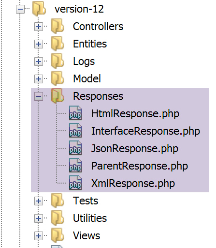
Tutte queste classi implementano l’interfaccia [InterfaceResponse], presentata anche nel paragrafo [link]:
<?php
namespace Application;
// dipendenze Symfony
use Symfony\Component\HttpFoundation\Request;
use Symfony\Component\HttpFoundation\Session\Session;
interface InterfaceResponse {
// Richiesta $request: richiesta in fase di elaborazione
// Sessione $session: la sessione dell'applicazione web
// array $config: la configurazione dell'applicazione
// int statusCode: codice di stato della risposta HTTP
// array $content: la risposta del server
// array $headers: le intestazioni HTTP da aggiungere alla risposta
// Logger $logger: il logger per la scrittura dei log
public function send(
Request $request = NULL,
Session $session = NULL,
array $config,
int $statusCode,
array $content,
array $headers,
Logger $logger = NULL): void;
}
Questa interfaccia dispone di un unico metodo, [send], incaricato di inviare la risposta al client. Questo metodo presenta i 7 parametri descritti alle righe 11-17. Tutte le classi e le interfacce della cartella [Responses] si trovano nello spazio dei nomi [Application] (riga 3).
Torniamo al codice di [main.php]:
…
// si aggiungono le chiavi [action, état] alla risposta del controller
$content = ["action" => $action, "état" => $état] + $content;
// si istanzia l'oggetto [Response] incaricato di inviare la risposta al client
$response = __NAMESPACE__ . $config["types"][$type];
(new $response())->send($request, $session, $config, $statusCode, $content, $headers, $logger);
// la risposta è stata inviata - si liberano le risorse
$logger->close();
exit;
- riga 5: si istanzia la classe [Response] adatta al tipo di applicazione. Queste classi sono definite nel file [config.json] come segue:
"types": {
"json": "\\JsonResponse",
"html": "\\HtmlResponse",
"xml": "\\XmlResponse"
},
- riga 5: il nome della classe è preceduto dal suo spazio dei nomi;
- riga 6: la classe [Response] viene istanziata e il suo metodo [send] viene chiamato con i 7 parametri previsti. Questi parametri sono quelli dell’interfaccia [InterfaceResponse] che tutte le classi di risposta implementano. Questo invia la risposta al client;
- riga 9: si chiude il file di log;
- riga 10: il controller principale ha terminato il proprio lavoro;
23.9.7. Test [Postman] – 3
Testeremo vari casi di errore del parametro [action] di URL.

- in [1]:
- [erreur-101]: caso in cui il parametro [action] manca nel URL;
- [erreur-102]: caso in cui il parametro [action] è presente nel file URL ma non viene riconosciuto;
- [erreur-103]: caso in cui il parametro [action] è presente nell’URL, riconosciuto ma senza che sia stato definito il tipo di risposta atteso [json, xml, html];
Ogni richiesta viene eseguita. Presentiamo direttamente i risultati ottenuti:
Sopra:
- in [2-4], una richiesta senza il parametro [action] presente in URL [4];
- in [5-7], il risultato jSON;

Sopra:
- in [5-9], una richiesta con un parametro [action] non valido;
- in [10-13], la risposta jSON;

Sopra:
- in [14-19], un'azione riconosciuta ma il tipo (json, xml, html) non è stato ancora specificato;
- in [20-23], la risposta jSON del server;
23.10. I controller secondari
Ogni azione viene eseguita da uno dei controller della cartella [Controllers]:
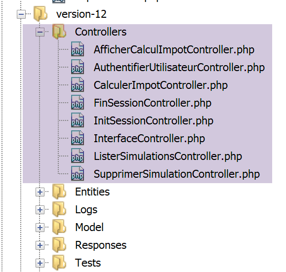

Nell’architettura generale dell’applicazione sopra descritta, i controller secondari sono in [2a].
Ogni controller implementa la seguente interfaccia [InterfaceController]:
<?php
namespace Application;
// dipendenze Symfony
use Symfony\Component\HttpFoundation\Request;
use Symfony\Component\HttpFoundation\Session\Session;
interface InterfaceController {
// $config è la configurazione dell'applicazione
// elaborazione di una richiesta Request
// utilizza la sessione Session e può modificarla
// $infos sono informazioni aggiuntive specifiche per ciascun controller
// restituisce una tabella [$statusCode, $état, $content, $headers]
public function execute(
array $config,
Request $request,
Session $session,
array $infos=NULL): array;
}
Commenti
- tutti i controller secondari vengono eseguiti tramite il metodo [execute] alla riga 17. A questo metodo vengono passate le informazioni note del controller principale:
- riga 18: [array $config] che incapsula la configurazione dell’applicazione;
- riga 19: [Request $request], che rappresenta la richiesta HTTP attualmente in elaborazione;
- riga 20: [Session $session], che rappresenta la sessione corrente dell’applicazione web;
- riga 21: [array $infos=NULL], che è un array aggiuntivo di informazioni per il controller nel caso in cui i primi tre parametri del metodo non fossero sufficienti. In questa applicazione, questo parametro non è mai stato utilizzato. È presente per precauzione;
- riga 21: il metodo [execute] restituisce l'array [$statusCode, $état, $content, $headers]
- [int $statusCode]: il codice di stato della risposta HTTP;
- [int $état]: lo stato in cui si trova l’applicazione al termine dell’esecuzione;
- [array $content]: un array associativo [réponse=>résultat] in cui [résultat] è di qualsiasi tipo: si tratta del risultato generato dal controller che verrà inviato al client, una volta serializzato sotto forma di stringa di caratteri;
- [array $headers]: l’elenco delle intestazioni HTTP da incorporare nella risposta HTTP del server;
Ogni controller secondario viene chiamato dal seguente codice del controller principale:
// si esegue l'azione tramite il relativo controller
$controller = __NAMESPACE__ . $config["actions"][$action];
list($statusCode, $état, $content, $headers) = (new $controller())->execute($config, $request, $session);
Alla riga 3 si nota che il quarto parametro [array $infos=NULL] del metodo [execute] non viene utilizzato.
23.11. Le azioni
Esaminiamo ora le diverse azioni possibili del servizio web:
Azione | Ruolo | Contesto di esecuzione |
init-session | Serve a specificare il tipo (json, xml, html) delle risposte desiderate | Richiesta GET main.php?action=init-session&type=x può essere inviata in qualsiasi momento |
autenticazione utente | Autorizza o meno un utente ad accedere | Richiesta POST main.php?action=autenticare-utente La richiesta deve contenere due parametri inviati via POST [user, password] Può essere inviata solo se il tipo di sessione (json, xml, html) è noto |
calcolo-imposta | Esegue una simulazione del calcolo delle imposte | Richiesta POST main.php?action=calcolo-imposta La richiesta deve avere tre parametri inviati via POST [marié, enfants, salaire] Può essere inviata solo se il tipo di sessione (json, xml, html) è noto e l’utente è autenticato |
lister-simulations | Richiede la visualizzazione dell’elenco delle simulazioni effettuate dall’inizio della sessione | Richiesta GET main.php?action=lister-simulations La richiesta non accetta altri parametri Può essere inviata solo se il tipo di sessione (json, xml, html) è noto e l'utente è autenticato |
elimina-simulazione | Elimina una simulazione dall’elenco delle simulazioni | Richiesta GET main.php?action=lister-simulations&numero=x La richiesta non accetta altri parametri Può essere inviata solo se il tipo di sessione (json, xml, html) è noto e l'utente è autenticato |
fine-sessione | Termina la sessione di simulazioni. | Tecnicamente, la vecchia sessione web viene eliminata e ne viene creata una nuova Può essere inviata solo se il tipo di sessione (json, xml, html) è noto e l'utente è autenticato |
Tutti i controller secondari procedono allo stesso modo:
- verificano i propri parametri. Questi si trovano nell’oggetto [Request→query] per i parametri presenti nell’oggetto URL e nell’oggetto [Request→request] per quelli inviati (richiesta POST);
- un controller è simile a una funzione o a un metodo che verifica la validità dei propri parametri. Nel caso del controller, tuttavia, la questione è leggermente più complessa:
- i parametri attesi potrebbero essere assenti;
- i parametri attesi sono tutti stringhe di caratteri, mentre una funzione può specificare il tipo dei propri parametri. Se il parametro atteso è un numero, occorre verificare che la stringa del parametro corrisponda effettivamente a un numero;
- una volta verificato che i parametri attesi siano presenti e sintatticamente corretti, occorre verificare che siano validi nel contesto di esecuzione del momento. Questo contesto è presente nella sessione. L’esempio dell’autenticazione è un esempio di contesto di esecuzione. Alcune azioni devono essere elaborate solo dopo che il cliente è stato autenticato. Generalmente, una chiave nella sessione indica se tale autenticazione ha avuto luogo o meno;
- una volta effettuate le verifiche precedenti, il controller secondario può procedere. Questo lavoro di verifica dei parametri è molto importante. Non è accettabile che un cliente ci invii qualsiasi cosa in qualsiasi momento del ciclo di vita dell’applicazione. Dobbiamo controllare totalmente il ciclo di vita di quest’ultima;
- una volta completato il proprio lavoro, il controller secondario restituisce l’array [$statusCode, $état, $content, $headers] atteso dal controller principale che lo ha chiamato;
Esamineremo ora i diversi controllori o, il che è lo stesso, le diverse azioni che scandiscono il ciclo di vita dell’applicazione web.
23.11.1. L’azione [init-session]
L’azione [init-session] viene gestita dal seguente controller [InitSessionController]:
<?php
namespace Application;
// dipendenze Symfony
use Symfony\Component\HttpFoundation\Request;
use Symfony\Component\HttpFoundation\Response;
use Symfony\Component\HttpFoundation\Session\Session;
class InitSessionController implements InterfaceController {
// $config è la configurazione dell'applicazione
// elaborazione di una richiesta Request
// utilizza la sessione Session e può modificarla
// $infos sono informazioni aggiuntive specifiche per ciascun controller
// restituisce un array [$statusCode, $état, $content, $headers]
public function execute(
array $config,
Request $request,
Session $session,
array $infos = NULL): array {
// deve essere presente un GET e un unico parametro diverso da [action]
$method = strtolower($request->getMethod());
$erreur = $method !== "get" || $request->query->count() != 2;
if ($erreur) {
$état = 701;
$message = "méthode GET exigée avec paramètres [action, type] dans l'URL";
return [Response::HTTP_BAD_REQUEST, $état, ["réponse" => $message], []];
}
// si recuperano i parametri da GET
$erreur = FALSE;
// tipo
if (!$request->query->has("type")) {
$erreur = TRUE;
$état = 702;
$message = "paramètre [type] manquant";
} else {
$type = strtolower($request->query->get("type"));
}
// verifica del tipo
if (!$erreur && !array_key_exists($type, $config["types"])) {
$erreur = TRUE;
$état = 703;
$message = "paramètre type [$type] invalide";
}
// errore?
if ($erreur) {
return [Response::HTTP_BAD_REQUEST, $état, ["réponse" => $message], []];
}
// si inserisce il tipo di sessione nella sessione
$session->set("type", $type);
// messaggio di esito positivo
$message = "session démarrée avec type [$type]";
$état = 700;
return [Response::HTTP_OK, $état, ["réponse" => $message], []];
}
}
Commenti
- si attende una richiesta [GET main.php?action=init-session&type=xxx]
- righe 25-26: si verifica che la richiesta sia una richiesta GET con due parametri nell’URL;
- righe 27-31: se non è così, si registra l’errore e si invia un risultato [$statusCode, $état, $content, $headers] al controller principale;
- righe 35-39: si verifica che il parametro [type] sia effettivamente presente nel URL. In caso contrario, si registra l’errore;
- riga 40: si registra il tipo di sessione;
- righe 43-47: si verifica che il tipo di sessione corrisponda a uno dei termini (json, xml, html). Se così non fosse, si registra l’errore;
- righe 49-51: se si è verificato un errore, si invia un risultato [$statusCode, $état, $content, $headers] al controller principale;
- riga 53: il tipo di sessione viene inserito nella sessione dell’applicazione web;
- righe 55-57: il controller ha terminato il proprio lavoro. Si invia un risultato di successo [$statusCode, $état, $content, $headers] al controller principale;
Ricordiamo cosa fa il controller principale con la risposta dei controller secondari:
// errori?
if ($erreurs) {
// si prepara la risposta senza inviarla
$statusCode = Response::HTTP_BAD_REQUEST;
$content = ["réponse" => $erreurs];
$headers = [];
} else {
// ---------------------------
// si esegue l'azione tramite il relativo controller
$controller = __NAMESPACE__ . $config["actions"][$action];
$logger->write("contrôleur : $controller\n");
list($statusCode, $état, $content, $headers) = (new $controller())->execute($config, $request, $session);
}
// --------------------- si invia la risposta
// caso di errore fatale HTTP_INTERNAL_SERVER_ERROR
// si invia un'e-mail all'amministratore, se possibile
if ($statusCode === Response::HTTP_INTERNAL_SERVER_ERROR && $config['adminMail'] != NULL) {
$infosMail = $config['adminMail'];
$infosMail['message'] = json_encode($content, JSON_UNESCAPED_UNICODE);
$sendAdminMail = new SendAdminMail($infosMail, $logger);
$sendAdminMail->send();
}
// la risposta dipende dal tipo di sessione
if ($session->has("type")) {
// il tipo di sessione è contenuto nella sessione
$type = $session->get("type");
} else {
// se nella sessione non è presente alcun tipo, per impostazione predefinita la risposta sarà in formato jSON
$type = "json";
}
// si aggiungono le chiavi [action, état] alla risposta del controller
$content = ["action" => $action, "état" => $état] + $content;
// si istanzia l'oggetto [Response] incaricato di inviare la risposta al client
$response = __NAMESPACE__ . $config["types"][$type]["response"];
(new $response())->send($request, $session, $config, $statusCode, $content, $headers, $logger);
// la risposta è stata inviata - si liberano le risorse
$logger->close();
exit;
- riga 12: il controller principale recupera il risultato dal controller secondario;
- righe 35-36: dopo alcune verifiche, invia la risposta istanziando una delle classi [JsonResponse, XmlResponse, HtmlResponse] a seconda del tipo (json, xml, html) della sessione in corso;
Di seguito, effettueremo dei test su [Postman] nell’ambito di una sessione di simulazioni con il tipo [json]. Il funzionamento della classe [JsonResponse] è stato illustrato nel paragrafo link.
23.11.2. Test [Postman]

Sopra:
- in [2], tre nuovi test;
- in [3-7], l’azione [init-session] con il parametro [type] mancante;
- in [8-11], la risposta jSON del server;

Sopra:
- in [1-7], l'azione [init-session] con un parametro [type] errato;
- in [8-11], la risposta jSON del server;

Sopra:
- in [1-8], l'azione [init-session] con il tipo jSON;
- in [9-12], la risposta jSON del server;
23.11.3. L’azione [authentifier-utilisateur]
L’azione [authentifier-utilisateur] viene eseguita dal controller [AuthentifierUtilisateurController] seguente:
<?php
namespace Application;
// dipendenze Symfony
use \Symfony\Component\HttpFoundation\Response;
use \Symfony\Component\HttpFoundation\Request;
use \Symfony\Component\HttpFoundation\Session\Session;
class AuthentifierUtilisateurController implements InterfaceController {
// $config è la configurazione dell'applicazione
// elaborazione di una richiesta Request
// utilizza la sessione Session e può modificarla
// $infos sono informazioni aggiuntive specifiche per ciascun controller
// restituisce un array [$statusCode, $état, $content, $headers]
public function execute(
array $config,
Request $request,
Session $session,
array $infos = NULL): array {
// si deve avere un POST e un unico parametro GET
$method = strtolower($request->getMethod());
$erreur = $method !== "post" || $request->query->count() != 1;
if ($erreur) {
$état = 201;
$message = "méthode POST requise, paramètre [action] dans l'URL, paramètres postés [user,password]";
// si restituisce il risultato al controller principale
return [Response::HTTP_BAD_REQUEST, $état, ["réponse" => $message], []];
}
// si recuperano i parametri da POST
$erreurs = [];
// utente
$état = 210;
if (!$request->request->has("user")) {
$état += 2;
$erreurs[] = "paramètre [user] manquant";
} else {
$user = $request->request->get("user");
}
// password
if (!$request->request->has("password")) {
$état += 4;
$erreurs[] = "paramètre [password] manquant";
} else {
$password = trim($request->request->get("password"));
}
// errore?
if ($erreurs) {
// si restituisce il risultato al controller principale
return [Response::HTTP_BAD_REQUEST, $état, ["réponse" => $erreurs], []];
}
// verifica delle credenziali dell'utente
// l'utente esiste?
$users = $config["users"];
$i = 0;
$trouvé = FALSE;
while (!$trouvé && $i < count($users)) {
$trouvé = ($user === $users[$i]["login"] && $users[$i]["passwd"] === $password);
$i++;
}
// Trovato?
if (!$trouvé) {
// messaggio di errore
$message = "Echec de l'authentification [$user, $password]";
$état = 221;
// si restituisce il risultato al controller principale
return [Response::HTTP_UNAUTHORIZED, $état, ["réponse" => $message], []];
} else {
// si registra nella sessione che l'utente è stato autenticato
$session->set("user", TRUE);
// messaggio di esito positivo
$message = "Authentification réussie [$user, $password]";
$état = 200;
// si restituisce il risultato al controller principale
return [Response::HTTP_OK, $état, ["réponse" => $message], []];
}
}
}
Commenti
- si attende una richiesta [POST main.php?action=authentifier-utilisateur] con due parametri inviati via POST [user, password];
- righe 24-25: si verifica la presenza di una richiesta POST con un unico parametro in URL;
- righe 26-31: in caso di errore, lo si registra e si restituisce un risultato [$statusCode, $état, $content, $headers] al controller principale;
- righe 36-39: si verifica la presenza del parametro [user] nei valori inviati. Se non è presente, si registra l’errore;
- righe 43-45: si verifica la presenza del parametro [password] nei valori inviati. Se non è presente, si registra l’errore;
- righe 50-53: se uno dei valori inseriti è mancante, viene restituito al controller principale un risultato [$statusCode, $état, $content, $headers];
- righe 56-62: si verifica che la coppia [$user,$password] recuperata sia presente nella tabella [$config[‘users’]] del file di configurazione;
- righe 64-69: se ciò non avviene, viene registrato l’errore. Il codice di stato HTTP viene impostato su [Response::HTTP_UNAUTHORIZED] e il risultato [$statusCode, $état, $content, $headers] viene restituito al controller principale;
- riga 72: l’autenticazione è andata a buon fine. Lo si registra nella sessione inserendovi la chiave [user]. È la presenza di questa chiave che indica che l’autenticazione è riuscita;
- righe 73-77: si restituisce al controller principale un risultato di esito positivo [$statusCode, $état, $content, $headers];
23.11.4. Test [Postman]
Stiamo eseguendo i test [Postman] sul controller [AuthentifierUtilisateurController] in modalità jSON;

Sopra:
- in [1-6], l’azione [authentifier-utilisateur] con un GET [2], mentre è necessario un POST;
- in [7-10], la risposta jSON del server;
Sostituiamo il GET con un POST [2] senza inserire parametri nel corpo della risposta [7]:

Sopra:
- in [1-7], il POST senza parametri inviati in [7];
- in [8-11], la risposta jSON del server;
Aggiungiamo ora un parametro [password] nel corpo (body) [4] della richiesta:

Sopra:
- in [1-6], una richiesta POST [2] con un parametro [password] inviato via POST [4-6]. I parametri inviati devono essere aggiunti nel corpo (body) della richiesta [4]. Esistono diversi modi per inviare valori al server. Scegliamo il metodo [x-www-form-urlencoded] [5];
- in [8-10], la risposta jSON del server;
Ora definiamo il parametro [user] senza il parametro [password]:

Sopra:
- in [1-7], una richiesta POST senza il parametro [password] [4-7];
- in [8-11], la risposta jSON del server;
Ora definiamo i due parametri inviati [user, password], ma con valori che causano il fallimento dell’autenticazione:

Sopra:
- in [1-9], una richiesta POST con parametri inviati via POST [user, password] errati;
- in [10-13], la risposta jSON del server. Si noti il codice di stato [401 Unauthorized] [10] della risposta;
Ora una richiesta POST con credenziali valide:

Sopra:
- in [1-9], la richiesta POST [2] con credenziali valide [6-9];
- in [10-13], la risposta jSON del server. Si noti il codice di stato HTTP [200 OK] in [10];
23.11.5. L’azione [calculer-impot]
L'azione [calculer-impot] viene gestita dal controller [CalculerImpotController] come segue:
<?php
namespace Application;
// dipendenze Symfony
use \Symfony\Component\HttpFoundation\Response;
use \Symfony\Component\HttpFoundation\Request;
use \Symfony\Component\HttpFoundation\Session\Session;
// alias del livello [dao]
use \Application\ServerDaoWithSession as ServerDaoWithRedis;
class CalculerImpotController implements InterfaceController {
// $config è la configurazione dell'applicazione
// elaborazione di una richiesta Request
// utilizza la sessione Session e può modificarla
// $infos sono informazioni aggiuntive specifiche per ciascun controller
// restituisce un array [$statusCode, $état, $content, $headers]
public function execute(
array $config,
Request $request,
Session $session,
array $infos = NULL): array {
// deve essere presente un parametro GET e tre parametri POST
$method = strtolower($request->getMethod());
$erreur = $method !== "post" || $request->query->count() != 1;
if ($erreur) {
// si rileva l'errore
$message = "il faut utiliser la méthode [post] avec [action] dans l'URL et les paramètres postés [marié, enfants, salaire]";
$état = 301;
// invio del risultato al controller principale
return [Response::HTTP_BAD_REQUEST, $état, ["réponse" => $message], []];
}
// si recuperano i parametri di POST
$erreurs = [];
$état = 310;
// stato civile
if (!$request->request->has("marié")) {
$état += 2;
$erreurs[] = "paramètre [marié] manquant";
} else {
$marié = trim(strtolower($request->request->get("marié")));
$erreur = $marié !== "oui" && $marié !== "non";
if ($erreur) {
$état += 4;
$erreurs[] = "valeur [$marié] invalide pour le paramètre [marié]";
}
}
// si recupera il numero di figli
if (!$request->request->has("enfants")) {
$état += 8;
$erreurs[] = "paramètre [enfants] manquant";
} else {
$enfants = trim($request->request->get("enfants"));
$erreur = !preg_match("/^\d+$/", $enfants);
if ($erreur) {
$état += 9;
$erreurs[] = "valeur [$enfants] invalide pour le paramètre [enfants]";
}
}
// si recupera lo stipendio annuale
if (!$request->request->has("salaire")) {
$erreurs[] = "paramètre [salaire] manquant";
$état += 16;
} else {
$salaire = trim($request->request->get("salaire"));
$erreur = !preg_match("/^\d+$/", $salaire);
if ($erreur) {
$état += 17;
$erreurs[] = "valeur [$salaire] invalide pour le paramètre [salaire]";
}
}
// errore?
if ($erreurs) {
// restituzione del risultato al controllore principale
return [Response::HTTP_BAD_REQUEST, $état, ["réponse" => $erreurs], []];
}
// abbiamo tutto il necessario per lavorare
// Redis
\Predis\Autoloader::register();
try {
// client [predis]
$redis = new \Predis\Client();
// ci si connette al server per verificare se è presente
$redis->connect();
} catch (\Predis\Connection\ConnectionException $ex) {
// C'è stato un problema
// si restituisce il risultato con l'errore al controller principale
$état = 350;
return [Response::HTTP_INTERNAL_SERVER_ERROR, $état,
["réponse" => "[redis], " . utf8_encode($ex->getMessage())], []];
}
// i parametri sono validi
// creazione del livello [dao]
if (!$redis->get("taxAdminData")) {
try {
// si recuperano i dati fiscali dal database
$dao = new ServerDaoWithRedis($config["databaseFilename"], NULL);
// si inseriscono i dati recuperati in Redis
$redis->set("taxAdminData", $dao->getTaxAdminData());
} catch (\RuntimeException $ex) {
// si è verificato un errore
// restituzione del risultato con errore al controller principale
$état = 340;
return [Response::HTTP_INTERNAL_SERVER_ERROR, $état,
["réponse" => utf8_encode($ex->getMessage())], []];
}
} else {
// i dati fiscali vengono memorizzati nella memoria temporanea [application]
$arrayOfAttributes = \json_decode($redis->get("taxAdminData"), true);
$taxAdminData = (new TaxAdminData())->setFromArrayOfAttributes($arrayOfAttributes);
// istanza del livello [dao]
$dao = new ServerDaoWithRedis(NULL, $taxAdminData);
}
// creazione del livello [métier]
$métier = new ServerMetier($dao);
// abbiamo tutto il necessario per lavorare - calcolo dell'imposta
$résultat = $métier->calculerImpot($marié, (int) $enfants, (int) $salaire);
// si aggiunge alla sessione la simulazione appena effettuata
$simulation = new Simulation();
$résultat = ["marié" => $marié, "enfants" => $enfants, "salaire" => $salaire] + $résultat;
$simulation->setFromArrayOfAttributes($résultat);
// Esiste un elenco delle simulazioni nella sessione?
if (!$session->has("simulations")) {
$simulations = [];
} else {
$simulations = $session->get("simulations");
}
// Aggiunta della simulazione all’elenco delle simulazioni
$simulations[] = $simulation;
// si riportano le simulazioni nella sessione
$session->set("simulations", $simulations);
// restituzione del risultato al controller principale
$état = 300;
return [Response::HTTP_OK, $état, ["réponse" => $résultat], []];
}
}
Commenti
- la richiesta prevista è [POST main.php?action=calculer-impot] con tre parametri inviati tramite POST [marié, enfants, salaire]:
- [marié] deve avere il proprio valore in [oui, non];
- [enfants, salaire] devono essere numeri interi positivi o pari a zero;
- righe 26-27: si verifica che sia presente un POST con un unico parametro in URL;
- righe 28-34: se così non fosse, viene inviato un messaggio di errore al controller principale;
- riga 36: si accumulano i messaggi di errore nell’array [$erreurs];
- righe 39-41: si verifica la presenza del parametro [marié]. Se non è presente, l’errore viene registrato;
- righe 43-49: si verifica che il valore di [marié] sia contenuto in [oui, non]. In caso contrario, l’errore viene registrato;
- righe 51-54: si verifica la presenza del parametro [enfants]. Se non è presente, viene segnalato l’errore;
- righe 55-61: si verifica che il valore del parametro [enfants] sia un numero positivo o zero. Se così non fosse, viene registrato l’errore;
- righe 63-66: si verifica la presenza del parametro [salaire]. Se non è presente, viene registrato l’errore;
- righe 67-72: si verifica che il valore del parametro [salaire] sia un numero positivo o zero. In caso contrario, viene segnalato l’errore;
- righe 75-78: se l’array [$erreurs] non è vuoto, significa che si sono verificati degli errori. Si inserisce l’array degli errori nella risposta e si restituisce il risultato al controllore principale;
- riga 80: i parametri sono validi. È possibile calcolare l’imposta. A tal fine, occorre creare i livelli [dao] e [métier], che sono in grado di eseguire tale calcolo;
- righe 82-94: si crea un client [Redis];
- righe 88-94: se non è stato possibile connettersi al server [Redis], si invia un codice [500 Internal Server Error] al cliente;
- riga 98: si verifica se il server [Redis] possiede la chiave [taxAdminData]. Questa chiave rappresenta i dati dell’amministrazione fiscale. Se la chiave non è presente, i dati fiscali devono essere recuperati dal database;
- riga 101: creazione del livello [dao] quando i dati fiscali devono essere prelevati dal database. La classe [ServerDaoWithRedis] è stata descritta nel paragrafo relativo al collegamento;
- riga 103: i dati recuperati dal database vengono memorizzati nella memoria [Redis] con la chiave [taxAdminData];
- righe 104-110: se la ricerca nel database non ha avuto esito positivo, si registra l’errore restituito dal livello [dao] e lo si integra nel risultato restituito al controller principale;
- riga 109: il messaggio di errore restituito dal livello [PDO] è codificato in [iso-8859-1]. Lo si codifica in [utf-8];
- righe 111-117: se la chiave [taxAdminData] esiste nella memoria [Redis], i dati fiscali vengono passati direttamente al costruttore del livello [dao];
- riga 119: viene creato il livello [métier]. La classe [ServerMetier] è stata descritta nel paragrafo «Collegamento»;
- righe 124-126: una volta calcolato l’importo dell’imposta, viene creato un oggetto [Simulation]. La classe [Simulation] incapsula i dati di una simulazione ed è stata descritta nel paragrafo «link»;
- righe 128-132: la simulazione appena creata deve essere aggiunta all'elenco delle simulazioni già calcolate. Questo elenco si trova nella sessione, a meno che non sia stata ancora effettuata alcuna simulazione;
- righe 133-136: la simulazione viene aggiunta all'elenco delle simulazioni e quest'ultimo viene reinserito nella sessione;
- righe 137-139: il risultato viene restituito al controller principale;
23.11.6. Test [Postman]
Si eseguono i test [Postman] del controller [CalculerImpotController] in modalità jSON;

Sopra:
- in [1-7] si effettua una richiesta [GET] invece di [POST];
- in [8-11], la risposta jSON del server;
Ora utilizziamo un metodo [POST], con o senza parametri inviati via POST, nonché con parametri inviati via POST non validi:

Sopra:
- si effettua una richiesta [POST] [2] con parametri inviati via POST [6-11] [marié, enfants, salaire] non validi. È possibile omettere l’invio di uno di questi parametri deselezionando la relativa casella in [16]. Ciò vi consentirà di testare diversi scenari. Nello screenshot sopra riportato, i tre parametri sono presenti e tutti non validi;
- in [12-15], la risposta jSON del server;
Ora deselezioniamo due dei tre parametri inviati:
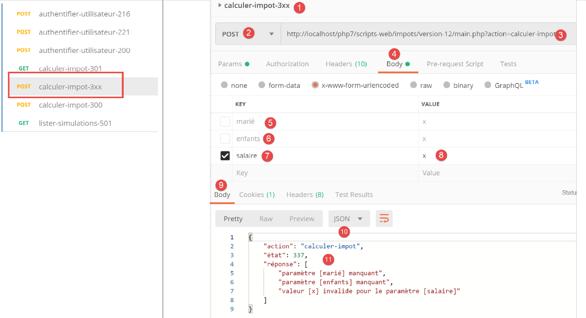
Sopra,
- in [5-8], viene inviato solo il parametro [salaire], che inoltre è non valido;
- in [9-11], il risultato jSON dal server;
Ora effettuiamo un calcolo delle imposte con parametri validi:

Sopra:
- in [1118], una richiesta con parametri validi [6-8];
- in [12-14], la risposta jSON del server;
23.11.7. L'azione [lister-simulations]
L’azione [lister-simulations] viene elaborata dal controller secondario [ListerSimulationsController] come segue:
<?php
namespace Application;
// dipendenze Symfony
use \Symfony\Component\HttpFoundation\Response;
use \Symfony\Component\HttpFoundation\Request;
use \Symfony\Component\HttpFoundation\Session\Session;
class ListerSimulationsController {
// $config è la configurazione dell'applicazione
// elaborazione di una richiesta Request
// utilizza la sessione Session e può modificarla
// $infos sono informazioni aggiuntive specifiche per ciascun controller
// restituisce un array [$statusCode, $état, $content, $headers]
public function execute(
array $config,
Request $request,
Session $session,
array $infos = NULL): array {
// deve esserci un unico parametro GET
$method = strtolower($request->getMethod());
$erreur = $method !== "get" || $request->query->count() != 1;
if ($erreur) {
$état = 501;
$message = "GET requis, avec l'unique paramètre [action] dans l'URL";
// viene restituito un risultato con errore al controller principale
return [Response::HTTP_BAD_REQUEST, $état, ["réponse" => $message], []];
}
// si recupera l'elenco delle simulazioni nella sessione
if (!$session->has("simulations")) {
$simulations = [];
} else {
$simulations = $session->get("simulations");
}
// si restituisce un risultato con esito positivo al controller principale
$état = 500;
return [Response::HTTP_OK, $état, ["réponse" => $simulations], []];
}
}
Commenti
- richiesta [GET main.php?action=lister-simulations];
- righe 24-25: si verifica che sia presente una richiesta GET con un unico parametro;
- righe 26-31: se non è così, viene restituito un risultato con errore al controller principale;
- righe 33-37: si recupera l'elenco delle simulazioni dalla sessione, se presente (riga 36); in caso contrario, l'elenco è vuoto (riga 34);
- righe 39-40: si restituisce l'elenco delle simulazioni al controller principale;
23.11.8. Test [Postman]
Creeremo due test, uno con errore e uno riuscito.

Sopra:
- in [1-8], si effettua una richiesta [GET] con un parametro [param1] in eccesso nel URL [3, 7-8];
- per [9-12], la risposta jSON del server;
Ora inviamo una richiesta valida:

Sopra:
- in [1-5], una richiesta valida;
Il risultato della richiesta è il seguente:

- in [3-6], la risposta jSON del server. Prima di questo test, il test [Postman] [calculer-impot-300] era stato eseguito più volte per creare simulazioni nella sessione web del server;
23.11.9. L'azione [supprimer-simulation]
L’azione [supprimer-simulation] viene elaborata dal controller secondario [SupprimerSessionController] come segue:
<?php
namespace Application;
// dipendenze Symfony
use \Symfony\Component\HttpFoundation\Response;
use \Symfony\Component\HttpFoundation\Request;
use \Symfony\Component\HttpFoundation\Session\Session;
class SupprimerSimulationController {
/// $config è la configurazione dell'applicazione
// elaborazione di una richiesta Request
// utilizza la sessione Session e può modificarla
// $infos sono informazioni aggiuntive specifiche per ciascun controller
// restituisce un array [$statusCode, $état, $content, $headers]
public function execute(
array $config,
Request $request,
Session $session,
array $infos = NULL): array {
// devono essere presenti due parametri GET
$method = strtolower($request->getMethod());
$erreur = $method !== "get" || $request->query->count() != 2;
$état = 600;
if ($erreur) {
$état += 2;
$message = "GET requis, avec les paramètres [action, numéro]";
}
// il parametro [numéro] deve esistere
if (!$erreur) {
$état += 4;
$erreur = !$request->query->has("numéro");
if ($erreur) {
$message = "paramètre [numéro] manquant";
}
}
// il parametro [numéro] deve essere valido
if (!$erreur) {
$état += 8;
$numéro = $request->query->get("numéro");
$erreur = !preg_match("/^\d+$/", $numéro);
if ($erreur) {
$message = "paramètre [$numéro] invalide";
}
}
// il parametro [numéro] deve rientrare nell'intervallo [0,n-1]
// se n è il numero di simulazioni
if (!$erreur) {
$numéro = (int) $numéro;
$erreur = !$session->has("simulations");
if (!$erreur) {
$simulations = $session->get("simulations");
$erreur = $numéro < 0 || $numéro >= count($simulations);
}
if ($erreur) {
$état += 16;
$message = "la simulation n° [$numéro] n'existe pas";
}
}
// errore?
if ($erreur) {
// si restituisce il risultato al controller principale
return [Response::HTTP_BAD_REQUEST, $état, ["réponse" => $message], []];
}
// si elimina la simulazione $numéro
unset($simulations[$numéro]);
$simulations = array_values($simulations);
// si reinseriscono le simulazioni nella sessione
$session->set("simulations", $simulations);
// si restituisce l'elenco delle simulazioni al client
$état = 600;
return [Response::HTTP_OK, $état, ["réponse" => $simulations], []];
}
}
Commenti
- richiesta [GET main.php?action=supprimer-simulation&numéro=x];
- righe 24-30: si verifica la presenza di una richiesta GET con due parametri;
- righe 32-38: si verifica che il parametro [numéro] esista tra i parametri di URL;
- righe 40-47: si verifica che il valore del parametro [numéro] sia sintatticamente corretto;
- righe 50-61: si verifica che la simulazione n. [numéro] esista effettivamente. Si possono verificare due casi di errore:
- l'elenco delle simulazioni non è reperibile nella sessione (riga 52);
- il n. [numéro] della simulazione da eliminare non è presente nell’elenco delle simulazioni;
- righe 63-66: in caso di errore, viene restituito un risultato con errore al controllore principale;
- riga 68: la simulazione n. [numéro] viene eliminata;
- riga 69: l’operazione [unset] non modifica gli indici [0, n-1] dell’elenco. Per aggiornarli, si richiedono i valori della tabella [$simulations] per eliminare la simulazione mancante;
- riga 71: si reinserisce la nuova tabella delle simulazioni nella sessione;
- righe 73-74: si restituisce al controller principale il nuovo elenco delle simulazioni;
23.11.10. Test [Postman]
Eseguiremo dei test di errore e di successo:
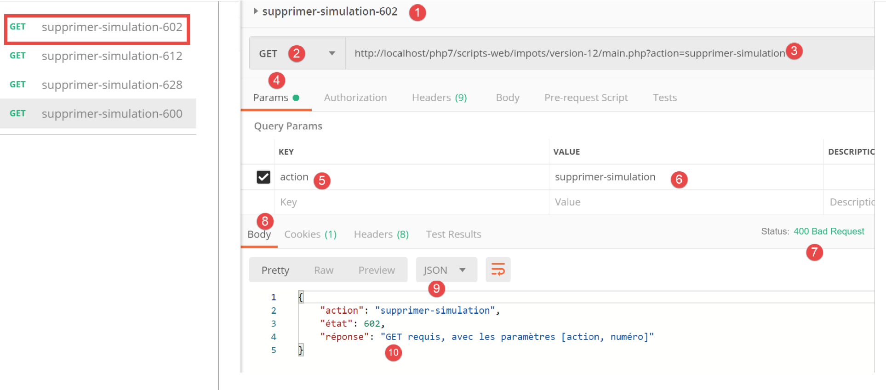
Sopra:
- in [1-6], una richiesta GET senza il parametro [numéro];
- in [7-10], la risposta jSON del server;
Ora una richiesta con un numero sintatticamente errato:

Sopra:
- in [1-5], una richiesta GET con un parametro [numéro] non valido [3, 5];
- in [6-9], la risposta jSON del server;
Ora una richiesta con un numero di simulazione inesistente:

Sopra:
- in [1-5], una richiesta con un numero di simulazione pari a 100 che non esiste nell'elenco delle simulazioni;
- in [6-9], la risposta jSON del server;
Ora elimineremo la simulazione n. 0 dall'elenco, ovvero la prima simulazione. Innanzitutto, richiediamo nuovamente questo elenco con la richiesta [lister-simulations-500]:

- In [1] ci sono attualmente 2 simulazioni;
Si elimina la prima simulazione (numero 0):

Sopra:
- in [1-5], si elimina la simulazione n. 0 [5];
- in [6-9], la risposta jSON del server. Si nota che la simulazione n. 0 è stata eliminata;
Ripetiamo questa operazione:

Sopra:
- in [1], non ci sono più simulazioni nella sessione web del server;
23.11.11. L’azione [fin-session]
L’azione [fin-session] viene elaborata dal controller secondario [FinSessionController] come segue:
<?php
namespace Application;
// dipendenze Symfony
use \Symfony\Component\HttpFoundation\Response;
use \Symfony\Component\HttpFoundation\Request;
use \Symfony\Component\HttpFoundation\Session\Session;
class FinSessionController implements InterfaceController {
// $config è la configurazione dell'applicazione
// elaborazione di una richiesta Request
// utilizza la sessione Session e può modificarla
// $infos sono informazioni aggiuntive specifiche per ciascun controller
// restituisce un array [$statusCode, $état, $content, $headers]
public function execute(
array $config,
Request $request,
Session $session,
array $infos = NULL): array {
// deve esserci un unico parametro GET
$method = strtolower($request->getMethod());
$erreur = $method !== "get" || $request->query->count() != 1;
// errore?
if ($erreur) {
$état = 401;
// risultato al controller principale
$message = "GET requis avec le seul paramètre [action] dans l'URL";
return [Response::HTTP_BAD_REQUEST, $état, ["réponse" => $message], []];
}
// si memorizza il tipo di sessione
$type = $session->get("type");
// si invalida la sessione corrente
$session->invalidate();
// si reinserisce il tipo nella nuova sessione
$session->set("type", $type);
// invio della risposta
$état = 400;
// risultato al controller principale
$content = ["réponse" => "session supprimée"];
return [Response::HTTP_OK, $état, $content, []];
}
}
Commenti
- richiesta [GET main.php?action=fin-session];
- righe 25-33: si verifica che l’azione sia una GET con l’unico parametro [fin-action];
- riga 38: si invalida la sessione corrente. Ciò cancella i dati in essa registrati e viene avviata una nuova sessione;
- riga 36: prima della fine della sessione, si memorizza il tipo [json, xml, html] della stessa;
- riga 40: il tipo della sessione precedente viene reinserito nella nuova sessione. Infine si riparte con una nuova sessione avente la chiave univoca [type];
- righe 44-45: si restituisce il risultato al controller principale;
23.11.12. Test [Postman]
Eseguiremo un test di errore e un test di successo:

Sopra:
- in [1-5], si richiede la chiusura della sessione [5] con un POST [2] al posto del GET previsto;
- in [6-9], la risposta jSON del server;
Ora un esempio di operazione riuscita. Osserviamo innanzitutto il cookie di sessione scambiato tra il client [Postman] e il server durante l’ultimo test effettuato:

Sopra:
- in [3], il cookie di sessione inviato dal client [Postman] al server;
Esaminiamo ora le intestazioni HTTP inviate dal server nella sua risposta:

Sopra:
- in [3-4], il cookie di sessione non è presente nella risposta del server. È normale. Il server lo invia solo una volta: all’inizio di una nuova sessione web;
Ora eseguiamo un'azione [fin-session] valida:

Sopra:
- in [1-3], un'azione [fin-session] valida;
- in [4-7], la risposta jSON del server;
Esaminiamo le intestazioni HTTP inviate nella risposta del server:

- in [3], il server invia l’intestazione [Set-Cookie], indicando così l’avvio di una nuova sessione web;
23.12. I tipi di risposta del server
23.12.1. Introduzione
Torniamo all'architettura generale dell'applicazione:

Presenteremo i possibili tipi di risposta [3a]. Questi sono raccolti nella cartella [Responses] del progetto:

Abbiamo già presentato la classe [JsonResponse] nel paragrafo dedicato ai link. Essa implementa l’interfaccia [InterfaceResponse] ed estende la classe [ParentResponse]. Lo stesso vale per le altre due classi [XmlResponse] e [HtmlResponse].
Ricordiamo la definizione dell’interfaccia [InterfaceResponse]:
<?php
namespace Application;
// dipendenze Symfony
use Symfony\Component\HttpFoundation\Request;
use Symfony\Component\HttpFoundation\Session\Session;
interface InterfaceResponse {
// Richiesta $request: richiesta in elaborazione
// Sessione $session: la sessione dell'applicazione web
// array $config: la configurazione dell'applicazione
// int statusCode: codice di stato della risposta HTTP
// array $content: la risposta del server
// array $headers: le intestazioni HTTP da aggiungere alla risposta
// Logger $logger: il logger per la scrittura dei log
public function send(
Request $request = NULL,
Session $session = NULL,
array $config,
int $statusCode,
array $content,
array $headers,
Logger $logger = NULL): void;
}
- righe 19-27: l’interfaccia [InterfaceResponse] dispone di un unico metodo, [send], per inviare la risposta al client;
- righe 11-17: il significato dei diversi parametri del metodo [send];
- righe 23-25: i parametri [$statusCode, $content, $headers] costituiscono la risposta standard dei controller secondari dell’applicazione. Tuttavia, la risposta potrebbe richiedere ulteriori informazioni. Pertanto, le vengono forniti i primi tre parametri (righe 20-22) che le consentono di accedere a tutte le informazioni relative alla richiesta, alla sessione e alla configurazione;
- riga 26: la risposta richiede il parametro [Logger] poiché registrerà la risposta inviata al cliente;
Ricordiamo ora il codice della classe [ParentResponse], classe padre dei tre tipi di risposta che raggruppa ciò che hanno in comune: l’invio effettivo di una risposta testuale al cliente:
<?php
namespace Application;
// dipendenze Symfony
use Symfony\Component\HttpFoundation\Response;
class ParentResponse {
// int $statusCode: il codice HTTP dello stato della risposta
// stringa $content: il corpo della risposta da inviare
// a seconda dei casi, si tratta di una stringa jSON, XML, HTML
// array $headers: le intestazioni HTTP da aggiungere alla risposta
public function sendResponse(
int $statusCode,
string $content,
array $headers): void {
// preparazione della risposta testuale del server
$response = new Response();
$response->setCharset("utf-8");
// codice di stato
$response->setStatusCode($statusCode);
// intestazioni
foreach ($headers as $text => $value) {
$response->headers->set($text, $value);
}
// invio della risposta
$response->setContent($content);
$response->send();
}
}
Commenti
- righe 10-13: il significato dei tre parametri del metodo [send];
- riga 17: si noti che il corpo della risposta è di tipo [string] e quindi pronto per essere inviato (riga 30);
- riga 22: la risposta conterrà caratteri UTF-8;
- riga 24: codice di stato HTTP della risposta;
- righe 26-28: aggiunta delle intestazioni HTTP fornite dal codice chiamante;
- righe 30-31: invio della risposta al cliente;
Ricordiamo infine il codice del controller principale che richiede l’invio della risposta al cliente:
// si aggiungono le chiavi [action, état] alla risposta del controller
$content = ["action" => $action, "état" => $état] + $content;
// si istanzia l'oggetto [Response] incaricato di inviare la risposta al client
$response = __NAMESPACE__ . $config["types"][$type]["response"];
(new $response())->send($request, $session, $config, $statusCode, $content, $headers, $logger);
// la risposta è stata inviata - si liberano le risorse
$logger->close();
exit;
- riga 4: si imposta il nome della classe [Response] da istanziare;
- riga 5: la si istanzia e si invia la risposta al client tramite il metodo [send($request, $session, $config, $statusCode, $content, $headers, $logger)]. Poiché implementano la stessa interfaccia [InterfaceResponse], i metodi [send] dei diversi tipi di risposta hanno tutti la stessa firma;
23.12.2. La classe [JsonResponse]
È già stata presentata nel paragrafo precedente. Riportiamo tuttavia il suo codice per sottolineare meglio l’omogeneità delle tre classi di risposta:
La classe [JsonResponse] implementa l’interfaccia [InterfaceResponse] nel modo seguente:
<?php
namespace Application;
// dipendenze Symfony
use Symfony\Component\Serializer\Encoder\JsonEncode;
use Symfony\Component\Serializer\Encoder\JsonEncoder;
use Symfony\Component\Serializer\Normalizer\ObjectNormalizer;
use Symfony\Component\Serializer\Serializer;
use \Symfony\Component\HttpFoundation\Request;
use \Symfony\Component\HttpFoundation\Session\Session;
class JsonResponse extends ParentResponse implements InterfaceResponse {
// Richiesta $request: richiesta in fase di elaborazione
// Sessione $session: la sessione dell'applicazione web
// array $config: la configurazione dell'applicazione
// int statusCode: codice di stato della risposta HTTP
// array $content: la risposta del server
// array $headers: le intestazioni HTTP da aggiungere alla risposta
// Logger $logger: il logger per la scrittura dei log
public function send(
Request $request = NULL,
Session $session = NULL,
array $config,
int $statusCode,
array $content,
array $headers,
Logger $logger = NULL): void {
// preparazione del serializzatore Symfony
$serializer = new Serializer(
[
// necessario per la serializzazione degli oggetti
new ObjectNormalizer()],
// codificatore jSON
// per le opzioni, inserire OU tra le diverse opzioni
[new JsonEncoder(new JsonEncode([JsonEncode::OPTIONS => JSON_UNESCAPED_UNICODE]))]
);
// serializzazione jSON
$json = $serializer->serialize($content, 'json');
// intestazioni
$headers = array_merge($headers, ["content-type" => "application/json"]);
// invio della risposta
parent::sendResponse($statusCode, $json, $headers);
// log
if ($logger !== NULL) {
$logger->write("réponse=$json\n");
}
}
}
Commenti
- riga 13: la classe implementa l’interfaccia [InterfaceResponse];
- riga 13: la classe estende la classe [ParentResponse]. Tutti i tipi di [Response] estendono questa classe. È questa classe padre che invia la risposta al client (riga 46). Poiché questo codice era comune a tutti i tipi di [Response], è stato fattorizzato in una classe padre;
- righe 33-40: istanziamento del serializzatore [Symfony] che tradurrà la risposta del server [$content] in una stringa jSON (riga 42);
- righe 34-36: il primo parametro del costruttore di [Serializer] è un array. In esso viene inserita un'istanza della classe [ObjectNormalizer] necessaria per la serializzazione degli oggetti. Questo caso si presenta in questa applicazione con un elenco di simulazioni in cui ogni simulazione è un'istanza della classe [Simulation];
- riga 39: anche il secondo parametro del costruttore di [Serializer] è un array: vi si inseriscono tutti gli encoder utilizzati in una serializzazione (XML, jSON, CSV…);
- riga 39: qui ci sarà un solo codificatore, di tipo [JsonEncoder]. Il costruttore senza parametri sarebbe stato sufficiente. In questo caso, abbiamo passato un parametro [JsonEncode] al costruttore, esclusivamente per specificare le opzioni di codifica jSON;
- riga 39: il parametro del costruttore [JsonEncode] è un array di opzioni. Qui si utilizza l’opzione [JSON_UNESCAPED_UNICODE] per richiedere che i caratteri UTF-8 della stringa jSON vengano rappresentati in modo nativo e non «escapati»;
- riga 42: il corpo della risposta HHTP viene serializzato in jSON grazie al serializzatore precedente;
- riga 44: si aggiunge l'intestazione HTTP che comunica al client che gli verrà inviato jSON;
- riga 46: si richiede alla classe padre di inviare la risposta al client;
- righe 48-50: si registra la risposta jSON;
23.12.3. La classe [XmlResponse]
La classe [XmlResponse] implementa l’interfaccia [InterfaceResponse] nel modo seguente:
<?php
namespace Application;
// dipendenze Symfony
use Symfony\Component\HttpFoundation\Request;
use Symfony\Component\HttpFoundation\Session\Session;
use Symfony\Component\Serializer\Encoder\JsonEncode;
use Symfony\Component\Serializer\Encoder\JsonEncoder;
use Symfony\Component\Serializer\Encoder\XmlEncoder;
use Symfony\Component\Serializer\Normalizer\ObjectNormalizer;
use Symfony\Component\Serializer\Serializer;
class XmlResponse extends ParentResponse implements InterfaceResponse {
// Richiesta $request: richiesta in elaborazione
// Sessione $session: la sessione dell'applicazione web
// array $config: la configurazione dell'applicazione
// int statusCode: codice di stato della risposta HTTP
// array $content: la risposta del server
// array $headers: le intestazioni HTTP da aggiungere alla risposta
// Logger $logger: il logger per la scrittura dei log
public function send(
Request $request = NULL,
Session $session = NULL,
array $config,
int $statusCode,
array $content,
array $headers,
Logger $logger = NULL): void {
// preparazione del serializzatore Symfony
$serializer = new Serializer(
// necessario per la serializzazione degli oggetti
[new ObjectNormalizer()],
[
// serializzazione XML
new XmlEncoder(
[
XmlEncoder::ROOT_NODE_NAME => 'root',
XmlEncoder::ENCODING => 'utf-8'
]
),
// serializzazione jSON
new JsonEncoder(new JsonEncode([JsonEncode::OPTIONS => JSON_UNESCAPED_UNICODE]))
]
);
// serializzazione XML
$xml = $serializer->serialize($content, 'xml');
// intestazioni
$headers = array_merge($headers, ["content-type" => "application/xml"]);
// invio della risposta
parent::sendResponse($statusCode, $xml, $headers);
// log
if ($logger !== NULL) {
// log in jSON
$log = $serializer->serialize($content, 'json');
$logger->write("réponse=$log\n");
}
}
}
Commenti
- righe 34-48: istanziamento di un serializzatore Symfony. Il costruttore accetta due parametri di tipo array;
- riga 36: il primo array contiene un'istanza di tipo [ObjectNormalizer] che interviene nella serializzazione degli oggetti;
- righe 37-47: il secondo array contiene gli encoder utilizzati per la serializzazione. È possibile prevedere diversi tipi di serializzazione con lo stesso serializzatore;
- righe 38-44: l’encoder XML;
- riga 41: si imposta la radice del codice XML generato. Questo avrà la forma <root>[autres balises XML]</root>;
- riga 42: la codifica utilizzerà i caratteri UTF-8;
- riga 46: l’encoder jSON. Questo verrà utilizzato per la registrazione della risposta nel file [logs.txt], che è in formato jSON;
- riga 50: il corpo della risposta inviata al client viene serializzato in XML;
- riga 52: alle intestazioni ricevute come parametro (riga 30) viene aggiunta l’intestazione HTTP, che indica al cliente che gli viene inviato un documento XML;
- riga 54: invio effettivo della risposta al cliente da parte della classe padre;
- righe 56-60: registrazione in jSON della risposta;
23.12.4. Test [Postman]
Abbiamo già effettuato tutti i possibili test di errore in jSON. Non c’è altro da fare in XML. Mostriamo due esempi di risposta XML:

Sopra:
- in [1-3], la richiesta di avvio della sessione XML;
- in [4-7], la risposta XML del server;
D'ora in poi, tutte le risposte del server saranno in formato XML. È possibile riutilizzare tutte le richieste già impiegate in [Postman] senza modificarle e per ciascuna di esse si otterrà una risposta XML. Effettuiamo, ad esempio, un'autenticazione riuscita:

Sopra:
- in [1-3], una richiesta di autenticazione valida;
- in [4-7], la risposta XML del server;
23.12.5. La risposta [HtmlResponse]
Quando il tipo di sessione è [html], viene istanziato un oggetto di tipo [HtmlResponse] per inviare la risposta al client. Quest’ultimo invierà al client un flusso HTML che dipende dal codice di stato restituito dal controller secondario che ha elaborato l’azione. Questa corrispondenza [état=>vue] è registrata nel file di configurazione [config.json] nel modo seguente:
"vues": {
"vue-authentification.php": [700, 221, 400],
"vue-calcul-impot.php": [200, 300, 341, 350, 800],
"vue-liste-simulations.php": [500, 600]
},
"vue-erreurs": "vue-erreurs.php"
Questa configurazione va interpretata come segue: [‘nom de la vue’ => ‘états associés à cette vue’]
- riga 2: se il controller secondario ha restituito uno stato della tabella [700, 221, 400], allora è necessario visualizzare la vista [vue-authentification.php];
- riga 3: se il controller secondario ha restituito uno stato della tabella [200, 300, 341, 350, 800], allora occorre visualizzare la vista [vue-calcul-impot.php];
- riga 4: se il controller secondario ha restituito uno stato della tabella [500, 600], allora occorre visualizzare la vista [vue-liste-simulations.php];
- riga 6: se il controller secondario ha restituito uno stato che non è presente in nessuna delle tabelle precedenti, allora occorre visualizzare la vista [vue-erreurs.php];
Le viste sono raccolte nella cartella [Views] del progetto:

Il codice della classe [HtmlResponse] è il seguente:
<?php
namespace Application;
// dipendenze Symfony
use Symfony\Component\HttpFoundation\Request;
use Symfony\Component\HttpFoundation\Session\Session;
use Symfony\Component\Serializer\Encoder\JsonEncode;
use Symfony\Component\Serializer\Encoder\JsonEncoder;
use Symfony\Component\Serializer\Normalizer\ObjectNormalizer;
use Symfony\Component\Serializer\Serializer;
class HtmlResponse extends ParentResponse implements InterfaceResponse {
// Richiesta $request: richiesta in elaborazione
// Sessione $session: la sessione dell'applicazione web
// array $config: la configurazione dell'applicazione
// int statusCode: codice di stato della risposta HTTP
// array $content: la risposta del server
// array $headers: le intestazioni HTTP da aggiungere alla risposta
// Logger $logger: il logger per la scrittura dei log
public function send(
Request $request = NULL,
Session $session = NULL,
array $config,
int $statusCode,
array $content,
array $headers,
Logger $logger = NULL): void {
// preparazione del serializzatore Symfony
$serializer = new Serializer(
[
// per la serializzazione degli oggetti
new ObjectNormalizer()],
[
// per la serializzazione jSON del log della risposta
new JsonEncoder(new JsonEncode([JsonEncode::OPTIONS => JSON_UNESCAPED_UNICODE]))
]
);
// la risposta HTML dipende dal codice di stato restituito dal controller
$état = $content["état"];
// a ogni stato corrisponde una vista: questa viene ricercata nella configurazione dell’applicazione
// l'elenco delle viste
$vues = array_keys($config["vues"]);
$trouvé = false;
$i = 0;
// si scorre l'elenco delle viste
while (!$trouvé && $i < count($vues)) {
// stati associati alla vista n. i
$états = $config["vues"][$vues[$i]];
// il report cercato si trova tra i report associati alla vista n. I?
if (in_array($état, $états)) {
// la vista visualizzata sarà la vista n. i
$vueRéponse = $vues[$i];
$trouvé = true;
}
// vista successiva
$i++;
}
// Trovato?
if (!$trouvé) {
// se non esiste alcuna vista per lo stato attuale dell'applicazione
// viene visualizzata la vista degli errori
$vueRéponse = $config["vue-erreurs"];
}
// si recupera la vista HTML da visualizzare in una stringa di caratteri
ob_start();
require __DIR__ . "/../Views/$vueRéponse";
$html = ob_get_clean();
// si indica nelle intestazioni che verrà inviato HTML
$headers = array_merge($headers, ["content-type" => "text/html"]);
// la classe padre si occupa dell'invio effettivo della risposta
parent::sendResponse($statusCode, $html, $headers);
// registrazione in formato jSON della risposta senza il HTML
if ($logger !== NULL) {
// registrazione in formato jSON della risposta del controller secondario che ha elaborato l'azione
$log = $serializer->serialize($content, 'json');
$logger->write("réponse=$log\n");
}
}
}
Commenti
- righe 32-41: si istanzia un serializzatore Symfony. Questo è necessario per il log jSON della risposta del controller che ha elaborato l’azione (righe 72-82);
- righe 42-57: si cerca nella configurazione dell’applicazione la vista da visualizzare. Questa dipende dal codice di stato restituito dal controller che ha elaborato l’azione. Tale codice si trova in [$content[‘état’]] (riga 43);
- righe 42-61: si cerca la vista corrispondente a tale stato;
- righe 62-67: se non è stata trovata alcuna vista, ci si trova in una situazione di codice di stato anomalo per l’applicazione HTML. Questo concetto di stati anomali verrà spiegato più avanti. In questo caso, viene visualizzata una vista di errore;
- righe 68-70: si interpreta il codice PHP della vista selezionata e si assegna il risultato alla variabile [$html] (riga 71);
- questo codice merita alcune spiegazioni. Immaginiamo che la vista selezionata sia [vue-authentification.php], che presenta un modulo web di autenticazione:
- riga 69: la funzione [ob_start] avvia ciò che la documentazione definisce un «ritardo di output». Tutto ciò che viene scritto tramite operazioni print, require… e che normalmente viene immediatamente inviato al client, viene inserito in un buffer di output (ob=output buffer) senza essere inviato al client;
- riga 70: viene caricata la vista [vue-authentification.php], che è una vista dinamica HTML contenente codice PHP. A questo punto avvengono due cose:
- il codice PHP della vista [vue-authentification.php] viene caricato e interpretato. Il risultato è una vista che chiameremo [vue-authentification.html], che contiene solo codice HTML, o addirittura CSS e JavaScript, ma non più PHP;
- questo codice HTML viene normalmente inviato al client. Questo vale, infatti, per qualsiasi testo incontrato dall’interprete PHP che non sia codice PHP. A causa del ritardo di uscita, questo codice HTML viene inserito nel buffer di uscita senza essere inviato al cliente;
- riga 71: la funzione [ob_get_clean] esegue due operazioni:
- inserisce nella variabile [$html] il contenuto del buffer di uscita, ovvero la pagina [vue-authentification.html] che vi è stata inserita;
- svuota il buffer di uscita. Per quest’ultimo, è come se non fosse successo nulla. Inoltre, il cliente non ha ancora ricevuto nulla;
- riga 70: qui si sta eseguendo la classe [HtmlResponse] che si trova nella cartella [Responses]. Per individuare la vista, occorre quindi risalire di un livello a [..] e poi passare alla cartella [Views]. [__DIR__] è il nome assoluto della cartella in cui si trova lo script in esecuzione; nel nostro esempio, la cartella [C:/myprograms/laragon-lite/www/php7/scripts-web/impots/13/Responses];
- riga 73: si aggiunge alle intestazioni HTTP ricevute come parametro (riga 29) l’intestazione che comunica al client che gli verrà inviato HTML;
- riga 75: si richiede alla classe padre di procedere all'invio effettivo della risposta al client;
- righe 77-81: si registra in jSON la risposta [$content] fornita dal controller secondario che ha elaborato l'azione in corso;
23.12.6. Test [Postman]
Per testare effettivamente la modalità HTML della sessione, dovremmo esaminare tutte le viste. Lo faremo in un secondo momento. Eseguiremo il seguente test:
Diamo un’occhiata all’elenco delle viste nel file di configurazione:
"vues": {
"vue-authentification.php": [700, 221, 400],
"vue-calcul-impot.php": [200, 300, 341, 350, 800],
"vue-liste-simulations.php": [500, 600]
},
"vue-erreurs": "vue-erreurs.php"
È possibile individuare il contesto che genera alcuni dei codici di stato sopra riportati esaminando i test [Postman] effettuati:

Si nota che il codice di stato [700] corrisponde a un’azione [init-session] riuscita [2]. Sopra abbiamo una risposta jSON, ma potrebbe essere di tipo XML o HTML. È proprio quest’ultimo caso che verrà testato. In base al file di configurazione, è la vista [vue-authentification.php] a costituire la risposta HTML. Verifichiamo.

Sopra:
- in [1-3], si inizializza una sessione HTML. Ci si aspetta quindi una risposta HTML;
- in [4-8], la risposta HTML del server;
- la scheda [8] consente di visualizzare un'anteprima del codice HTML ricevuto;

- in [8-9], un'anteprima della vista HTML;
23.13. L'applicazione web HTML
23.13.1. Presentazione delle viste
L'applicazione web HTML utilizzerà quattro viste:
La vista di autenticazione:

La vista di calcolo dell’imposta:

La vista dell’elenco delle simulazioni:

La schermata degli errori imprevisti:

Descriveremo queste schermate una dopo l’altra.
23.13.2. La vista di autenticazione
23.13.2.1. Presentazione della schermata
La vista di autenticazione è la seguente:

La vista è composta da due elementi che chiameremo frammenti:
- il frammento [1] è generato da uno script [v-bandeau.php];
- il frammento [2] è generato dallo script [v-authentification.php];
La vista di autenticazione è generata dalla seguente pagina [vue-authentification.php]:
<?php
// dati di test della pagina
// si incapsulano i dati della pagina in $page
…
?>
<!doctype html>
<html lang="fr">
<head>
<!-- Meta tag obbligatori -->
<meta charset="utf-8">
<meta name="viewport" content="width=device-width, initial-scale=1, shrink-to-fit=no">
<!-- Bootstrap CSS -->
<link rel="stylesheet" href="https://stackpath.bootstrapcdn.com/bootstrap/4.1.3/css/bootstrap.min.css" integrity="sha384-MCw98/SFnGE8fJT3GXwEOngsV7Zt27NXFoaoApmYm81iuXoPkFOJwJ8ERdknLPMO" crossorigin="anonymous">
<title>Application impots</title>
</head>
<body>
<div class="container">
<!-- banner su 1 riga e 12 colonne -->
<?php require "v-bandeau.php"; ?>
<!-- Modulo di autenticazione su 9 colonne -->
<div class="row">
<div class="col-md-9">
<?php require "v-authentification.php" ?>
</div>
</div>
<?php
// in caso di errore, viene visualizzato un messaggio di errore
if ($modèle->error) {
print <<<EOT
<div class="row">
<div class="col-md-9">
<div class="alert alert-danger" role="alert">
Les erreurs suivantes se sont produites :
<ul>$modèle->erreurs</ul>
</div>
</div>
</div>
EOT;
}
?>
</div>
</body>
</html>
Commenti
- riga 7: un documento HTML inizia con questa riga;
- righe 8-44: la pagina HTML è racchiusa tra i tag <html> </html>;
- righe 9-16: intestazione (head) del documento HTML;
- riga 11: il tag <meta charset> indica che il documento è codificato in UTF-8;
- riga 12: il tag <meta name='viewport'> imposta la visualizzazione iniziale della vista: su tutta la larghezza dello schermo che la visualizza (width) alla sua dimensione iniziale (initial-scale) senza ridimensionamento per adattarsi a uno schermo di dimensioni inferiori (shrink-to-fit);
- riga 14: il tag <link rel=’stylesheet’> specifica il file CSS che definisce l’aspetto della vista. Qui utilizziamo il framework CSS Bootstrap 4.1.3 [https://getbootstrap.com/docs/4.0/getting-started/introduction/] ;
- riga 15: il tag <title> definisce il titolo della pagina:

- righe 17-43: il corpo della pagina web è racchiuso tra i tag <body></body>;
- righe 18-42: il tag <div> delimita una sezione della pagina visualizzata. Gli attributi [class] utilizzati nella vista fanno tutti riferimento al framework CSS Bootstrap. Il tag <div class=’container’> delimita un contenitore Bootstrap;
- riga 20: si include lo script [v-bandeau.php]. Questo script genera il banner [1] della pagina. Lo descriveremo tra poco;
- righe 22-26: il tag <div class=’row’> delimita una riga Bootstrap. Queste righe sono costituite da 12 colonne;
- riga 23: il tag <div class=’col-md-9’> delimita una sezione di 9 colonne;
- riga 24: si include lo script [v-authentification.php] che visualizza il modulo di autenticazione [2] della pagina. Ne parleremo presto;
- riga 27: il tag <?php inserisce il codice PHP all’interno della pagina HTML. Questo codice viene eseguito prima della visualizzazione della pagina HTML e può modificarla;
- riga 29: tutti i dati dinamici della vista visualizzata saranno incapsulati in un oggetto [$modèle] di tipo [stdClass]. Si tratta di una scelta arbitraria. Si sarebbe potuto scegliere invece un array associativo per ottenere lo stesso risultato;
- riga 29: l’autenticazione fallisce se l’utente inserisce credenziali errate. In questo caso, la vista di autenticazione viene visualizzata nuovamente con un messaggio di errore. L’attributo [$modèle→error] indica se visualizzare tale messaggio di errore;
- righe 30-39: questa sintassi scrive tutto il testo compreso tra i simboli PHP <<<EOT (riga 30 – al posto di EOT=End Of Text si può inserire ciò che si desidera) e il simbolo EOT della riga 39 (deve essere identico al simbolo utilizzato nella riga 30). Il simbolo deve essere scritto nella prima colonna della riga 39. Le variabili PHP presenti nel testo tra i due simboli EOT vengono interpretate;
- righe 33-36: delimitano un'area con sfondo rosa (class="alert alert-danger") (riga 33);

- riga 34: un testo;
- riga 35: il tag HTML <ul> (elenco non ordinato) visualizza un elenco puntato. Ogni elemento dell'elenco deve avere la sintassi <li>elemento</li>;
Da questo codice, ricordiamo gli elementi dinamici da definire:
- [$modèle→error]: per visualizzare un messaggio di errore;
- [$modèle→erreurs]: un elenco (nel senso HTML del termine) di messaggi di errore;
23.13.2.2. Il frammento [v-bandeau.php]
Il frammento [v-bandeau.php] visualizza la barra superiore di tutte le viste dell’applicazione web:
Il codice del frammento [v-bandeau.php] è il seguente:
<!-- Jumbotron Bootstrap -->
<div class="jumbotron">
<div class="row">
<div class="col-md-4">
<img src="<?= $logo ?>" alt="Cerisier en fleurs" />
</div>
<div class="col-md-8">
<h1>
Calculez votre impôt
</h1>
</div>
</div>
</div>
Commenti
- righe 2-13: la barra superiore è racchiusa in una sezione Bootstrap di tipo Jumbotron [<div class="jumbotron">]. Questa classe Bootstrap applica uno stile particolare al contenuto visualizzato per farlo risaltare;
- righe 3-12: una riga Bootstrap;
- righe 4-6: un'immagine [img] è posizionata nelle prime quattro colonne della riga;
- riga 5: la sintassi [<?= $logo ?>] è equivalente alla sintassi [<?php print $logo ?>]. In altre parole, il valore dell’attributo [src] sarà il valore della variabile PHP [$logo];
- righe 7-11: le altre 8 colonne della riga (ricordiamo che ce ne sono 12 in totale) serviranno a inserire un testo (riga 9) in caratteri grandi (<h1>, righe 8-10);
Elementi dinamici:
- [$logo]: URL dell’immagine visualizzata nel banner;
23.13.2.3. Il frammento [v-authentification.php]
Il frammento [v-authentification .php] visualizza il modulo di autenticazione dell’applicazione web:

Il codice del frammento [v-authentification.php] è il seguente:
<!-- modulo HTML - i valori vengono inviati tramite l'azione [authentifier-utilisateur] -->
<form method="post" action="main.php?action=authentifier-utilisateur">
<!-- titolo -->
<div class="alert alert-primary" role="alert">
<h4>Veuillez vous authentifier</h4>
</div>
<!-- modulo Bootstrap -->
<fieldset class="form-group">
<!-- prima riga -->
<div class="form-group row">
<!-- etichetta -->
<label for="user" class="col-md-3 col-form-label">Nom d'utilisateur</label>
<div class="col-md-4">
<!-- campo di immissione testo -->
<input type="text" class="form-control" id="user" name="user"
placeholder="Nom d'utilisateur" value="<?= $modèle->login ?>">
</div>
</div>
<!-- seconda riga -->
<div class="form-group row">
<!-- etichetta -->
<label for="password" class="col-md-3 col-form-label">Mot de passe</label>
<!-- campo di immissione testo -->
<div class="col-md-4">
<input type="password" class="form-control" id="password" name="password"
placeholder="Mot de passe">
</div>
</div>
<!-- pulsante di tipo [submit] su una terza riga-->
<div class="form-group row">
<div class="col-md-2">
<button type="submit" class="btn btn-primary">Valider</button>
</div>
</div>
</fieldset>
</form>
Commenti
- righe 2-39: il tag <form> delimita un modulo HTML. Questo presenta in genere le seguenti caratteristiche:
- definisce dei campi di immissione (tag <input> alle righe 17 e 27);
- presenta un pulsante di tipo [submit] (riga 34) che invia i valori inseriti al URL indicato nell’attributo [action] del tag [form] (riga 2). Il metodo HTTP utilizzato per interrogare questo URL è specificato nell’attributo [method] del tag [form] (riga 2);
- in questo caso, quando l’utente cliccherà sul pulsante [Valider] (riga 34), il browser invierà (riga 2) i valori inseriti nel modulo a URL [main.php?action=authentifier-utilisateur] (riga 2);
- i valori inviati sono quelli inseriti dall’utente nei campi di immissione delle righe 17 e 27. Verranno inviati nel formato [user=xx&password=yy]. I nomi dei parametri [user, password] corrispondono agli attributi [name] dei campi di immissione delle righe 17 e 27;
- riga 5-7: una sezione Bootstrap per visualizzare un titolo su sfondo blu:

- righe 10-37: un modulo Bootstrap. Tutti gli elementi del modulo verranno quindi stilizzati in un certo modo;
- righe 12-20: definiscono la prima riga del modulo:

- la riga 14 definisce l’etichetta [1] su tre colonne. L’attributo [for] del tag [label] collega l’etichetta all’attributo [id] del campo di immissione della riga 17;
- righe 15-19: inserisce il campo di immissione in un gruppo di quattro colonne;
- riga 17: il tag HTML [input] descrive un campo di immissione. Presenta diversi parametri:
- [type=’text’]: è un campo di immissione testo. È possibile digitare qualsiasi cosa;
- [class=’form-control’]: stile Bootstrap per il campo di immissione;
- [id=’user’]: identificativo del campo di immissione. Questo identificativo viene generalmente utilizzato da CSS e dal codice JavaScript;
- [name=’user’]: nome del campo di immissione. È con questo nome che il valore inserito dall’utente verrà inviato dal browser [user=xx];
- [placeholder=’invite’]: il testo visualizzato nel campo di immissione quando l’utente non ha ancora digitato nulla;

- [value=’valeur’]: il testo «valore» verrà visualizzato nel campo di immissione non appena questo verrà visualizzato, quindi prima che l’utente inserisca altro. Questo meccanismo viene utilizzato in caso di errore per visualizzare l’immissione che ha causato l’errore. In questo caso, tale valore sarà il valore della variabile PHP [$modèle→login];
- righe 21-30: un codice analogo per l’inserimento della password;
- riga 27: [type=’password’] fa sì che si abbia un campo di immissione testo (è possibile digitare qualsiasi cosa) ma i caratteri digitati rimangono nascosti:

- righe 32-36: una terza riga per il pulsante [Valider];
- riga 34: poiché presenta l'attributo [type=submit], cliccando su questo pulsante il browser invia al server i valori inseriti, come spiegato in precedenza. L’attributo CSS [class="btn btn-primary"] visualizza un pulsante blu:

Resta da spiegare un’ultima cosa. Alla riga 2, l’attributo [action="main.php?action=authentifier-utilisateur"] definisce un URL incompleto (non inizia con http://machine:port/chemin). Nel nostro esempio, tutti i URL dell’applicazione hanno la forma [http://localhost/php7/scripts-web/impots/version-12/main.php?action=xx]. La vista dell’autenticazione verrà ottenuta con vari URL:
- [http://localhost/php7/scripts-web/impots/version-12/main.php?action=init-session&type=html];
- [http://localhost/php7/scripts-web/impots/version-12/main.php?action=authentifier-utilisateur]
Questi URL indicano un documento [main.php] nel percorso [http://localhost/php7/scripts-web/impots/version-12]. Questo vale per tutti i URL di questa applicazione. Al parametro [action="main.php?action=authentifier-utilisateur"] verrà anteposto questo percorso al momento dell’invio dei valori inseriti. Questi saranno quindi inviati a URL [http://localhost/php7/scripts-web/impots/version-12/main.php?action=authentifier-utilisateur].
23.13.2.4. Test visivi
È possibile eseguire i test delle viste ben prima della loro integrazione nell’applicazione. Si tratta in questo caso di testarne l’aspetto visivo. Raccoglieremo tutte le viste di test nella cartella [Tests] del progetto:

Per testare la vista [vue-authentification.php], dobbiamo creare il modello di dati che verrà visualizzato:
<?php
// dati di prova della pagina
//
// si calcola il modello della vista
$modèle = getModelForThisView();
function getModelForThisView(): object {
// si incapsulano i dati della pagina in $modèle
$modèle = new \stdClass();
// ID utente
$modèle->login = "albert";
// elenco degli errori
$modèle->error = TRUE;
$erreurs = ["erreur1", "erreur2"];
// si crea un elenco HTML degli errori
$content = "";
foreach ($erreurs as $erreur) {
$content .= "<li>$erreur</li>";
}
$modèle->erreurs = $content;
// immagine del banner
$modèle->logo = "http://localhost/php7/scripts-web/impots/version-12/Tests/logo.jpg";
// si genera il modello
return $modèle;
}
?>
<!-- documento HTML -->
<!doctype html>
<html lang="fr">
<head>
<!-- Meta tag obbligatori -->
…
</head>
<body>
….
</body>
</html>
Commenti
- righe 1-5: la vista di autenticazione presenta parti dinamiche controllate dall’oggetto [$modèle]. Questo oggetto viene chiamato modello della vista. Secondo una delle due definizioni fornite per l’acronimo MVC, si tratta della M di MVC;
- riga 5: il modello della vista viene calcolato dalla funzione [getModelForThisView];
- riga 9: il modello della vista sarà incapsulato in un tipo [stdClass];
- righe 10-22: si definiscono i valori di test per gli elementi dinamici della vista di autenticazione;
Il test visivo può essere eseguito da NetBeans:

Si proseguono questi test visivi fino a quando non si è soddisfatti del risultato.
23.13.2.5. Calcolo del modello della vista
Una volta determinato l’aspetto visivo della vista, è possibile procedere al calcolo del modello della vista in condizioni reali. Ricordiamo i codici di stato che conducono a questa vista. Si trovano nel file di configurazione:
"vues": {
"vue-authentification.php": [700, 221, 400],
"vue-calcul-impot.php": [200, 300, 341, 350, 800],
"vue-liste-simulations.php": [500, 600]
},
"vue-erreurs": "vue-erreurs.php"
Sono quindi i codici di stato [700, 221, 400] che fanno visualizzare la vista di autenticazione. Per comprendere il significato di questi codici, ci si può avvalere dei test [Postman] effettuati sull’applicazione jSON:
- [init-session-json-700]: 700 è il codice di stato al termine di un’azione [init-session] riuscita: viene quindi visualizzato il modulo di autenticazione vuoto;
- [authentifier-utilisateur-221]: 221 è il codice di stato al termine di un'azione [authentifier-utilisateur] non riuscita (credenziali non riconosciute): viene quindi visualizzato il modulo di autenticazione affinché venga corretto;
- [fin-session-400]: 400 è il codice di stato al termine di un'azione [fin-session] riuscita: in questo caso viene visualizzato il modulo di autenticazione vuoto;
Ora che sappiamo in quali casi deve essere visualizzato il modulo di autenticazione, possiamo calcolarne il modello in [vue-authentification.php]:

Il codice per il calcolo del modello della vista [vue-authentification.php] è il seguente:
<?php
// si ereditano le seguenti variabili
// Richiesta $request: la richiesta in corso
// Sessione $session: la sessione dell'applicazione
// array $config: la configurazione dell'applicazione
// array $content: la risposta del controller
//
// dipendenze Symfony
use Symfony\Component\HttpFoundation\Request;
use Symfony\Component\HttpFoundation\Session\Session;
// si calcola il modello della vista
$modèle = getModelForThisView($request, $session, $config, $content);
function getModelForThisView(Request $request, Session $session, array $config, array $content): object {
// si incapsulano i dati della pagina in $modèle
$modèle = new stdClass();
// stato dell'applicazione
$état = $content["état"];
// il modello dipende dallo stato
switch ($état) {
case 700:
case 400:
// Caso in cui il modulo viene visualizzato vuoto
$modèle->login = "";
// non ci sono errori da visualizzare
$modèle->error = FALSE;
break;
case 221:
// autenticazione errata
// viene visualizzato nuovamente l'utente inserito inizialmente
$modèle->login = $request->request->get("user");
// c'è un errore da visualizzare
$modèle->error = TRUE;
// elenco HTML dei messaggi di errore - qui ce n'è solo uno
$modèle->erreurs = "<li>Echec de l'authentification</li>";
}
// risultato
return $modèle;
}
?>
<!-- documento HTML -->
<!doctype html>
<html lang="fr">
<head>
…
</head>
<body>
…
</body>
</html>
Commenti
- righe 3-6: vengono richiamate le variabili ereditate dalla classe [HtmlResponse], che fa visualizzare la vista [vue-authentification.php] tramite un [require];
- righe 9-10: le classi Symfony utilizzate nel codice della vista;
- righe 15-40: la funzione [getModelForThisView] è incaricata di calcolare il modello della vista;
- riga 19: si recupera il codice di stato restituito dal controller che ha elaborato l’azione in corso;
- righe 21-37: il modello dipende da questo codice di stato;
- righe 22-28: caso in cui si debba visualizzare un modulo di autenticazione vuoto;
- righe 29-37: caso di autenticazione errata: viene visualizzato l'identificativo inserito dall'utente e viene visualizzato un messaggio di errore. L'utente può quindi riprovare a effettuare l'autenticazione;
È stato scritto un modello specifico per il banner [v-bandeau.php]:
<?php
// logo
$scheme = $request->server->get('REQUEST_SCHEME'); // http
$host = $request->server->get('SERVER_NAME'); // localhost
$port = $request->server->get('SERVER_PORT'); // 80
$uri = $request->server->get('REQUEST_URI'); // /php7/scripts-web/impots/version-12/main.php?action=xxx
$champs = [];
preg_match("/(.+)\/.+?$/", $uri, $champs);
$root = $champs[1]; // /php7/scripts-web/impots/version-12
$modèle->logo = "$scheme://$host:$port$root/Views/logo.jpg"; // http://localhost:80/php7/scripts-web/impots/version-12/Views/logo.jpg
?>
<!-- Bootstrap Jumbotron -->
<div class="jumbotron">
<div class="row">
<div class="col-md-4">
<img src="<?= $modèle->logo ?>" alt="Cerisier en fleurs" />
</div>
<div class="col-md-8">
<h1>
Calculez votre impôt
</h1>
</div>
</div>
</div>
Commenti
- la riga 16 utilizza la variabile [$modèle→logo], che corrisponde al valore URL del logo del banner. Anziché calcolare questa variabile quattro volte per le quattro viste dell’applicazione, tale calcolo è fattorizzato nel frammento [v-bandeau.php];
- le righe da 1 a 11 mostrano come costruire URL e [http://localhost:80/php7/scripts-web/impots/version-12/Views/logo.jpg] a partire dalle informazioni presenti nell’ambiente del server [$request→server];
23.13.2.6. Test [Postman]
Abbiamo già creato delle richieste che generano i codici [700, 221, 400] che visualizzano la pagina di autenticazione. Ricordiamole:
- [init-session-html-700]: 700 è il codice di stato al termine di un’azione [init-session] riuscita: viene quindi visualizzato il modulo di autenticazione vuoto;
- [authentifier-utilisateur-221]: 221 è il codice di stato al termine di un'azione [authentifier-utilisateur] non riuscita (credenziali non riconosciute): viene quindi visualizzato il modulo di autenticazione affinché venga corretto;
- [fin-session-400]: 400 è il codice di stato al termine di un'azione [fin-session] riuscita: viene quindi visualizzato il modulo di autenticazione vuoto;
È sufficiente riutilizzarli e verificare se visualizzano correttamente la pagina di autenticazione. Qui mostreremo solo due test:
- [init-session-html-700]: avvio di una sessione HTML;

- [authentifier-utilisateur-221]: autenticazione dell’utente [x, x];

Sopra:
- la richiesta aveva inviato la stringa [user=x&password=x];
- in [4], viene visualizzato un messaggio di errore;
- in [3], è stato visualizzato nuovamente l'utente errato;
23.13.2.7. Conclusione
Siamo riusciti a testare la vista [vue-authentification.php] senza aver scritto le altre viste. Ciò è stato possibile perché:
- tutti i controller sono stati scritti;
- [Postman] ci permette di inviare richieste al server senza bisogno delle viste. Quando si scrivono i controller, bisogna essere consapevoli che chiunque può farlo. Bisogna quindi essere pronti a gestire richieste che nessuna vista consentirebbe. Queste vengono create manualmente in [Postman]. Non bisogna mai pensare a priori che «questa richiesta sia impossibile». È necessario verificare;
23.13.3. La vista per il calcolo dell’imposta
23.13.3.1. Presentazione della vista
La vista di calcolo dell’imposta è la seguente:

La vista è composta da tre parti:
- 1: la barra superiore è generata dal frammento [v-bandeau.php] già presentato;
- 2: il modulo di calcolo dell’imposta generato dal frammento [v-calcul-impot.php];
- 3: un menu con due link, generato dal frammento [v-menu.php];
La pagina di calcolo dell’imposta è generata dal seguente script [vue-calcul-impot.php]:

<?php
// si ereditano le seguenti variabili
// Richiesta $request: la richiesta in corso
// Sessione $session: la sessione dell'applicazione
// array $config: la configurazione dell'applicazione
// array $content: la risposta del controller che ha elaborato l'azione
//
// dipendenze Symfony
use Symfony\Component\HttpFoundation\Request;
use Symfony\Component\HttpFoundation\Session\Session;
// si calcola il modello della vista
$modèle = getModelForThisView($request, $session, $config, $content);
function getModelForThisView(Request $request, Session $session, array $config, array $content): object {
// si incapsulano i dati della pagina in $modèle
$modèle = new \stdClass();
…
// si restituisce il modello
return $modèle;
}
?>
<!-- documento HTML -->
<!doctype html>
<html lang="fr">
<head>
<!-- Meta tag obbligatori -->
<meta charset="utf-8">
<meta name="viewport" content="width=device-width, initial-scale=1, shrink-to-fit=no">
<!-- Bootstrap CSS -->
<link rel="stylesheet" href="https://stackpath.bootstrapcdn.com/bootstrap/4.1.3/css/bootstrap.min.css" integrity="sha384-MCw98/SFnGE8fJT3GXwEOngsV7Zt27NXFoaoApmYm81iuXoPkFOJwJ8ERdknLPMO" crossorigin="anonymous">
<title>Application impots</title>
</head>
<body>
<div class="container">
<!-- banner -->
<?php require "v-bandeau.php"; ?>
<!-- layout a due colonne -->
<div class="row">
<!-- il menu -->
<div class="col-md-3">
<?php require "v-menu.php" ?>
</div>
<!-- il modulo di calcolo -->
<div class="col-md-9">
<?php require "v-calcul-impot.php" ?>
</div>
</div>
<!-- caso di esito positivo -->
<?php
if ($modèle->success) {
// viene visualizzato un avviso di esito positivo
print <<<EOT1
<div class="row">
<div class="col-md-3">
</div>
<div class="col-md-9">
<div class="alert alert-success" role="alert">
$modèle->impôt</br>
$modèle->décôte</br>\n
$modèle->réduction</br>\n
$modèle->surcôte</br>\n
$modèle->taux</br>\n
</div>
</div>
</div>
EOT1;
}
?>
<?php
if ($modèle->error) {
// elenco degli errori su 9 colonne
print <<<EOT2
<div class="row">
<div class="col-md-3">
</div>
<div class="col-md-9">
<div class="alert alert-danger" role="alert">
L'erreur suivante s'est produite :
<ul>$modèle->erreurs</ul>
</div>
</div>
</div>
EOT2;
}
?>
</div>
</body>
</html>
Commenti
- commentiamo solo le novità che non abbiamo ancora incontrato;
- riga 37: inclusione della barra superiore della vista nella prima riga Bootstrap della vista;
- righe 41-43: inserimento del menu che occuperà tre colonne della seconda riga Bootstrap della vista;
- righe 45-47: inserimento del modulo di calcolo delle imposte che occuperà nove colonne della seconda riga Bootstrap della vista;
- righe 51-69: se il calcolo dell’imposta ha esito positivo [$modèle→success=TRUE], il risultato del calcolo viene visualizzato in un riquadro verde (righe 59-65). Questo riquadro si trova nella terza riga Bootstrap della vista (riga 54) e occupa nove colonne (riga 58) a destra di tre colonne vuote (righe 55-57). Il riquadro si troverà quindi immediatamente sotto il modulo di calcolo dell’imposta;
- righe 71-87: se il calcolo dell’imposta con codice [$modèle→error=TRUE] non va a buon fine, viene visualizzato un messaggio di errore in un riquadro rosa (righe 80-83). Questo riquadro si trova nella terza riga Bootstrap della vista (riga 75) e occupa nove colonne (riga 79) a destra di tre colonne vuote (righe 76-78). Questo riquadro si troverà quindi immediatamente sotto il modulo di calcolo dell’imposta;
23.13.3.2. Il frammento [v-calcul-impot.php]
Il frammento [v-calcul-impot.php] visualizza il modulo di autenticazione dell’applicazione web:

Il codice del frammento [v-calcul-impot.php] è il seguente:
<!-- modulo HTML inviato -->
<form method="post" action="main.php?action=calculer-impot">
<!-- messaggio su 12 colonne su sfondo blu -->
<div class="col-md-12">
<div class="alert alert-primary" role="alert">
<h4>Remplissez le formulaire ci-dessous puis validez-le</h4>
</div>
</div>
<!-- elementi del modulo -->
<fieldset class="form-group">
<!-- prima riga su 9 colonne -->
<div class="row">
<!-- testo su 4 colonne -->
<legend class="col-form-label col-md-4 pt-0">Etes-vous marié(e) ou pacsé(e)?</legend>
<!-- pulsanti di opzione su 5 colonne-->
<div class="col-md-5">
<div class="form-check">
<input class="form-check-input" type="radio" name="marié" id="gridRadios1" value="oui" <?= $modèle->checkedOui ?>>
<label class="form-check-label" for="gridRadios1">
Oui
</label>
</div>
<div class="form-check">
<input class="form-check-input" type="radio" name="marié" id="gridRadios2" value="non" <?= $modèle->checkedNon ?>>
<label class="form-check-label" for="gridRadios2">
Non
</label>
</div>
</div>
</div>
<!-- seconda riga su 9 colonne -->
<div class="form-group row">
<!-- etichetta su 4 colonne -->
<label for="enfants" class="col-md-4 col-form-label">Nombre d'enfants à charge</label>
<!-- campo di immissione numerica del numero di figli su 5 colonne -->
<div class="col-md-5">
<input type="number" min="0" step="1" class="form-control" id="enfants" name="enfants" placeholder="Nombre d'enfants à charge" value="<?= $modèle->enfants ?>">
</div>
</div>
<!-- terza riga su 9 colonne -->
<div class="form-group row">
<!-- didascalia su 4 colonne -->
<label for="salaire" class="col-md-4 col-form-label">Salaire annuel</label>
<!-- campo di immissione numerica per lo stipendio su 5 colonne -->
<div class="col-md-5">
<input type="number" min="0" step="1" class="form-control" id="salaire" name="salaire" placeholder="Salaire annuel" aria-describedby="salaireHelp" value="<?= $modèle->salaire ?>">
<small id="salaireHelp" class="form-text text-muted">Arrondissez à l'euro inférieur</small>
</div>
</div>
<!-- quarta riga, pulsante [submit] su 5 colonne -->
<div class="form-group row">
<div class="col-md-5">
<button type="submit" class="btn btn-primary">Valider</button>
</div>
</div>
</fieldset>
</form>
Commenti
- riga 2: il modulo HTML verrà inviato (attributo [method]) a URL [main.php?action=calculer-impot] (attributo [action]). I valori inviati saranno quelli dei campi di immissione:
- il valore del pulsante di opzione selezionato nella forma:
- [marié=oui] se è selezionato il pulsante di opzione [Oui] (righe 16-22). [marié] è il valore dell’attributo [name] della riga 18, [oui] è il valore dell’attributo [value] della riga 18;
- [marié=non] se il pulsante di opzione [Non] è selezionato (righe 23-28). [marié] è il valore dell’attributo [name] della riga 24, [non] è il valore dell’attributo [value] della riga 24;
- il valore del campo di immissione numerico della riga 37 nella forma [enfants=xx], dove [enfants] è il valore dell’attributo [name] della riga 37, e [xx] il valore inserito dall’utente tramite tastiera;
- il valore del campo di immissione numerico della riga 46 nella forma [salaire=xx], dove [salaire] è il valore dell’attributo [name] della riga 46, e [xx] il valore inserito dall’utente tramite tastiera;
- il valore del pulsante di opzione selezionato nella forma:
Infine, il valore inviato avrà la forma [marié=xx&enfants=yy&salaire=zz].
- i valori inseriti verranno inviati quando l’utente cliccherà sul pulsante di tipo [submit] della riga 53;
- righe 16-30: i due pulsanti di opzione:

I due pulsanti di opzione fanno parte dello stesso gruppo di pulsanti di opzione poiché hanno lo stesso attributo [name] (righe 18, 24). Il browser garantisce che, all’interno di un gruppo di pulsanti di opzione, ne sia selezionato uno solo alla volta. Pertanto, cliccando su uno di essi, si deseleziona quello che era selezionato in precedenza;
- si tratta di pulsanti di opzione in virtù dell’attributo [type="radio"] (righe 18, 24);
- alla visualizzazione del modulo (prima dell’inserimento dei dati), uno dei pulsanti radio dovrà essere selezionato: per farlo è sufficiente aggiungere l’attributo [checked=’checked’] al tag <input type="radio"> interessato. Ciò viene realizzato con variabili dinamiche:
- [<?= $modèle->checkedOui ?>] alla riga 18;
- [<?= $modèle->checkedNon ?>] alla riga 24;
Queste variabili faranno parte del modello della vista.
- riga 37: un campo di immissione numerica [type="number"] con un valore minimo pari a 0 [min="0"]. Nei browser recenti, ciò significa che l’utente potrà inserire solo un numero >=0. Su questi stessi browser recenti, l’inserimento può avvenire tramite un cursore su cui è possibile cliccare per aumentare o diminuire il valore. L’attributo [step="1"] della riga 37 indica che il cursore opererà con incrementi di 1 unità. Di conseguenza, il cursore accetterà solo valori interi compresi tra 0 e n con un passo di 1. Per l’immissione manuale, ciò significa che i numeri con la virgola non saranno accettati;

- riga 37: in alcune visualizzazioni, il campo di immissione relativo ai figli dovrà essere precompilato con l’ultimo valore inserito in quel campo. A tal fine si utilizza l’attributo [value], che imposta il valore da visualizzare nel campo di immissione. Questo valore sarà dinamico e generato dalla variabile [$modèle→enfants];
- riga 46: le spiegazioni relative all’inserimento dello stipendio sono le stesse di quelle relative ai figli;
- riga 53: il pulsante di tipo [submit] che attiva il POST dei valori inseriti nei campi URL e [main.php?action=calculer-impot];

23.13.3.3. Il frammento [v-menu.php]
Questo frammento visualizza un menu a sinistra del modulo di calcolo dell’imposta:

Il codice di questo frammento è il seguente:
<!-- menu Bootstrap -->
<nav class="nav flex-column">
<?php
// visualizzazione di un elenco di link HTML
foreach($modèle->optionsMenu as $texte=>$url){
print <<<EOT3
<a class="nav-link" href="$url">$texte</a>
EOT3;
}
?>
</nav>
Commenti
- righe 2-11: il tag HTML [nav] racchiude una porzione del documento HTML contenente collegamenti di navigazione verso altri documenti;
- riga 7: il tag HTML [a] introduce un collegamento di navigazione:
- [$url]: è l’URL verso cui si naviga quando si clicca sul collegamento [$texte]. Si tratta quindi di un’operazione [GET $url] eseguita dal browser. Se [$url] è un URL relativo, allora è preceduto dalla radice del URL attualmente visualizzato nell’indirizzo del browser. Pertanto, per ottenere il link [1], mentre l’attuale URL del browser è di tipo [http://chemin/main.php?paramètres], si creerà il link:
- riga 5: il modello [$modèle→optionsMenu] del frammento sarà una tabella della forma:
[‘ Liste des simulations’=>’main.php?action=liste-simulations’,
‘ Fin de session’=>’main.php?action=fin-session’]
- righe 2, 7: le classi CSS e [nav, flex-column, nav-link] sono classi Bootstrap che definiscono l'aspetto del menu;
23.13.3.4. Test visivo
Raggruppiamo questi diversi elementi nella cartella [Tests] e creiamo un modello di prova per la vista [vue-calcul-impot.php]:

Il modello di dati della vista [vue-calcul-impot] sarà il seguente:
<?php
// dati di prova della pagina
//
// si calcola il modello della vista
$modèle = getModelForThisView();
function getModelForThisView(): object {
// si incapsulano i dati della pagina in $modèle
$modèle = new \stdClass();
// modulo
$modèle->checkedOui = "";
$modèle->checkedNon = 'checked="checked"';
$modèle->enfants = 2;
$modèle->salaire = 300000;
// messaggio di esito positivo
$modèle->success = TRUE;
$modèle->impôt = "Montant de l'impôt : 1000 euros";
$modèle->décôte = "Décôte : 15 euros";
$modèle->réduction = "Réduction : 20 euros";
$modèle->surcôte = "Surcôte : 0 euros";
$modèle->taux = "Taux d'imposition : 14 %";
// messaggio di errore
$modèle->error = TRUE;
$erreurs = ["erreur1", "erreur2"];
// si crea un elenco HTML degli errori
$content = "";
foreach ($erreurs as $erreur) {
$content .= "<li>$erreur</li>";
}
$modèle->erreurs = $content;
// menu
$modèle->optionsMenu = [
'Elenco delle simulazioni' => 'main.php?action=elenco-simulazioni',
'Fine sessione' => 'main.php?action=fine-sessione'];
// immagine del banner
$modèle->logo = "http://localhost/php7/scripts-web/impots/version-12/Tests/logo.jpg";
// si genera il modello
return $modèle;
}
?>
<!-- documento HTML -->
<!doctype html>
<html lang="fr">
<head>
…
</head>
<body>
…
</body>
</html>
Commenti
- righe 7-39: si inizializzano tutte le parti dinamiche della vista [vue-calcul-impot.php] e dei frammenti [v-calcul-impot.php] e [v-menu.php];
Si esegue il test della vista [vue-calcul-impot.php]:

Si ottiene il seguente risultato:

Si lavora su questa vista fino a quando il risultato visivo ottenuto non è soddisfacente. È quindi possibile passare all’integrazione della vista nell’applicazione web in fase di sviluppo.
23.13.3.5. Calcolo del modello della vista

Una volta definito l’aspetto visivo della vista, si può procedere al calcolo del modello della vista in condizioni reali. Ricordiamo i codici di stato che conducono a questa vista. Si trovano nel file di configurazione:
"vues": {
"vue-authentification.php": [700, 221, 400],
"vue-calcul-impot.php": [200, 300, 341, 350, 800],
"vue-liste-simulations.php": [500, 600]
},
"vue-erreurs": "vue-erreurs.php"
Sono quindi i codici di stato [200, 300, 341, 350, 800] a far visualizzare la schermata di autenticazione. Per capire il significato di questi codici, è possibile fare riferimento ai test [Postman] effettuati sull’applicazione jSON:
- [authentifier-utilisateur-200]: 200 è il codice di stato al termine di un’azione [authentifier-itilisateur] riuscita: viene quindi visualizzato il modulo di calcolo delle imposte vuoto;
- [calculer-impot-300]: 300 è il codice di stato al termine di un'azione [calculer-impot] riuscita. Viene quindi visualizzato il modulo di calcolo con i dati inseriti e l'importo dell'imposta. L'utente può quindi eseguire un altro calcolo;
- [fin-session-400]: 400 è il codice di stato al termine di un’azione [fin-session] riuscita: viene quindi visualizzato il modulo di autenticazione vuoto;
- il codice di stato [341] è quello ottenuto per un calcolo dell’imposta valido, ma l’assenza di connessione a SGBD provoca un errore;
- il codice di stato [350] è quello ottenuto per un calcolo dell’imposta valido, ma la mancata connessione al server [Redis] provoca un errore;
- il codice di stato [800] verrà presentato in seguito. Non lo abbiamo ancora riscontrato;
- qui si è ipotizzato che l’utente utilizzi un browser recente. Pertanto, con il modulo in esame, non è possibile inserire numeri negativi, stringhe di caratteri non numerici o numeri con virgola nei campi di immissione [enfants, salaire]. Con browser più datati, ciò sarebbe possibile. Tratteremo questi errori come errori imprevisti e visualizzeremo quindi la vista [vue-erreurs];
Ora che sappiamo in quali casi deve essere visualizzato il modulo di calcolo dell’imposta, possiamo definirne il modello in [vue-calcul-impot.php]:
<?php
// si ereditano le seguenti variabili
// Richiesta $request: la richiesta in corso
// Sessione $session: la sessione dell'applicazione
// array $config: la configurazione dell'applicazione
// array $content: la risposta del controller che ha elaborato l'azione
//
// dipendenze Symfony
use Symfony\Component\HttpFoundation\Request;
use Symfony\Component\HttpFoundation\Session\Session;
// si calcola il modello della vista
$modèle = getModelForThisView($request, $session, $config, $content);
function getModelForThisView(Request $request, Session $session, array $config, array $content): object {
// si incapsulano i dati della pagina in $modèle
$modèle = new \stdClass();
// stato dell'applicazione
$état = $content["état"];
// il modello dipende dallo stato
switch ($état) {
case 200 :
case 800:
// visualizzazione iniziale di un modulo vuoto
$modèle->success = FALSE; $modèle->errror = FALSE;
$modèle->checkedNon = 'checked="checked"';
$modèle->checkedOui = "";
$modèle->enfants = "";
$modèle->salaire = "";
break;
case 300:
// calcolo riuscito - visualizzazione del risultato
$modèle->success = TRUE;
$modèle->error = FALSE;
$modèle->impôt = "Montant de l'impôt : {$content["réponse"]["impôt"]} euros";
$modèle->décôte = "Décôte : {$content["réponse"]["décôte"]} euros";
$modèle->réduction = "Réduction : {$content["réponse"]["réduction"]} euros";
$modèle->surcôte = "Surcôte : {$content["réponse"]["surcôte"]} euros";
$modèle->taux = "Taux d'imposition : " . ($content["réponse"]["taux"] * 100) . " %";
// modulo ripristinato con i valori inseriti
$modèle->checkedOui = $request->request->get("marié") === "oui" ? 'checked="checked"' : "";
$modèle->checkedNon = $request->request->get("marié") === "oui" ? "" : 'checked="checked"';
$modèle->enfants = $request->request->get("enfants");
$modèle->salaire = $request->request->get("salaire");
break;
case 341:
// database HS
case 350:
// server Redis HS
// modulo ripristinato con i valori inseriti
$modèle->checkedOui = $request->request->get("marié") === "oui" ? 'checked="checked"' : "";
$modèle->checkedNon = $request->request->get("marié") === "oui" ? "" : 'checked="checked"';
$modèle->enfants = $request->request->get("enfants");
$modèle->salaire = $request->request->get("salaire");
// errore
$modèle->success = FALSE;
$modèle->error = TRUE;
$modèle->erreurs = "<li>{$content["réponse"]}</li>";
break;
}
//menu
$modèle->optionsMenu = [
"Liste des simulations" => "main.php?action=lister-simulations",
"Fin de session" => "main.php?action=fin-session"];
// viene visualizzato il modello
return $modèle;
}
?>
<!-- documento HTML -->
<!doctype html>
<html lang="fr">
<head>
…
<title>Application impots</title>
</head>
<body>
…
</body>
</html>
Commenti
- righe 22-30: visualizzazione di un modulo vuoto;
- righe 31-45: caso di calcolo dell’imposta riuscito. Vengono visualizzati nuovamente i valori inseriti e l’importo dell’imposta;
- righe 46-59: caso di calcolo dell’imposta non riuscito a causa dell’indisponibilità di uno dei server [Redis] o [MySQL];
- righe 62-64: calcolo delle due opzioni del menu;
23.13.3.6. Test [Postman]
Il test [calculer-impot-300] ci permette di ottenere il codice di stato 300. Esso corrisponde a un calcolo dell’imposta andato a buon fine:

- in [3], i valori che hanno portato al risultato [2];
Proviamo un caso di errore: l’errore [350] dovuto all’indisponibilità del server [Redis]:

23.13.4. La vista dell’elenco delle simulazioni
23.13.4.1. Presentazione della vista
La vista che presenta l’elenco delle simulazioni è la seguente:

La vista generata dallo script [vue-liste-simulations] è composta da tre parti:
- 1: la barra superiore è generata dal frammento [v-bandeau.php] già presentato;
- 2: la tabella delle simulazioni generata dal frammento [v-liste-simulations.php];
- 3: un menu con due link, generato dal frammento [v-menu.php];
La visualizzazione delle simulazioni è generata dal seguente script [vue-liste-simulations.php]:
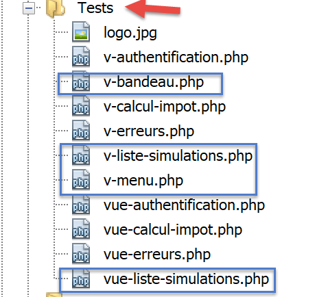
<?php
// si calcola il modello della vista
$modèle = getModelForThisView();
function getModelForThisView(Request $request, Session $session, array $config, array $content): object {
// si incapsulano i dati della pagina in $modèle
$modèle = new \stdClass();
…
// si genera il modello
return $modèle;
}
?>
<!-- documento HTML -->
<!doctype html>
<html lang="fr">
<head>
<!-- Meta tag obbligatori -->
<meta charset="utf-8">
<meta name="viewport" content="width=device-width, initial-scale=1, shrink-to-fit=no">
<!-- Bootstrap CSS -->
<link rel="stylesheet" href="https://stackpath.bootstrapcdn.com/bootstrap/4.1.3/css/bootstrap.min.css" integrity="sha384-MCw98/SFnGE8fJT3GXwEOngsV7Zt27NXFoaoApmYm81iuXoPkFOJwJ8ERdknLPMO" crossorigin="anonymous">
<title>Application impots</title>
</head>
<body>
<div class="container">
<!-- banner -->
<?php require "v-bandeau.php"; ?>
<!-- layout a due colonne -->
<div class="row">
<!-- menu a tre colonne-->
<div class="col-md-3">
<?php require "v-menu.php" ?>
</div>
<!-- elenco delle simulazioni su 9 colonne-->
<div class="col-md-9">
<?php require "v-liste-simulations.php" ?>
</div>
</div>
</div>
</body>
</html>
Commenti
- riga 28: inclusione del banner dell’applicazione [1];
- riga 33: inserimento del menu [2]. Verrà visualizzato su tre colonne sotto il banner;
- riga 37: inclusione della tabella delle simulazioni [3]. Verrà visualizzata su nove colonne sotto il banner e a destra del menu;
Abbiamo già commentato due dei tre frammenti di questa vista:
Il frammento [v-liste-simulations.php] è il seguente:
<!-- messaggio su sfondo blu -->
<div class="alert alert-primary" role="alert">
<h4>Liste de vos simulations</h4>
</div>
<!-- tabella delle simulazioni -->
<table class="table table-sm table-hover table-striped">
<!-- intestazioni delle sei colonne della tabella -->
<thead>
<tr>
<th scope="col">#</th>
<th scope="col">Marié</th>
<th scope="col">Nombre d'enfants</th>
<th scope="col">Salaire annuel</th>
<th scope="col">Montant impôt</th>
<th scope="col">Surcôte</th>
<th scope="col">Décôte</th>
<th scope="col">Réduction</th>
<th scope="col">Taux</th>
<th scope="col"></th>
</tr>
</thead>
<!-- corpo della tabella (dati visualizzati) -->
<tbody>
<?php
$i = 0;
// ogni simulazione viene visualizzata scorrendo la tabella delle simulazioni
foreach ($modèle->simulations as $simulation) {
// visualizzazione di una riga della tabella con 6 colonne - tag <tr>
// colonna 1: intestazione riga (n. simulazione) - tag <th scope='row'>
// colonna 2: valore del parametro [marié] - tag <td>
// colonna 3: valore del parametro [enfants] - tag <td>
// colonna 4: valore del parametro [salaire] - tag <td>
// colonna 5: valore del parametro [impôt] (dell'imposta) - tag <td>
// colonna 6: valore del parametro [surcôte] - tag <td>
// colonna 7: valore del parametro [décôte] - tag <td>
// colonna 8: valore del parametro [réduction] - tag <td>
// colonna 9: valore del parametro [taux] (dell'imposta) - tag <td>
// colonna 10: link per l'eliminazione della simulazione - tag <td>
print <<<EOT
<tr>
<th scope="row">$i</th>
<td>{$simulation["marié"]}</td>
<td>{$simulation["enfants"]}</td>
<td>{$simulation["salaire"]}</td>
<td>{$simulation["impôt"]}</td>
<td>{$simulation["surcôte"]}</td>
<td>{$simulation["décôte"]}</td>
<td>{$simulation["réduction"]}</td>
<td>{$simulation["taux"]}</td>
<td><a href="main.php?action=supprimer-simulation&numéro=$i">Supprimer</a></td>
</tr>
EOT;
$i++;
}
?>
</tr>
</tbody>
</table>
Commenti
- una tabella HTML è realizzata con il tag <table> (righe 6 e 58);
- le intestazioni delle colonne della tabella sono inserite all’interno di un tag <thead> (table head, righe 8, 21). Il tag <tr> (table row, righe 9 e 20) delimita una riga. Nelle righe 10-15, il tag <th> (table header) definisce un’intestazione di colonna. Ce ne sono quindi dieci. [scope="col"] indica che l’intestazione si applica alla colonna. [scope="row"] indica che l’intestazione si applica alla riga;
- righe 23-57: il tag <tbody> racchiude i dati visualizzati dalla tabella;
- righe 40-51: il tag <tr> racchiude una riga della tabella;
- riga 41: il tag <th scope=’row’> definisce l’intestazione della riga;
- righe 42-50: ogni tag <td> definisce una colonna della riga;
- riga 27: l’elenco delle simulazioni si trova nel modello [$modèle→simulations], che è una tabella associativa;
- riga 50: un link per eliminare la simulazione. Il modello URL riprende il numero visualizzato nella prima colonna della tabella (riga 41);
23.13.4.2. Verifica visiva
Raggruppiamo questi diversi elementi nella cartella [Tests] e creiamo un modello di test per la vista [vue-liste-simulations.php]:

Il modello di dati della vista [vue-liste-simulations] sarà il seguente:
<?php
// si calcola il modello della vista
$modèle = getModelForThisView();
function getModelForThisView(): object {
// si incapsulano i dati della pagina in $modèle
$modèle = new \stdClass();
// si adattano le simulazioni al formato richiesto dalla pagina
$modèle->simulations = [
[
"marié" => "oui",
"enfants" => 2,
"salaire" => 60000,
"impôt" => 448,
"décôte" => 100,
"réduction" => 20,
"surcôte" => 0,
"taux" => 0.14
],
[
"marié" => "non",
"enfants" => 2,
"salaire" => 200000,
"impôt" => 25600,
"décôte" => 0,
"réduction" => 0,
"surcôte" => 8400,
"taux" => 0.45
]
];
// le opzioni di menu
$modèle->optionsMenu = [
"Calcul de l'impôt" => "main.php?action=afficher-calcul-impot",
"Fin de session" => "main.php?action=fin-session"];
// immagine del banner
$modèle->logo = "http://localhost/php7/scripts-web/impots/version-12/Tests/logo.jpg";
// si genera il modello
return $modèle;
}
?>
<!-- documento HTML -->
<!doctype html>
<html lang="fr">
<head>
…
</head>
<body>
…
</body>
</html>
Commenti
- righe 9-30: la tabella delle simulazioni visualizzate dalla tabella HTML;
- righe 32-34: la tabella delle opzioni di menu;
Visualizziamo questa vista:
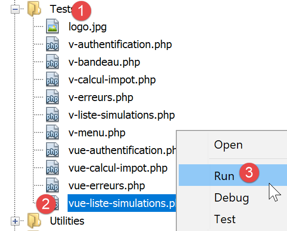
Si ottiene il seguente risultato:

Si lavora su questa vista finché il risultato visivo ottenuto non ci soddisfa. Si può quindi passare all’integrazione della vista nell’applicazione web in fase di sviluppo.
23.13.4.3. Calcolo del modello della vista

Una volta definito l’aspetto visivo della vista, si può procedere al calcolo del modello della vista in condizioni reali. Ricordiamo i codici di stato che conducono a questa vista. Si trovano nel file di configurazione:
"vues": {
"vue-authentification.php": [700, 221, 400],
"vue-calcul-impot.php": [200, 300, 341, 350, 800],
"vue-liste-simulations.php": [500, 600]
},
"vue-erreurs": "vue-erreurs.php"
Sono quindi i codici di stato [500, 600] che fanno visualizzare la vista delle simulazioni. Per comprendere il significato di questi codici, ci si può avvalere dei test [Postman] effettuati sull’applicazione jSON:
- [lister-simulations-500]: 500 è il codice di stato al termine di un'azione [lister-simulations] riuscita: viene quindi visualizzato l'elenco delle simulazioni effettuate dall'utente;
- [supprimer-simulation-600]: 600 è il codice di stato al termine di un'azione [supprimer-simulation] riuscita. Viene quindi visualizzato il nuovo elenco delle simulazioni ottenuto dopo tale eliminazione;
Ora che sappiamo in quali momenti deve essere visualizzato l’elenco delle simulazioni, possiamo calcolarne il modello in [vue-liste-simulations.php]:
<?php
// si ereditano le seguenti variabili
// Richiesta $request: la richiesta in corso
// Sessione $session: la sessione dell'applicazione
// array $config: la configurazione dell'applicazione
// array $content: la risposta del controller
// nessun errore possibile
// array $content: la risposta del controller
//
// dipendenze Symfony
use Symfony\Component\HttpFoundation\Request;
use Symfony\Component\HttpFoundation\Session\Session;
// si calcola il modello della vista
$modèle = getModelForThisView($request, $session, $config, $content);
function getModelForThisView(Request $request, Session $session, array $config, array $content): object {
// si incapsulano i dati della pagina in $modèle
$modèle = new \stdClass();
// si formattano le simulazioni secondo lo schema richiesto dalla pagina
// si trovano nella risposta del controller che ha eseguito l'azione
// sotto forma di un array di oggetti di tipo [Simulation]
$objetsSimulation = $content["réponse"];
// ogni oggetto [Simulation] verrà trasformato in un array associativo
$modèle->simulations = [];
foreach ($objetsSimulation as $objetSimulation) {
$modèle->simulations[] = [
"marié" => $objetSimulation->getMarié(),
"enfants" => $objetSimulation->getEnfants(),
"salaire" => $objetSimulation->getSalaire(),
"impôt" => $objetSimulation->getImpôt(),
"surcôte" => $objetSimulation->getSurcôte(),
"décôte" => $objetSimulation->getdécôte(),
"réduction" => $objetSimulation->getRéduction(),
"taux" => $objetSimulation->getTaux()
];
}
// le opzioni di menu
$modèle->optionsMenu = [
"Calcul de l'impôt" => "main.php?action=afficher-calcul-impot",
"Fin de session" => "main.php?action=fin-session"];
// si rende il modello
return $modèle;
}
?>
<!-- documento HTML -->
<!doctype html>
<html lang="fr">
<head>
…
</head>
<body>
…
</body>
</html>
Commenti
- righe 26-36: calcolo del modello [$modèle→simulations] utilizzato dal frammento [v-liste-simulations.php];
- righe 39-41: calcolo del modello [$modèle→optionsMenu] utilizzato dal frammento [v-menu.php];
23.13.4.4. Test [Postman]
Il test [lister-simulations-500] ci permette di ottenere il codice di stato 500. Corrisponde a una richiesta di visualizzazione delle simulazioni:

Il test [supprimer-simulation-600] ci permette di ottenere il codice di stato 600. Corrisponde alla cancellazione riuscita della simulazione n. 0. Il risultato restituito è un elenco di simulazioni con una simulazione in meno:

23.13.5. Visualizzazione degli errori imprevisti
In questo contesto, per errore imprevisto si intende un errore che non avrebbe dovuto verificarsi nel corso del normale utilizzo dell’applicazione web.
Prendiamo ad esempio il test [Postman] [calculer-impot-3xx] definito come segue:

- in [1-3], una richiesta POST con l’azione [calculer-impot];
- in [4-6]: qui è possibile definire ciò che si desidera per i tre parametri di POST:
- [4]: manca il parametro [marié];
- [5-6]: i parametri [enfants, salaire] sono presenti ma non validi;
- in [9], questi tre errori vengono segnalati con il codice di stato 338;
Tuttavia, nel modulo HTML dell’applicazione web, questo caso non può verificarsi:
- tutti i parametri sono presenti;
- il parametro [marié], che assume il proprio valore dagli attributi [value] di due pulsanti di opzione, deve necessariamente assumere uno dei valori [oui] o [non];
- con un browser recente, gli attributi <input type=’number’ min=’0’ step=’1’ …> fanno sì che i valori inseriti per i figli e lo stipendio siano necessariamente numeri interi >=0;
Tuttavia, nulla impedisce a un utente di inserire [Postman] e inviare al nostro server il test [calcul-impot-3xx] sopra riportato. Abbiamo visto che la nostra applicazione web era in grado di rispondere correttamente a questa richiesta. Definiremo “errore imprevisto” un errore che non dovrebbe verificarsi nell’ambito dell’applicazione HTML. Se si verifica, è probabile che qualcuno stia tentando di “hackerare” l’applicazione. A scopo didattico, abbiamo deciso di visualizzare una pagina di errore in questi casi. In realtà, si potrebbe visualizzare nuovamente l’ultima pagina inviata al cliente. A tal fine è sufficiente memorizzare nella sessione l’ultima risposta HTML inviata. In caso di errore imprevisto, si restituisce questa risposta. In questo modo l’utente avrà l’impressione che il server non risponda ai suoi errori, poiché la pagina visualizzata non cambia.
23.13.5.1. Presentazione della vista
La vista che presenta gli errori imprevisti è la seguente:

La vista generata dallo script [vue-erreurs.php] è composta da tre parti:
- 1: la barra superiore è generata dal frammento [v-bandeau.php] già presentato;
- 2: l'errore o gli errori imprevisti;
- 3: un menu con tre link, generato dal frammento [v-menu.php];
La visualizzazione degli errori imprevisti è generata dal seguente script [vue-erreurs.php]:

<?php
// si calcola il modello della vista
$modèle = getModelForThisView();
function getModelForThisView(): object {
// si incapsulano i dati della pagina in $modèle
$modèle = new \stdClass();
…
// si restituisce il modello
return $modèle;
}
?>
<!-- documento HTML -->
<!doctype html>
<html lang="fr">
<head>
<!-- Meta tag obbligatori -->
<meta charset="utf-8">
<meta name="viewport" content="width=device-width, initial-scale=1, shrink-to-fit=no">
<!-- Bootstrap CSS -->
<link rel="stylesheet" href="https://stackpath.bootstrapcdn.com/bootstrap/4.1.3/css/bootstrap.min.css" integrity="sha384-MCw98/SFnGE8fJT3GXwEOngsV7Zt27NXFoaoApmYm81iuXoPkFOJwJ8ERdknLPMO" crossorigin="anonymous">
<title>Application impots</title>
</head>
<body>
<div class="container">
<!-- banner a 12 colonne -->
<?php require "v-bandeau.php"; ?>
<!-- riga a due colonne -->
<div class="row">
<!-- menu a 3 colonne-->
<div class="col-md-3">
<?php require "v-menu.php" ?>
</div>
<!-- elenco degli errori -->
<div class="col-md-9">
<?php
print <<<EOT
<div class="alert alert-danger" role="alert">
Les erreurs inattendues suivantes se sont produites :
<ul>$modèle->erreurs</ul>
</div>
EOT;
?>
</div>
</div>
</div>
</body>
</html>
Commenti
- riga 27: inclusione del banner dell'applicazione [1];
- riga 32: inclusione del menu [2]. Verrà visualizzato su tre colonne sotto il banner;
- righe 34-44: visualizzazione dell'area degli errori su nove colonne;
- righe 37-44: l'operazione [print] che visualizza gli errori imprevisti;
- riga 38: questa visualizzazione avverrà in un riquadro Bootstrap con sfondo rosa;
- riga 39: un testo di presentazione;
- riga 40: il tag <ul> racchiude un elenco puntato. Questo elenco puntato è fornito dal modello [$modèle->erreurs];
Abbiamo già commentato i due frammenti di questa vista:
23.13.5.2. Test visivo
Raggruppiamo questi diversi elementi nella cartella [Tests] e creiamo un modello di prova per la vista [vue-erreurs.php]:

Il modello di dati della vista [vue-erreurs.php] sarà il seguente:
<?php
// si calcola il modello della vista
$modèle = getModelForThisView();
function getModelForThisView(): object {
// i dati della pagina vengono incapsulati in $modèle
$modèle = new \stdClass();
// la tabella degli errori imprevisti
$erreurs = ["erreur1", "erreur2"];
// si crea l'elenco HTML degli errori
$modèle->erreurs = "";
foreach ($erreurs as $erreur) {
$modèle->erreurs .= "<li>$erreur</li>";
}
// opzioni del menu
$modèle->optionsMenu = [
"Calcul de l'impôt" => "main.php?action=afficher-calcul-impot",
"Liste des simulations" => "main.php?action=lister-simulations",
"Fin de session" => "main.php?action=fin-session",];
// immagine del banner
$modèle->logo = "http://localhost/php7/scripts-web/impots/version-12/Tests/logo.jpg";
// si restituisce il modello
return $modèle;
}
?>
<!-- documento HTML -->
<!doctype html>
<html lang="fr">
<head>
…
</head>
<body>
…
</body>
</html>
Commenti
- righe 9-15: creazione dell’elenco degli errori HTML;
- righe 17-20: la tabella delle opzioni di menu;
Visualizziamo questa vista:

Si ottiene il seguente risultato:
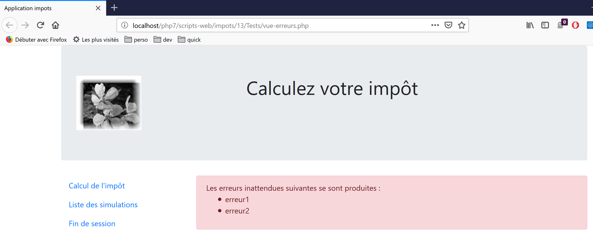
Si lavora su questa vista finché il risultato visivo ottenuto non ci soddisfa. Si può quindi passare all’integrazione della vista nell’applicazione web in fase di sviluppo.
23.13.5.3. Calcolo del modello della vista

Una volta definito l’aspetto visivo della vista, si può procedere al calcolo del modello della vista in condizioni reali. Ricordiamo i codici di stato che conducono a questa vista. Si trovano nel file di configurazione:
"vues": {
"vue-authentification.php": [700, 221, 400],
"vue-calcul-impot.php": [200, 300, 341, 350, 800],
"vue-liste-simulations.php": [500, 600]
},
"vue-erreurs": "vue-erreurs.php"
Sono quindi i codici di stato che non figurano tra quelli delle righe [2-4] a far visualizzare la vista degli errori imprevisti.
Il codice di calcolo del modello della vista [vue-erreurs.php] è il seguente:
<?php
// si ereditano le seguenti variabili
// Richiesta $request: la richiesta in corso
// Sessione $session: la sessione dell'applicazione
// array $config: la configurazione dell'applicazione
// array $content: la risposta del controller
//
// dipendenze Symfony
use Symfony\Component\HttpFoundation\Request;
use Symfony\Component\HttpFoundation\Session\Session;
// si calcola il modello della vista
$modèle = getModelForThisView($request, $session, $config, $content);
function getModelForThisView(Request $request, Session $session, array $config, array $content): object {
// si incapsulano i dati della pagina in $modèle
$modèle = new \stdClass();
// si recuperano gli errori dalla risposta del controller
$réponse = $content["réponse"];
if (!is_array($réponse)) {
// un unico messaggio di errore
$erreurs = [$réponse];
} else {
// più messaggi di errore
$erreurs = $réponse;
}
// si crea l'elenco HTML degli errori
$modèle->erreurs = "";
foreach ($erreurs as $erreur) {
$modèle->erreurs .= "<li>$erreur</li>";
}
// opzioni del menu
$modèle->optionsMenu = [
"Calcul de l'impôt" => "main.php?action=afficher-calcul-impot",
"Liste des simulations" => "main.php?action=lister-simulations",
"Fin de session" => "main.php?action=fin-session",];
// viene restituito il modello
return $modèle;
}
?>
<!-- documento HTML -->
<!doctype html>
<html lang="fr">
<head>
…
</head>
<body>
…
</body>
</html>
Commenti
- righe 19-32: calcolo del modello [$modèle→erreurs] utilizzato dalla vista [vue-erreurs.php];
- righe 34-37: calcolo del modello [$modèle→optionsMenu] utilizzato dal frammento [v-menu.php];
23.13.5.4. Test [Postman]
Il test [calculer-impot-3xx] ci permette di ottenere il codice di stato 338, che non è un codice di stato previsto. La risposta HTML è quindi la seguente:

23.13.6. Implementazione delle azioni del menu dell’applicazione
In questa sezione tratteremo l’implementazione delle azioni del menu. Ricordiamo il significato dei collegamenti che abbiamo incontrato
Vista | Collegamento | Destinazione | Ruolo |
Calcolo dell’imposta | [Liste des simulations] | [main.php?action=lister-simulations] | Richiedi l'elenco delle simulazioni |
[Fin de session] | [main.php?action=fin-session] | ||
Elenco delle simulazioni | [Calcul de l’impôt] | [main.php?action=afficher-calcul-impot] | Visualizza la schermata del calcolo delle imposte |
[Fin de session] | [main.php?action=fin-session] | ||
Errori imprevisti | [Calcul de l’impôt] | [main.php?action=afficher-calcul-impot] | Visualizza la schermata del calcolo delle imposte |
[Liste des simulations] | [main.php?action=lister-simulations] | ||
[Fin de session] | [main.php?action=fin-session] |
Va ricordato che cliccando su un link si innesca un GET verso la destinazione del link. Le azioni [lister-simulations, fin-session] sono state implementate con un’operazione GET, il che ci permette di impostarle come destinazioni dei link. Quando l’azione viene eseguita tramite un’operazione POST, non è più possibile utilizzare un link, a meno che non venga associato a JavaScript.
Dalle azioni sopra riportate risulta che l’azione [afficher-calcul-impot] non è stata ancora implementata. Si tratta di un’operazione di navigazione tra due viste: il server jSON o XML non ha alcun motivo di implementarla poiché non conosce il concetto di vista. È il server HTML che introduce questo concetto.
Dobbiamo quindi implementare l’azione [afficher-calcul-impot]. Questo ci consentirà di rivedere la procedura di implementazione di un’azione all’interno del server.
Per prima cosa, dobbiamo aggiungere un nuovo controller secondario. Lo chiameremo [AfficherCalculImpotController]:

Questo controller deve essere aggiunto al file di configurazione [config.json]:
{
"databaseFilename": "database.json",
"rootDirectory": "C:/myprograms/laragon-lite/www/php7/scripts-web/impots/version-12",
"relativeDependencies": [
…
"/Controllers/InterfaceController.php",
"/Controllers/InitSessionController.php",
"/Controllers/ListerSimulationsController.php",
"/Controllers/AuthentifierUtilisateurController.php",
"/Controllers/CalculerImpotController.php",
"/Controllers/SupprimerSimulationController.php",
"/Controllers/FinSessionController.php",
"/Controllers/AfficherCalculImpotController.php"
],
"absoluteDependencies": [
"C:/myprograms/laragon-lite/www/vendor/autoload.php",
"C:/myprograms/laragon-lite/www/vendor/predis/predis/autoload.php"
],
…
"actions":
{
"init-session": "\\InitSessionController",
"authentifier-utilisateur": "\\AuthentifierUtilisateurController",
"calculer-impot": "\\CalculerImpotController",
"lister-simulations": "\\ListerSimulationsController",
"supprimer-simulation": "\\SupprimerSimulationController",
"fin-session": "\\FinSessionController",
"afficher-calcul-impot": "\\AfficherCalculImpotController"
},
…
"vues": {
"vue-authentification.php": [700, 221, 400],
"vue-calcul-impot.php": [200, 300, 341, 350, 800],
"vue-liste-simulations.php": [500, 600]
},
"vue-erreurs": "vue-erreurs.php"
}
- riga 15: il nuovo controller;
- riga 30: la nuova azione e il relativo controller;
- riga 35: il nuovo controller restituirà il codice di stato 800. In caso di cambio di vista, non possono verificarsi errori;
Il controller [AfficherCalculImpotController.php] sarà il seguente:
<?php
namespace Application;
// dipendenze Symfony
use Symfony\Component\HttpFoundation\Request;
use Symfony\Component\HttpFoundation\Session\Session;
use Symfony\Component\HttpFoundation\Response;
class AfficherCalculImpotController implements InterfaceController {
// $config è la configurazione dell'applicazione
// elaborazione di una richiesta Request
// utilizza la sessione Session e può modificarla
// $infos sono informazioni aggiuntive specifiche per ciascun controller
// restituisce un array [$statusCode, $état, $content, $headers]
public function execute(
array $config,
Request $request,
Session $session,
array $infos = NULL): array {
// cambio di vista - basta impostare un codice di stato
return [Response::HTTP_OK, 800, ["réponse" => ""], []];
}
}
Commenti
- riga 10: come gli altri controllori secondari, il nuovo controllore implementa l’interfaccia [InterfaceController];
- le modifiche alle viste sono semplici da implementare: basta impostare il codice di stato associato alla vista di destinazione, in questo caso il codice 800 come visto in precedenza;
23.13.7. Test in condizioni reali
Il codice è stato scritto e ogni azione è stata testata con [Postman]. Resta da testare la sequenza delle viste in condizioni reali. Abbiamo bisogno di un modo per inizializzare la sessione HTML. Sappiamo che è necessario inviare al server i parametri [action=init-session&type=html]. Per evitare di doverli digitare nella barra degli indirizzi del browser, aggiungeremo lo script [index.php] alla nostra applicazione:

Lo script [index.php] sarà il seguente:
<?php
// reindirizzamento a [main.php] in modalità [html]
header('Location: main.php?action=init-session&type=html');
- riga 4: [header] è una funzione PHP che aggiunge un'intestazione HTTP alla risposta. L’intestazione HTTP [Location: main.php?action=init-session&type=html] richiede al browser client di reindirizzarsi verso la destinazione URL indicata in [Location]. Lo script [index.php] viene richiesto insieme a URL e [http://localhost/php7/scripts-web/impots/version-12/index.php]. Quando il browser del cliente riceverà il reindirizzamento da URL a [main.php?action=init-session&type=html], richiederà l'URL assoluto URL relativo a [http://localhost/php7/scripts-web/impots/version-12/main.php?action=init-session&type=html] e verrà avviata la sessione HTML;
L’URL di avvio può essere semplificato in [http://localhost/php7/scripts-web/impots/version-12/]. Nel caso in cui non venga specificata alcuna pagina nell’URL, vengono utilizzate per impostazione predefinita le pagine [index.html, index.php]. In questo caso verrà quindi utilizzato lo script [index.php];
Cominciamo: presentiamo ora alcune sequenze di viste.
Nel nostro browser, attiviamo il tracciamento delle richieste (F12 su Firefox) e richiediamo la pagina iniziale URL:

- in [4], la prima risposta del server è un reindirizzamento 302:
- in [5], viene effettuata una nuova richiesta verso l’URL [http://localhost/php7/scripts-web/impots/13/main.php?action=init-session&type=html];
Diamo un'occhiata più da vicino al reindirizzamento 302:

- in [8], il codice HTTP [302] è un codice di reindirizzamento: si comunica al browser client che la pagina URL richiesta è stata spostata. La nuova URL è specificata come [9]. Il browser seguirà questo reindirizzamento con una nuova richiesta GET:
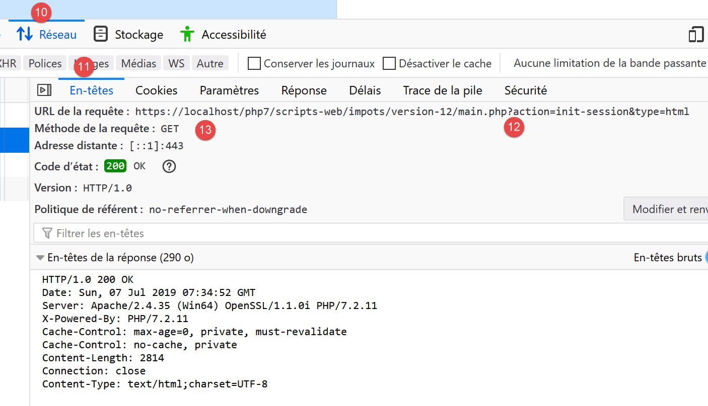
- in [12-13], la nuova richiesta effettuata dal browser;
Compiliamo il modulo che abbiamo ricevuto;

Facciamo quindi alcune simulazioni:
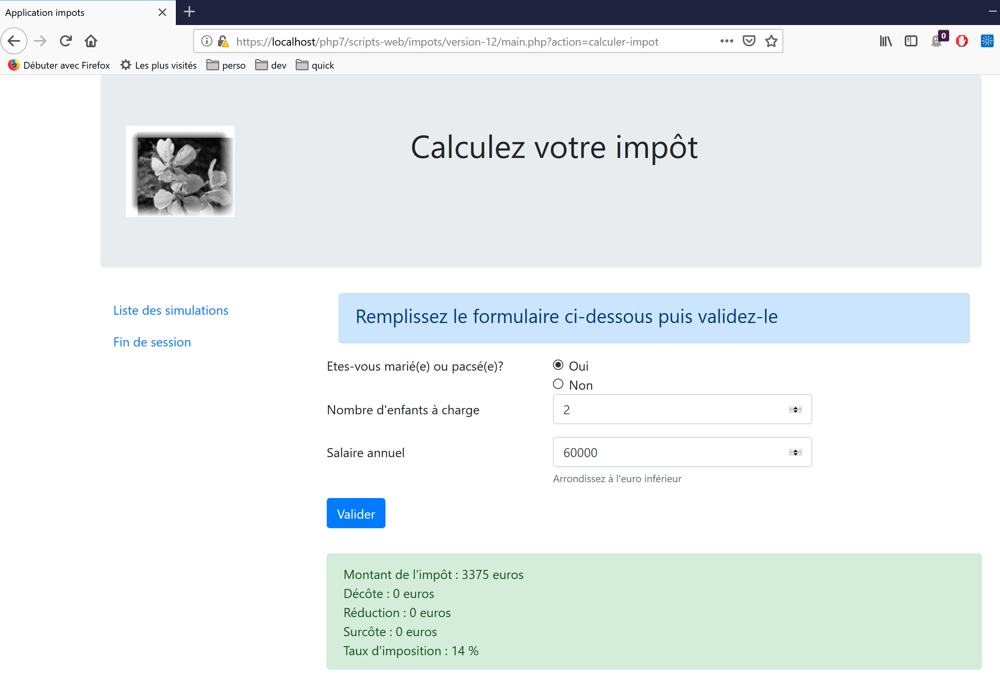

Richiediamo l'elenco delle simulazioni:

Eliminiamo la prima simulazione:

Chiudiamo la sessione:

Il lettore è invitato a effettuare ulteriori test.
23.14. Client del servizio web jSON
23.14.1. Architettura client/server

Ci concentriamo ora sul client jSON [A] del servizio web [B]. Il client [A], come il servizio web [B], presenta una struttura a livelli:

Questa architettura si riflette nella seguente organizzazione del codice:

La maggior parte delle classi è già stata presentata e spiegata:
paragrafo con link. | |
paragrafo con link. | |
paragrafo con link. | |
paragrafo con link. | |
paragrafo con link. | |
paragrafo con link. |
23.14.2. Il livello [dao]

23.14.2.1. Interfaccia
L’interfaccia del livello [dao] sarà la seguente [InterfaceClientDao.php]:
<?php
// spazio dei nomi
namespace Application;
interface InterfaceClientDao {
// lettura dei dati dei contribuenti
public function getTaxPayersData(string $taxPayersFilename, string $errorsFilename): array;
// calcolo delle imposte di un contribuente
public function calculerImpot(string $marié, int $enfants, int $salaire): Simulation;
// registrazione dei risultati
public function saveResults(string $resultsFilename, array $simulations): void;
// autenticazione
public function authentifierUtilisateur(String $user, string $password): void;
// elenco delle simulazioni
public function listerSimulations(): array;
// eliminazione di una simulazione
public function supprimerSimulation(int $numéro): array;
// inizio sessione
public function initSession(string $type = 'json'): void;
// fine sessione
public function finSession(): void;
}
Commenti
- riga 9: il metodo [getTaxPayersData] consente di elaborare il file jSON contenente i dati dei contribuenti. Questo metodo è implementato dalla funzione [TraitDao] già commentata (paragrafo "link");
- riga 15: il metodo [saveResults] consente di salvare i risultati di diversi calcoli fiscali in un file jSON. Anche in questo caso, tale metodo è implementato dal tratto [TraitDao] già commentato (paragrafo link);
- righe 12, 18, 21, 27, 30: è stato creato un metodo per ciascuna delle azioni accettate dal servizio web;
23.14.2.2. Implementazione
L’interfaccia [InterfaceClientDao] è implementata dalla seguente classe [ClientDao]:
<?php
namespace Application;
// dipendenze
use Symfony\Component\HttpClient\HttpClient;
use Symfony\Component\HttpClient\Response\CurlResponse;
class ClientDao implements InterfaceClientDao {
// utilizzo di un tratto
use TraitDao;
// attributi
private $urlServer;
private $sessionCookie;
private $verbose;
// costruttore
public function __construct(string $urlServer, bool $verbose = TRUE) {
$this->urlServer = $urlServer;
$this->verbose = $verbose;
}
…
}
Commenti
- righe 18-21: il costruttore riceve due parametri:
- l’ID URL [$urlServer] del servizio web jSON;
- un valore booleano [$verbose] che, a TRUE, indica che la classe deve visualizzare le risposte del server sulla console;
- riga 14: il cookie di sessione. La sua funzione è stata descritta nella versione 09 del client (paragrafo link);
- riga 11: la classe utilizza il tratto [TraitDao] che implementa due metodi dell’interfaccia:
- [getTaxPayersData(string $taxPayersFilename, string $errorsFilename): array];
- [function calculerImpot(string $marié, int $enfants, int $salaire): Simulation];
23.14.2.2.1. Metodo [initSession]
Il metodo [initSession] è implementato come segue:
public function initSession(string $type = 'json'): void {
// si crea un client HTTP
$httpClient = HttpClient::create();
// si invia la richiesta al server senza autenticazione
$response = $httpClient->request('GET', $this->urlServer,
["query" => [
"action" => "init-session",
"type" => $type
],
"verify_peer" => false
]);
// si recupera la risposta
$this->getResponse($response);
// si recupera il cookie di sessione
$headers = $response->getHeaders();
if (isset($headers["set-cookie"])) {
// cookie di sessione?
foreach ($headers["set-cookie"] as $cookie) {
$match = [];
$match = preg_match("/^PHPSESSID=(.+?);/", $cookie, $champs);
if ($match) {
$this->sessionCookie = "PHPSESSID=" . $champs[1];
}
}
}
}
Poiché l’azione [init-session] deve essere la prima azione richiesta al servizio web, il metodo [initSession] sarà il primo metodo del livello [dao] ad essere chiamato.
Commenti
- riga 1: il tipo di sessione desiderato viene passato come parametro. In assenza di parametro, verrà avviata una sessione jSON;
- righe 5-11: viene effettuata una richiesta GET al servizio web;
- righe 7-8: i due parametri di GET;
- riga 10: in caso di comunicazioni sicure (schema https), il certificato di sicurezza inviato dal servizio web non verrà verificato;
- riga 13: il metodo [getResponse] recupera la risposta dal server e la restituisce sotto forma di array. In questo caso, il risultato del metodo non viene utilizzato. Il metodo [getResponse] genera un'eccezione se il codice HTTP della risposta del servizio web è diverso da 200 OK;
- righe 14-25: poiché il metodo [initSession] è il primo metodo del livello [dao] ad essere eseguito, si recupera il cookie di sessione affinché i metodi successivi possano rinviarlo al servizio web. Questo codice è già stato commentato nella versione 09;
23.14.2.2.2. Il metodo [getResponse]
Il metodo [getResponse] ha il compito di elaborare la risposta del servizio web:
private function getResponse(CurlResponse $response) {
// si recupera la risposta
$json = $response->getContent(false);
// log
if ($this->verbose) {
print "$json\n";
}
// si recupera lo stato della risposta
$statusCode = $response->getStatusCode();
// errore?
if ($statusCode !== 200) {
// si verifica un errore
throw new ExceptionImpots($json);
}
// si invia la risposta
$array = json_decode($json, true);
return $array["réponse"];
}
Commenti
- riga 1: il metodo è privato;
- riga 1: il parametro del metodo è la risposta del servizio web di tipo [Symfony\Component\HttpClient\Response\CurlResponse], il tipo di risposta Symfony, quando [HttpClient] è implementato da [CurlClient], cioè dalla libreria [curl];
- riga 3: si recupera la risposta jSON dal server. Si ricorda che il parametro [false] serve a impedire a Symfony di generare un'eccezione quando lo stato della risposta HTTP del server rientra nel dominio [3xx, 4xx, 5xx];
- righe 5-7: se ci si trova in modalità [$verbose], allora si visualizza la risposta del server sulla console;
- righe 9-14: se lo stato della risposta HTTP del server è diverso da 200, viene generata un'eccezione con come messaggio di errore la risposta jSON del server;
- riga 16: la stringa jSON viene decodificata in un array;
- riga 17: le informazioni utili si trovano in [$array["réponse"]];
23.14.2.2.3. Il metodo [authentifierUtilisateur]
Il metodo [authentifierUtilisateur] è il seguente:
public function authentifierUtilisateur(string $user, string $password): void {
// si crea un client HTTP
$httpClient = HttpClient::create();
// si invia la richiesta al server con autenticazione
$response = $httpClient->request('POST', $this->urlServer,
["query" => [
"action" => "authentifier-utilisateur"
],
"body" => [
"user" => $user,
"password" => $password
],
"verify_peer" => false,
"headers" => ["Cookie" => $this->sessionCookie]
]);
// si recupera la risposta
$this->getResponse($response);
}
Commenti
- riga 5: la richiesta del cliente è un POST;
- righe 6-8: parametri nel file URL;
- righe 9-12: parametri del POST;
- riga 14: il cookie di sessione;
- riga 17: si legge la risposta. Si sa che in caso di errore (codice HTTP diverso da 200), il metodo [getResponse] genera a sua volta un'eccezione;
23.14.2.2.4. Il metodo [calculerImpot]
public function calculerImpot(string $marié, int $enfants, int $salaire): Simulation {
// si crea un client HTTP
$httpClient = HttpClient::create();
// si invia la richiesta al server senza autenticazione ma con il cookie di sessione
$response = $httpClient->request('POST', $this->urlServer,
["query" => [
"action" => "calculer-impot"],
"body" => [
"marié" => $marié,
"enfants" => $enfants,
"salaire" => $salaire
],
"verify_peer" => false,
"headers" => ["Cookie" => $this->sessionCookie]
]);
// si recupera la risposta
$array = $this->getResponse($response);
return (new Simulation())->setFromArrayOfAttributes($array);
}
Commenti
- righe 6-7: l’unico parametro di URL;
- righe 8-12: i tre parametri del metodo POST (riga 5);
- riga 17: la risposta viene elaborata;
- riga 18: se si arriva a questo punto, significa che il metodo [getResponse] non ha generato alcuna eccezione. Si restituisce un oggetto [Simulation] inizializzato con l'array restituito da [getResponse];
23.14.2.2.5. Il metodo [listerSimulations]
public function listerSimulations(): array {
// si crea un client HTTP
$httpClient = HttpClient::create();
// si invia la richiesta al server senza autenticazione ma con il cookie di sessione
$response = $httpClient->request('GET', $this->urlServer,
["query" => [
"action" => "lister-simulations"
],
"verify_peer" => false,
"headers" => ["Cookie" => $this->sessionCookie]
]);
// si recupera la risposta
return $this->getSimulations($response);
}
Commenti
- riga 5: metodo GET;
- righe 6-8: l'unico parametro di GET;
- riga 13: il recupero delle simulazioni è affidato al metodo privato [getSimulations];
23.14.2.2.6. Il metodo [getSimulations]
private function getSimulations(CurlResponse $response): array {
// si recupera la risposta JSON
$array = $this->getResponse($response);
// si ottiene un array di oggetti associativi
// ne faremo un array di oggetti Simulazione
$simulations = [];
foreach ($array as $simulation) {
$simulations [] = (new Simulation())->setFromArrayOfAttributes($simulation);
}
// si restituisce l'elenco degli oggetti Simulazione
return $simulations;
}
Commenti
- riga 3: si recupera l'array derivante dalla risposta. Si tratta di un array di array, ciascuno dei quali possiede tutti gli attributi di un oggetto [Simulation];
- riga 6: se si arriva a questo punto, significa che il metodo [getResponse] non ha generato alcuna eccezione;
- righe 6-9: si utilizza la risposta per costruire un array di oggetti [Simulation];
- riga 11: si restituisce questo array;
23.14.2.2.7. Il metodo [SupprimerSimulation]
public function supprimerSimulation(int $numéro): array {
// si crea un client HTTP
$httpClient = HttpClient::create();
// si invia la richiesta al server senza autenticazione ma con il cookie di sessione
$response = $httpClient->request('GET', $this->urlServer,
["query" => [
"action" => "supprimer-simulation",
"numéro" => $numéro
],
"verify_peer" => false,
"headers" => ["Cookie" => $this->sessionCookie]
]);
// si recupera la risposta
return $this->getSimulations($response);
}
Commenti
- riga 5: si esegue una richiesta GET;
- righe 6-9: i due parametri di URL;
- riga 14: dopo una cancellazione, il server restituisce la nuova tabella delle simulazioni. Si restituisce questa tabella;
23.14.2.2.8. Il metodo [finSession]
Una sessione di lavoro con il servizio web termina normalmente con la chiamata al metodo [finSession]:
public function finSession(): void {
// si crea un client HTTP
$httpClient = HttpClient::create();
// si invia la richiesta al server senza autenticazione ma con il cookie di sessione
$response = $httpClient->request('GET', $this->urlServer,
["query" => [
"action" => "fin-session"
],
"verify_peer" => false,
"headers" => ["Cookie" => $this->sessionCookie]
]);
// si recupera la risposta
$this->getResponse($response);
}
Commenti
- riga 5: si effettua una richiesta GET;
- righe 6-8: l’unico parametro di URL;
- riga 13: si legge la risposta. Verrà generata un'eccezione se il codice HTTP della risposta è diverso da 200;
23.14.3. Il livello [métier]

23.14.3.1. L’interfaccia
L’interfaccia del livello [métier] è la seguente [InterfaceClientMetier.php]:
<?php
// spazio dei nomi
namespace Application;
interface InterfaceClientMetier {
// calcolo delle imposte di un contribuente
public function calculerImpot(string $marié, int $enfants, int $salaire): Simulation;
// calcolo delle imposte in modalità batch
public function executeBatchImpots(string $taxPayersFileName, string $resultsFilename, string $errorsFileName): void;
// autenticazione
public function authentifierUtilisateur(String $user, string $password): void;
// elenco delle simulazioni
public function listerSimulations(): array;
// registrazione dei risultati
public function saveResults(string $resultsFilename, array $simulations): void;
// eliminazione di una simulazione
public function supprimerSimulation(int $numéro): array;
// inizio sessione
public function initSession(string $type = 'json'): void;
// fine sessione
public function finSession(): void;
}
Commenti
- solo il metodo [executeBatchImpots] della riga 12 è specifico del livello [métier]. Tutti gli altri appartengono al livello [dao] che li implementa;
23.14.3.2. La classe [ClientMetier]
La classe che implementa il livello [métier] è la seguente:
<?php
namespace Application;
class ClientMetier implements InterfaceClientMetier {
// attributo
private $clientDao;
// costruttore
public function __construct(InterfaceClientDao $clientDao) {
$this->clientDao = $clientDao;
}
// calcolo delle imposte
public function calculerImpot(string $marié, int $enfants, int $salaire): Simulation {
return $this->clientDao->calculerImpot($marié, $enfants, $salaire);
}
// calcolo delle imposte in modalità batch
public function executeBatchImpots(string $taxPayersFileName, string $resultsFileName, string $errorsFileName): void {
// si lasciano risalire le eccezioni provenienti dal livello [dao]
// si recuperano i dati dei contribuenti
$taxPayersData = $this->clientDao->getTaxPayersData($taxPayersFileName, $errorsFileName);
// tabella dei risultati
$simulations = [];
// si analizzano
foreach ($taxPayersData as $taxPayerData) {
// si calcola l'imposta
$simulations [] = $this->calculerImpot(
$taxPayerData->getMarié(),
$taxPayerData->getEnfants(),
$taxPayerData->getSalaire());
}
// registrazione dei risultati
if ($resultsFileName !== NULL) {
$this->clientDao->saveResults($resultsFileName, $simulations);
}
}
public function authentifierUtilisateur(String $user, string $password): void {
$this->clientDao->authentifierUtilisateur($user, $password);
}
public function listerSimulations(): array {
return $this->clientDao->listerSimulations();
}
public function saveResults(string $resultsFilename, array $simulations): void {
$this->clientDao->saveResults($resultsFilename, $simulations);
}
public function supprimerSimulation(int $numéro): array {
return $this->clientDao->supprimerSimulation($numéro);
}
public function finSession(): void {
$this->clientDao->finSession();
}
public function initSession(string $type = 'json'): void {
$this->clientDao->initSession($type);
}
}
Commenti
- righe 10-12: per essere creato, il livello [métier] necessita di un riferimento al livello [dao];
- righe 20-38: solo il metodo [executeBatchImpots] è specifico del livello [métier]. L’implementazione degli altri metodi delega il lavoro da svolgere ai metodi con lo stesso nome presenti nel livello [dao];
- riga 23: ci si rivolge al livello [dao] per ottenere, in un array di oggetti di tipo [TaxPayerData], i dati dei contribuenti;
- riga 25: si raggruppano nell’array [$simulations] le diverse simulazioni calcolate;
- righe 27-33: si calcola l’imposta di ciascuno dei contribuenti dell’array [$taxPayersData];
- righe 35-37: i risultati ottenuti nella tabella [$simulations] vengono salvati in un file jSON;
Nota: il livello [métier] non svolge praticamente alcuna funzione. Si potrebbe decidere di eliminarlo e di raggruppare tutto nel livello [dao].
23.14.4. Lo script principale

Lo script principale è configurato dal seguente file [config.json]:
{
"taxPayersDataFileName": "Data/taxpayersdata.json",
"resultsFileName": "Data/results.json",
"errorsFileName": "Data/errors.json",
"rootDirectory": "C:/Data/st-2019/dev/php7/poly/scripts-console/impots/version-12",
"dependencies": [
"/Entities/BaseEntity.php",
"/Entities/TaxPayerData.php",
"/Entities/Simulation.php",
"/Entities/ExceptionImpots.php",
"/Utilities/Utilitaires.php",
"/Model/InterfaceClientDao.php",
"/Model/TraitDao.php",
"/Model/ClientDao.php",
"/Model/InterfaceClientMetier.php",
"/Model/ClientMetier.php"
],
"absoluteDependencies": [
"C:/myprograms/laragon-lite/www/vendor/autoload.php"
],
"user": {
"login": "admin",
"passwd": "admin"
},
"urlServer": "https://localhost:443/php7/scripts-web/impots/version-12/main.php"
}
Lo script principale [main.php] è il seguente:
<?php
// rigoroso rispetto dei tipi dichiarati dei parametri delle funzioni
declare(strict_types = 1);
// spazio dei nomi
namespace Application;
// gestione degli errori tramite PHP
// ini_set("display_errors", "0");
//
// percorso del file di configurazione
define("CONFIG_FILENAME", "../Data/config.json");
// si recupera la configurazione
$config = \json_decode(file_get_contents(CONFIG_FILENAME), true);
// si includono le dipendenze necessarie allo script
$rootDirectory = $config["rootDirectory"];
foreach ($config["dependencies"] as $dependency) {
require "$rootDirectory/$dependency";
}
// dipendenze assolute (librerie di terze parti)
foreach ($config["absoluteDependencies"] as $dependency) {
require "$dependency";
}
// definizione delle costanti
define("TAXPAYERSDATA_FILENAME", "$rootDirectory/{$config["taxPayersDataFileName"]}");
define("RESULTS_FILENAME", "$rootDirectory/{$config["resultsFileName"]}");
define("ERRORS_FILENAME", "$rootDirectory/{$config["errorsFileName"]}");
//
// dipendenze Symfony
use Symfony\Component\HttpClient\HttpClient;
// creazione del livello [dao]
$clientDao = new ClientDao($config["urlServer"]);
// creazione del livello [métier]
$clientMetier = new ClientMetier($clientDao);
// calcolo delle imposte in modalità batch
try {
// inizializzazione della sessione
$clientMetier->initSession('json');
// autenticazione
$clientMetier->authentifierUtilisateur($config["user"]["login"], $config["user"]["passwd"]);
// calcolo delle imposte senza salvataggio dei risultati
$clientMetier->executeBatchImpots(TAXPAYERSDATA_FILENAME, NULL, ERRORS_FILENAME);
// elenco delle simulazioni
$clientMetier->listerSimulations();
// eliminazione di una simulazione
$simulations = $clientMetier->supprimerSimulation(1);
// salvataggio dei risultati
$clientMetier->saveResults(RESULTS_FILENAME, $simulations);
// fine sessione
$clientMetier->finSession();
// azione senza autenticazione - dovrebbe causare un errore
$clientMetier->listerSimulations();
} catch (ExceptionImpots $ex) {
// viene visualizzato l'errore
print "Une erreur s'est produite : " . $ex->getMessage() . "\n";
}
// fine
print "Terminé\n";
exit();
Commenti
- righe 12-16: utilizzo del file di configurazione [config.json];
- righe 18-26: caricamento di tutte le dipendenze;
- righe 28-34: definizione di costanti e alias;
- righe 36-39: creazione dei livelli [dao] e [métier];
- riga 44: inizializzazione di una sessione jSON;
- riga 46: autenticazione presso il server;
- riga 48: calcolo dell’imposta per una serie di contribuenti. I risultati non vengono salvati (2° parametro NULL);
- riga 50: si richiedono i risultati di tutti questi calcoli;
- riga 52: si elimina la simulazione n. 1 (la seconda dell'elenco);
- riga 54: si salvano le simulazioni rimanenti;
- riga 56: si termina la sessione. Ciò significa che il cookie di sessione viene eliminato;
- riga 58: si richiede l’elenco delle simulazioni. Poiché il cookie di sessione è stato eliminato, è necessario ripetere l’autenticazione. Si dovrebbe quindi ottenere un’eccezione che indica che non si è autenticati;
Il file [taxpayersdata.json] è il seguente:
[
{
"marié": "oui",
"enfants": 2,
"salaire": 55555
},
{
"marié": "ouix",
"enfants": "2x",
"salaire": "55555x"
},
{
"marié": "oui",
"enfants": "2",
"salaire": 50000
},
{
"marié": "oui",
"enfants": 3,
"salaire": 50000
},
{
"marié": "non",
"enfants": 2,
"salaire": 100000
},
{
"marié": "non",
"enfants": 3,
"salaire": 100000
},
{
"marié": "oui",
"enfants": 3,
"salaire": 100000
},
{
"marié": "oui",
"enfants": 5,
"salaire": 100000
},
{
"marié": "non",
"enfants": 0,
"salaire": 100000
},
{
"marié": "oui",
"enfants": 2,
"salaire": 30000
},
{
"marié": "non",
"enfants": 0,
"salaire": 200000
},
{
"marié": "oui",
"enfants": 3,
"salaire": 20000
}
]
Ci sono 12 contribuenti, di cui 1 non corretto. Si tratta quindi di 11 simulazioni in totale. Una di queste verrà eliminata. Ne devono rimanere 10.
Dopo l’esecuzione dello script principale, il file jSON [results.json] è il seguente:
[
{
"marié": "oui",
"enfants": "2",
"salaire": "55555",
"impôt": 2814,
"surcôte": 0,
"décôte": 0,
"réduction": 0,
"taux": 0.14
},
{
"marié": "oui",
"enfants": "3",
"salaire": "50000",
"impôt": 0,
"surcôte": 0,
"décôte": 720,
"réduction": 0,
"taux": 0.14
},
{
"marié": "non",
"enfants": "2",
"salaire": "100000",
"impôt": 19884,
"surcôte": 4480,
"décôte": 0,
"réduction": 0,
"taux": 0.41
},
{
"marié": "non",
"enfants": "3",
"salaire": "100000",
"impôt": 16782,
"surcôte": 7176,
"décôte": 0,
"réduction": 0,
"taux": 0.41
},
{
"marié": "oui",
"enfants": "3",
"salaire": "100000",
"impôt": 9200,
"surcôte": 2180,
"décôte": 0,
"réduction": 0,
"taux": 0.3
},
{
"marié": "oui",
"enfants": "5",
"salaire": "100000",
"impôt": 4230,
"surcôte": 0,
"décôte": 0,
"réduction": 0,
"taux": 0.14
},
{
"marié": "non",
"enfants": "0",
"salaire": "100000",
"impôt": 22986,
"surcôte": 0,
"décôte": 0,
"réduction": 0,
"taux": 0.41
},
{
"marié": "oui",
"enfants": "2",
"salaire": "30000",
"impôt": 0,
"surcôte": 0,
"décôte": 0,
"réduction": 0,
"taux": 0
},
{
"marié": "non",
"enfants": "0",
"salaire": "200000",
"impôt": 64210,
"surcôte": 7498,
"décôte": 0,
"réduction": 0,
"taux": 0.45
},
{
"marié": "oui",
"enfants": "3",
"salaire": "20000",
"impôt": 0,
"surcôte": 0,
"décôte": 0,
"réduction": 0,
"taux": 0
}
]
Ci sono effettivamente 10 simulazioni.
Il file jSON [errors.json] presenta il seguente contenuto:
{
"numéro": 1,
"erreurs": [
{
"marié": "ouix"
},
{
"enfants": "2x"
},
{
"salaire": "55555x"
}
]
}
I risultati della console sono i seguenti (in modalità verbosa, le risposte jSON del server vengono visualizzate sulla console):
{"action":"init-session","état":700,"réponse":"session démarrée avec type [json]"}
{"action":"authentifier-utilisateur","état":200,"réponse":"Authentification réussie [admin, admin]"}
{"action":"calculer-impot","état":300,"réponse":{"marié":"oui","enfants":"2","salaire":"55555","impôt":2814,"surcôte":0,"décôte":0,"réduction":0,"taux":0.14}}
{"action":"calculer-impot","état":300,"réponse":{"marié":"oui","enfants":"2","salaire":"50000","impôt":1384,"surcôte":0,"décôte":384,"réduction":347,"taux":0.14}}
{"action":"calculer-impot","état":300,"réponse":{"marié":"oui","enfants":"3","salaire":"50000","impôt":0,"surcôte":0,"décôte":720,"réduction":0,"taux":0.14}}
{"action":"calculer-impot","état":300,"réponse":{"marié":"non","enfants":"2","salaire":"100000","impôt":19884,"surcôte":4480,"décôte":0,"réduction":0,"taux":0.41}}
{"action":"calculer-impot","état":300,"réponse":{"marié":"non","enfants":"3","salaire":"100000","impôt":16782,"surcôte":7176,"décôte":0,"réduction":0,"taux":0.41}}
{"action":"calculer-impot","état":300,"réponse":{"marié":"oui","enfants":"3","salaire":"100000","impôt":9200,"surcôte":2180,"décôte":0,"réduction":0,"taux":0.3}}
{"action":"calculer-impot","état":300,"réponse":{"marié":"oui","enfants":"5","salaire":"100000","impôt":4230,"surcôte":0,"décôte":0,"réduction":0,"taux":0.14}}
{"action":"calculer-impot","état":300,"réponse":{"marié":"non","enfants":"0","salaire":"100000","impôt":22986,"surcôte":0,"décôte":0,"réduction":0,"taux":0.41}}
{"action":"calculer-impot","état":300,"réponse":{"marié":"oui","enfants":"2","salaire":"30000","impôt":0,"surcôte":0,"décôte":0,"réduction":0,"taux":0}}
{"action":"calculer-impot","état":300,"réponse":{"marié":"non","enfants":"0","salaire":"200000","impôt":64210,"surcôte":7498,"décôte":0,"réduction":0,"taux":0.45}}
{"action":"calculer-impot","état":300,"réponse":{"marié":"oui","enfants":"3","salaire":"20000","impôt":0,"surcôte":0,"décôte":0,"réduction":0,"taux":0}}
{"action":"lister-simulations","état":500,"réponse":[{"marié":"oui","enfants":"2","salaire":"55555","impôt":2814,"surcôte":0,"décôte":0,"réduction":0,"taux":0.14,"arrayOfAttributes":null},{"marié":"oui","enfants":"2","salaire":"50000","impôt":1384,"surcôte":0,"décôte":384,"réduction":347,"taux":0.14,"arrayOfAttributes":null},{"marié":"oui","enfants":"3","salaire":"50000","impôt":0,"surcôte":0,"décôte":720,"réduction":0,"taux":0.14,"arrayOfAttributes":null},{"marié":"non","enfants":"2","salaire":"100000","impôt":19884,"surcôte":4480,"décôte":0,"réduction":0,"taux":0.41,"arrayOfAttributes":null},{"marié":"non","enfants":"3","salaire":"100000","impôt":16782,"surcôte":7176,"décôte":0,"réduction":0,"taux":0.41,"arrayOfAttributes":null},{"marié":"oui","enfants":"3","salaire":"100000","impôt":9200,"surcôte":2180,"décôte":0,"réduction":0,"taux":0.3,"arrayOfAttributes":null},{"marié":"oui","enfants":"5","salaire":"100000","impôt":4230,"surcôte":0,"décôte":0,"réduction":0,"taux":0.14,"arrayOfAttributes":null},{"marié":"non","enfants":"0","salaire":"100000","impôt":22986,"surcôte":0,"décôte":0,"réduction":0,"taux":0.41,"arrayOfAttributes":null},{"marié":"oui","enfants":"2","salaire":"30000","impôt":0,"surcôte":0,"décôte":0,"réduction":0,"taux":0,"arrayOfAttributes":null},{"marié":"non","enfants":"0","salaire":"200000","impôt":64210,"surcôte":7498,"décôte":0,"réduction":0,"taux":0.45,"arrayOfAttributes":null},{"marié":"oui","enfants":"3","salaire":"20000","impôt":0,"surcôte":0,"décôte":0,"réduction":0,"taux":0,"arrayOfAttributes":null}]}
{"action":"supprimer-simulation","état":600,"réponse":[{"marié":"oui","enfants":"2","salaire":"55555","impôt":2814,"surcôte":0,"décôte":0,"réduction":0,"taux":0.14,"arrayOfAttributes":null},{"marié":"oui","enfants":"3","salaire":"50000","impôt":0,"surcôte":0,"décôte":720,"réduction":0,"taux":0.14,"arrayOfAttributes":null},{"marié":"non","enfants":"2","salaire":"100000","impôt":19884,"surcôte":4480,"décôte":0,"réduction":0,"taux":0.41,"arrayOfAttributes":null},{"marié":"non","enfants":"3","salaire":"100000","impôt":16782,"surcôte":7176,"décôte":0,"réduction":0,"taux":0.41,"arrayOfAttributes":null},{"marié":"oui","enfants":"3","salaire":"100000","impôt":9200,"surcôte":2180,"décôte":0,"réduction":0,"taux":0.3,"arrayOfAttributes":null},{"marié":"oui","enfants":"5","salaire":"100000","impôt":4230,"surcôte":0,"décôte":0,"réduction":0,"taux":0.14,"arrayOfAttributes":null},{"marié":"non","enfants":"0","salaire":"100000","impôt":22986,"surcôte":0,"décôte":0,"réduction":0,"taux":0.41,"arrayOfAttributes":null},{"marié":"oui","enfants":"2","salaire":"30000","impôt":0,"surcôte":0,"décôte":0,"réduction":0,"taux":0,"arrayOfAttributes":null},{"marié":"non","enfants":"0","salaire":"200000","impôt":64210,"surcôte":7498,"décôte":0,"réduction":0,"taux":0.45,"arrayOfAttributes":null},{"marié":"oui","enfants":"3","salaire":"20000","impôt":0,"surcôte":0,"décôte":0,"réduction":0,"taux":0,"arrayOfAttributes":null}]}
{"action":"fin-session","état":400,"réponse":"session supprimée"}
{"action":"lister-simulations","état":103,"réponse":["pas de session en cours. Commencer par action [init-session]"]}
Une erreur s'est produite : {"action":"lister-simulations","état":103,"réponse":["pas de session en cours. Commencer par action [init-session]"]}
Terminé
23.14.5. Test [Codeception]
Come per i client precedenti, il client della versione 12 può essere sottoposto ai test [Codeception]:
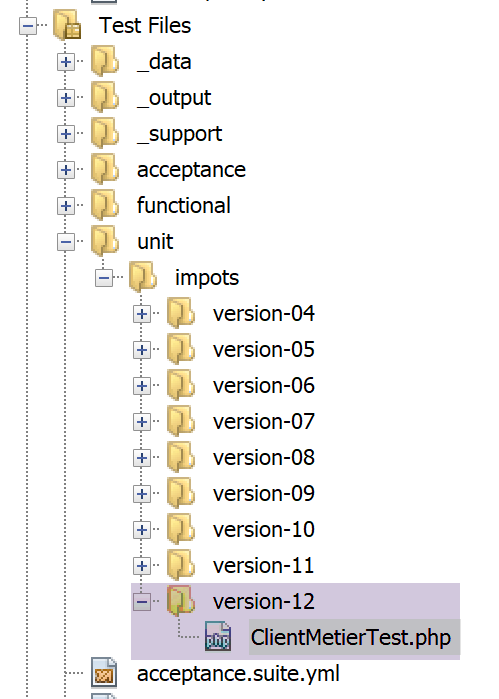
Il codice della classe di test del livello [métier] del client è analogo a quello delle classi di test dei client precedenti:
<?php
// rigoroso rispetto dei tipi dichiarati dei parametri delle funzioni
declare (strict_types=1);
// spazio dei nomi
namespace Application;
// definizione delle costanti
define("ROOT", "C:/Data/st-2019/dev/php7/poly/scripts-console/impots/version-12");
// percorso del file di configurazione
define("CONFIG_FILENAME", ROOT . "/Data/config.json");
// si recupera la configurazione
$config = \json_decode(\file_get_contents(CONFIG_FILENAME), true);
// si includono le dipendenze necessarie allo script
$rootDirectory = $config["rootDirectory"];
foreach ($config["dependencies"] as $dependency) {
require "$rootDirectory$dependency";
}
// dipendenze assolute (librerie di terze parti)
foreach ($config["absoluteDependencies"] as $dependency) {
require "$dependency";
}
// dipendenze Symfony
use Symfony\Component\HttpClient\HttpClient;
// classe di test
class ClientDaoTest extends \Codeception\Test\Unit {
// livello DAO
private $clientDao;
public function __construct() {
parent::__construct();
// si recupera la configurazione
$config = \json_decode(\file_get_contents(CONFIG_FILENAME), true);
// creazione del livello [dao]
$clientDao = new ClientDao($config["urlServer"]);
// creazione del livello [métier]
$this->métier = new ClientMetier($clientDao);
// inizializzazione della sessione
$this->métier->initSession("json");
// autenticazione
$this->métier->authentifierUtilisateur("admin", "admin");
}
// test
public function test1() {
$simulation = $this->métier->calculerImpot("oui", 2, 55555);
$this->assertEqualsWithDelta(2815, $simulation->getImpôt(), 1);
$this->assertEqualsWithDelta(0, $simulation->getSurcôte(), 1);
$this->assertEqualsWithDelta(0, $simulation->getDécôte(), 1);
$this->assertEqualsWithDelta(0, $simulation->getRéduction(), 1);
$this->assertEquals(0.14, $simulation->getTaux());
}
public function test2() {
….
}
…
public function test11() {
…
}
}
Commenti
- righe 34-46: si ricorda che il costruttore della classe di test viene eseguito prima di ogni test;
- righe 38-41: creazione dei livelli [dao] e [métier];
- righe 42-45: i metodi di test [test1…, test11] verificano il metodo [calculerImpot]. Affinché ciò sia possibile, è necessario prima inizializzare una sessione jSON ed effettuare l’autenticazione;
I risultati del test sono i seguenti:

Dovrebbero essere effettuati molti altri test:
- testare i diversi metodi del livello [dao];
- testare gli stati restituiti dal server web. Questi stati sono importanti poiché il loro valore determina quale pagina HTML visualizzare;